Manuel du logiciel Parametrix
Une publication de Donatoni Macchine S.r.l.
Version du logiciel : 4.14
Version du manuel : 1.0
Date :
- 1 PRÉAMBULE
- 2 PROGRAMMES EMBARQUÉS SUR LA MACHINE
- 3 PARAMETRIX
- 3.1 PARAMÈTRES UTILISATEUR
- 3.2 NOUVEL USINAGE
- 3.3 PANNEAU OUTIL
- 3.4 PARAMÈTRES DUSINAGE DE LA DALLE
- 3.5 ACCÈS AUX COMMANDES MANUELLES
- 3.6 GESTION DU LASER
- 3.7 AJOUTER UNE PHOTO À LA ZONE DE TRAVAIL
- 3.8 PÉRIMÈTRE DE LA DALLE
- 3.9 GESTION DE LAFFICHAGE DU PLAN DE TRAVAIL
- 3.10 AFFICHAGE DES ENTITÉS DUSINAGE
- 3.11 CRÉATION DES PIÈCES
- 3.12 LISTE DES PIÈCES
- 3.13 MODIFIER LA PIÈCE
- 3.14 NESTING
- 3.15 INTERACTION AVEC LES PIÈCES DANS LA ZONE DE TRAVAIL
- 3.16 ENREGISTREMENT DE LUSINAGE
- 3.17 CHARGER UN USINAGE
- 3.18 INFORMATIONS
- 3.19 MACHINE SUR LA COUPE
- 3.20 GESTION DE LORDRE DE COUPE DES PIÈCES
- 3.21 OPTIMISATION ET GESTION DES COUPES
- 3.22 BOOK MATCH (OPTION)
- 3.23 DÉCHARGER LA PIÈCE (OPTION)
- 3.24 CYCLE DE DRESSAGE DE LOUTIL (OPTION)
- 3.25 ÉTIQUETAGE (OPTION)
- 3.26 SIMULATION DE COUPE
- 4 PARAMETRIX SX
Généralités
Les informations contenues dans ce document s’appliquent uniquement aux versions du logiciel indiquées sur la page de garde.
Il est possible que toutes les fonctions offertes par le produit ne soient pas décrites dans la présente documentation ; dans ce cas, Donatoni Macchine n’est toutefois pas tenue de garantir ces fonctions ni de les conserver dans les versions futures.
Le présent document est fourni en annexe « Section B », partie logiciel, du manuel d’utilisation et de maintenance de la machine.
Objet du manuel
Ce manuel contient les instructions d’utilisation nécessaires à une bonne connaissance du programme Parametrix ainsi que des informations utiles pour trouver des solutions aux dysfonctionnements.
Le bon fonctionnement, la durée de vie et l’économie d’exploitation de la machine dépendent du respect des prescriptions décrites dans ce manuel.
Le manuel d’utilisation et de maintenance de la machine ainsi que le présent manuel du logiciel doivent toujours être disponibles sur le lieu d’installation de l’équipement, dans un endroit sûr et facilement accessible. En cas de perte de l’un d’eux, contacter le responsable du service de prévention et de protection.
Le non-respect des prescriptions décrites dans ce manuel, la négligence ou une utilisation incorrecte et inadaptée de la machine peuvent entraîner l’annulation, par le Constructeur, de la garantie accordée à la machine et empêcher d’obtenir les avantages pour lesquels celle-ci a été conçue.
DONATONI MACCHINE SRL reste toutefois à disposition pour assurer une assistance technique rapide et précise ainsi que tout ce qui peut être utile au meilleur fonctionnement et à l’obtention du rendement maximal de la machine.
Le Constructeur se réserve le droit de modifier, à sa seule discrétion, la présente publication et les données qu’elle contient s’il le juge nécessaire à des fins d’amélioration technique ou commerciale du produit.
Conservation du manuel
Le présent Manuel du logiciel doit être conservé pendant toute la durée de vie opérationnelle de la machine, y compris en cas de cession à des tiers.
Afin de conserver correctement le Manuel du logiciel, il est recommandé de :
Utiliser le Manuel de manière à ne pas endommager tout ou partie de son contenu ; il est notamment recommandé de ne pas abandonner le Manuel pendant son utilisation et de le remettre à l’emplacement prévu immédiatement après consultation ;
Ne retirer, déchirer ou réécrire sous aucun prétexte des parties du Manuel ;
Conserver le Manuel dans des zones protégées de l’humidité, de la chaleur et des autres agents environnementaux susceptibles d’en compromettre l’intégrité ou la durée de vie ;
En cas de perte ou de détérioration de tout ou partie du contenu du présent Manuel, demander au Constructeur une copie de cette documentation.
Au démarrage de l’application, si le référencement des axes a déjà été effectué, l’écran initial suivant s’affiche :

Barre supérieure

 | Paramètres |
 | Paramètres outil |
 | Rotation automatique 0/ 90 degrés |
 | Mise en position de stationnement automatique  |
 | Activation / Désactivation de l’eau interne |
 | Activation / Désactivation de l’eau externe |
 | Changement manuel d’outil |
 | Maintenance |
 | Aide |
Éléments communs de l’interface
Les éléments de l’interface graphique communs aux différentes fonctions sont les suivants :
Axes
Cette interface affiche les valeurs des axes de la machine.
Exemple de l’élément d’interface « Axes » avec origine 0 et référencement des axes déjà effectué :

Exemple de l’élément d’interface « Axes » avec origine 0 et référencement des axes restant à effectuer :

Les éléments qui composent cette section de l’interface commune sont expliqués ci-dessous, en prenant comme référence le cas où les axes ont déjà été référencés.
 | Cote réelle : indique la position de l’axe par rapport à l’origine active. |
 | Réinitialisation de l’axe |
 | Rotation automatique _90 degrés Rotation automatique -90 degrés |
Commandes
Ce panneau contient plusieurs boutons dont le fonctionnement est expliqué ci-dessous :

 | Mode interpolation Mouvement interpolé de l’axe C : en actionnant la commande de l’axe C, les axes X et Y se déplacent également en plus de la rotation, de sorte que le bord intérieur de la lame (ou la pointe de l’outil) reste immobile. |
 | Interpolation RTCP |
 | MDI |
Outil
Cet élément de l’interface affiche les principales informations concernant l’outil monté sur la machine.
Exemple d’outil monté sur la machine : Disque

Exemple d’outil monté sur la machine : Foret carottier

 | Outil actif Le choix est limité à :
|
Origine
Cliquer sur le champ « Origine » affiche un petit pavé numérique à l’écran permettant à l’opérateur de sélectionner une autre origine de travail.
Les valeurs d’Origine peuvent varier de 0 à 19 inclus.
Exemple avec origine 0 :

Exemple avec origine 10 :

Paramètres avancés de l’origine
Appuyer sur la touche d’options au-dessus de l’origine ouvre un panneau affichant une vue centralisée de toutes les origines disponibles et de leurs valeurs associées. Il est possible de changer l’origine active en cliquant sur la ligne correspondante.

RTCP - Rotation Tool Center Point
La fonction RTCP permet à l’opérateur d’effectuer un positionnement pour une coupe inclinée en maintenant la hauteur de l’outil inchangée, même lorsque l’inclinaison varie pendant le positionnement. Le bord intérieur du disque reste à la même position qu’au début du mouvement.
Procédure de fonctionnement
Régler la cote cible dans la zone dédiée à l’axe « A » (inclinaison) ou « C »
Appuyer sur le bouton RTCP lance la fonction d’inclinaison ou de rotation tout en maintenant fixe le point le plus bas de l’outil.
Le déplacement via la commande RTCP n’est autorisé que lorsque la clé codée est insérée dans le poste prévu à cet effet, repérable sur la console opérateur.
Attendre que la machine se positionne à la cote définie.
Moteur
Cette section présente quelques statistiques concernant le moteur de la machine :

 | Tours par minute (RPM) |
 | Consommation (A) |
 | Seuil d’alarme (A) |
Feed
La valeur Feed représente le déplacement interpolé de la machine.

Barre latérale droite
Au démarrage de l’application, la fonction présélectionnée est MANUEL.
Cette barre latérale contient les commandes et programmes/fonctions disponibles suivants :

Barre inférieure
La barre inférieure affiche des messages d’information et d’erreur ainsi que certains boutons destinés à des fonctions spécifiques.
Trois exemples de barre inférieure sont présentés ci-dessous :
Sans alarmes actives.

Avec une urgence générale activée, signalée par une icône, un code d’erreur (dans cet exemple PE0000), sa description et le bouton des alarmes clignotant à droite.

Avec un message affiché, dans l’exemple JOG direct actif.

 | Alarmes |
 | Réduction du logiciel |
 | Arrêt de la machine |
Alarmes
La page des alarmes indique les Alarmes/Messages actifs du système.
Si la machine ne présente aucune alarme active, la page est vide ; sinon, une ligne est affichée pour chaque erreur présente.
La page d’exemple suivante, relative à la gestion et à l’affichage des alarmes, présente une alarme active dans le système :

Boutons des alarmes
 | Actualiser |
 | Historique des alarmes |
 | Messages / Alarmes |
 | Groupes d’alarmes |
Affichage des alarmes - Standard
L’affichage standard d’une alarme comprend :

 | Lien en ligne |
 | Code alarme |
 | Description |
Affichage des alarmes - Historique
L’historique quotidien des alarmes comprend, outre les éléments déjà décrits, les données suivantes :

 | Moment du changement d’état |
État de l’alarme |
Affichage des alarmes - Groupes
Le système de regroupement affiche une seule entrée pour chaque alarme, afin d’éviter les doublons.

Nombre d’occurrences | |
 | Moment de la première activation |
 | Moment de la dernière activation |
Il est possible d’utiliser les ventouses en mode manuel pour déplacer des pièces d’une zone de travail à une autre.
/0_0_Ventose_C.png)
Boutons des ventouses
/Test_-_png_-_20.png) | Activation / désactivation des ventouses |
/1.3.png) | VENTOUSES : MONTER - Stationnement des ventouses |
/2.3.png) | VENTOUSES : DESCENDRE - Préparer les ventouses |
/4.3.png) | SOULEVER LA PIÈCE : RELÂCHER - Déchargement de la pièce |
/3.3.png) | SOULEVER LA PIÈCE : DÉMARRER - Levage de la pièce |
/5.2_off.png) /5.2_on.png) | SOUFFLAGE - Commande de soufflage |
/6.2_off.png) /6.2_on.png) | VIDE - Commande de la pompe à vide |
Conditions de sécurité
Faire particulièrement attention aux ventouses actives pendant le levage et s’assurer que les zones utilisées sont suffisantes pour soulever la pièce à manutentionner. Toujours utiliser la plus grande surface de vide disponible pour saisir la pièce et vérifier que le matériau ne présente aucun défaut ni aucune rupture susceptible de créer des dangers ou des problèmes de fonctionnement de la machine.
Une fois la pompe à vide activée, sa désactivation n’est autorisée qu’au moyen des fonctions automatiques prévues à cet effet. L’appui sur le bouton de réinitialisation ou sur le bouton d’arrêt d’urgence n’a aucun effet sur la pompe à vide, qui continue de fonctionner. L’arrêt de la pompe peut être forcé à l’aide du bouton prévu à cet effet dans la page « Commandes supplémentaires ».
Dans les procédures automatiques, avant de soulever la pièce, l’état du vide est contrôlé par un capteur dédié : si une valeur de vide suffisante n’est pas détectée, l’alarme « manque de vide » apparaît. La pompe reste active jusqu’à ce que le vacuostat détecte une valeur correcte, sauf si elle est désactivée depuis la page « Commandes supplémentaires ».
Dans les nouvelles versions de Parametrix, il est possible d’utiliser la fonction « Coupe unique ». En sélectionnant l’entrée « Coupe unique » dans la liste, une page semblable à celle-ci s’affiche.
La Coupe unique permet d’effectuer une coupe rectiligne (ou inclinée) sur la dalle en partant de la position actuelle de la machine et en terminant à la longueur demandée par l’utilisateur. Cette fonction NE permet PAS d’effectuer des coupes en arc ou en cercle.

Boutons
 | Boutons de coupes parallèles |
 | Max |
 | Stop |
 | Changer le mode des passes |
 | Enregistrer |
 | Ouvrir |
Paramètres
Selon le type de matériau à usiner, les paramètres peuvent être réglés différemment et enregistrés pour de futurs usinages similaires.
Paramètres communs
 | Longueur de la coupe unique |
 | Distance de déplacement |
Paramètres de configuration de l’usinage par passes
 | Pénétration dans le matériau en avançant |
 | Pénétration dans le matériau en reculant |
 | Pénétration dans le matériau pour la dernière passe |
 | Vitesse d’usinage en avançant |
 | Vitesse d’usinage en reculant |
 | Vitesse d’entrée dans le matériau |
 | Vitesse d’usinage de la dernière passe |
Paramètres de configuration de l’usinage à passe pleine
 | Vitesse d’entrée dans le matériau |
 | Vitesse d’usinage en avançant |
Exécution de l’usinage
Pour commencer l’usinage, positionner tout d’abord la machine au point de départ souhaité. Une fois correctement positionnée, saisir la valeur de la longueur de coupe dans le champ prévu à cet effet.
Il est alors possible de mettre le disque en marche à l’aide des commandes présentes sur le pupitre du moniteur. Lorsque tout est prêt, lancer le processus en appuyant sur la touche « Start cycle ».
L’usinage commence dans la direction dans laquelle la machine est orientée au moment de l’activation de la coupe ; il est donc important d’en vérifier l’orientation avant de démarrer le cycle.
La page de programmation des fichiers ISO permet de gérer et de lancer les usinages à l’aide de fichiers .pgm créés auparavant avec des programmes CAD-CAM.

Liste
La liste du programme ISO, initialement vide, contient tous les programmes ISO pouvant être exécutés séquentiellement.

Boutons
Une série de boutons permet de gérer la liste.
 | Ouvrir le fichier |
 | Nouvelle liste ISO |
 | Ajouter une pause |
 | Supprimer l’élément sélectionné |
 | Vider la liste |
 | Déplacer l’élément sélectionné vers le haut |
 | Déplacer l’élément sélectionné vers le bas |
Dans la partie inférieure se trouvent également les deux boutons relatifs aux modes d’exécution des programmes :
  | Manuel / automatique |
  | Unique / suivant automatique |
Ouvrir le fichier
Appuyer sur ce bouton affiche une fenêtre « Ouverture du fichier », comme illustré ci-dessous :

Cette fenêtre est divisée en plusieurs composants :
Liste des fichiers
comprend tous les fichiers au format .pgm présents dans le répertoire actuellement sélectionné
Boutons entre la liste Fichiers et la liste Fichiers sélectionnés
Liste des fichiers sélectionnés
Liste initialement vide
aperçu du fichier sélectionné
Affiche un aperçu d’un fichier .pgm sélectionné dans Fichiers ou Fichiers sélectionnés
Barre inférieure et filtre de recherche
Boutons centraux, placés entre la liste « FICHIERS » et la liste « FICHIERS SÉLECTIONNÉS »
Sélectionner l’élément | |
Supprimer l’élément | |
| Insérer une pause |
 | Déplacer l’élément sélectionné vers le haut |
 | Déplacer l’élément sélectionné vers le bas |
Le contenu de la barre inférieure est présenté ci-dessous :
 | Effacer le filtre de recherche |
 | Tri par dernière modification |
 | Tri alphabétique |
 | Afficher les fichiers de la clé USB |
 | Afficher le dossier ISO |
 | Afficher le contenu |
 | Supprimer le fichier |
 | Activer/Désactiver la copie |
Code du programme ISO
Le code du programme ISO en cours d’exécution s’affiche dans cette fenêtre :
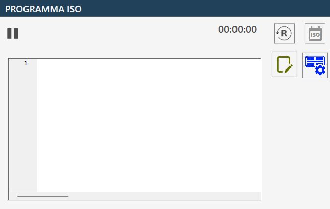
Boutons
Dans cette section du programme ISO se trouvent les boutons et fonctions suivants.
 | Minuterie et Réinitialisation |
 | Aperçu ISO |
 | Recherche de bloc |
 | Recherche de bloc par ligne Après avoir saisi un nombre dans le champ « Numéro de ligne » et appuyé sur le bouton « Aller à », l’affichage du code du programme ISO se déplace vers la ligne souhaitée, ou vers la dernière ligne disponible si le nombre saisi dépasse le nombre de lignes du programme ISO sélectionné. Il est possible de terminer la recherche d’un bloc et de rétablir l’affichage du bouton « Recherche de bloc » en appuyant sur le bouton Fermer : |
 | Fonction Dry Run (Activée / désactivée) L’utilisation de cette fonction impose de n’utiliser AUCUN type de matériau pendant l’usinage, car les vitesses définies dans le programme ISO ne sont pas respectées pendant l’exécution ; la commande numérique exécute l’ensemble du programme à la vitesse nominale maximale pouvant être atteinte avec les axes interpolés. |
 | Fonction Test ISO (Activée / désactivée) |
Panneau ventouses | |
 | Enregistrer |
Recherche de bloc
Pendant l’exécution de fichiers (.pgm), la fonction de recherche de bloc peut être utile pour repositionner l’outil au point où la machine a interrompu l’exécution du programme, en cas de blocage de l’outil dans le matériau ou d’autres types de blocage.
Une fois le bouton enfoncé, il est possible de rechercher la ligne à partir de laquelle poursuivre/démarrer l’usinage en saisissant le numéro de ligne et en appuyant sur le bouton « Recherche de bloc par ligne », ou en faisant défiler le fichier à l’aide de la barre de défilement placée à côté du fichier puis en sélectionnant la ligne souhaitée.
Après avoir sélectionné le point du programme à partir duquel la machine doit reprendre le travail interrompu, appuyer sur le bouton « Start cycle » ; la machine recalcule toutes les lignes de code du fichier .pgm sans effectuer aucun mouvement. La durée de cette opération dépend du nombre de lignes de code à générer sans effectuer de mouvement.
Une fois le recalcul terminé, la machine active une pause automatique et demande un nouvel appui sur le bouton « Start cycle » pour démarrer l’usinage.
Avant de démarrer le cycle, il est recommandé de tenir compte du positionnement initial de la machine, qui implique tous les axes simultanément.
Cela est nécessaire car la machine se déplace de sa position actuelle jusqu’au point de début d’usinage en recherchant le trajet le plus court ; pour ce faire, tous les axes se déplacent afin d’atteindre exactement ce point.
Cela signifie, par exemple, que l’axe Z ne descend pas une fois le point initial atteint, mais descend progressivement pendant le trajet. La machine ou le matériau pourrait être endommagé si elle entrait en collision avec du matériau présent sur le trajet.
Selon la situation, il est donc possible de désélectionner le mouvement d’un ou plusieurs axes afin d’éviter tout dommage.
Pour ce faire, il suffit de sélectionner les boutons situés au-dessus de chaque axe ; ils passent du vert au rouge.
Les boutons redeviennent automatiquement verts après avoir appuyé sur « Start Cycle ».
Aperçu ISO
Si l’aperçu ISO a été activé, un cadre supplémentaire semblable à celui illustré ci-dessous s’affiche à droite du cadre « Code du programme ISO » :

L’aperçu ISO met à disposition les boutons suivants :
 | Vue en perspective |
 | Vue orthogonale au plan XY |
 | Vue orthogonale au plan ZX |
Vue orthogonale au plan ZY | |
 | Activer ou désactiver l’affichage de l’aperçu  |
Exécution de l’usinage
L’opérateur peut créer une liste de fichiers PGM en ouvrant les fichiers souhaités à l’aide de la fonction de chargement prévue à cet effet.
Avant de démarrer l’exécution, il est possible, si nécessaire, de modifier l’ordre des fichiers dans la liste et d’insérer des pauses entre les exécutions. Ces pauses permettent de gérer le processus de manière plus souple et, si nécessaire, de l’interrompre en toute sécurité.
En réglant le mode d’exécution sur « Automatique », la fonction « Test ISO » est également disponible ; elle permet de vérifier la validité du programme ISO sélectionné avant son exécution réelle.
Pour démarrer le cycle d’exécution, l’opérateur doit appuyer sur le bouton « Démarrer cycle ». Le premier programme ISO chargé et affiché dans la liste est alors exécuté.
Les programmes ISO peuvent être exécutés selon deux modes :
Le mode « Unique » permet d’interrompre l’exécution de la programmation à la fin de chaque fichier ISO. Il est nécessaire d’appuyer de nouveau sur le bouton « Démarrer cycle » pour exécuter le fichier suivant de la liste.
Le mode « Suivant automatique » permet d’exécuter les fichiers ISO en séquence, sans intervention manuelle, jusqu’à la fin de la liste.
Dans les deux modes, les pauses éventuellement insérées entre les fichiers permettent à l’opérateur d’interrompre le cycle à tout moment, assurant ainsi un contrôle continu de l’exécution.
Le cycle de surfaçage permet de surfacer le plan de travail ou le matériau. Ce programme est utile lorsque le plan de travail est rendu irrégulier par les coupes ou lorsqu’il est nécessaire d’uniformiser l’épaisseur du matériau.
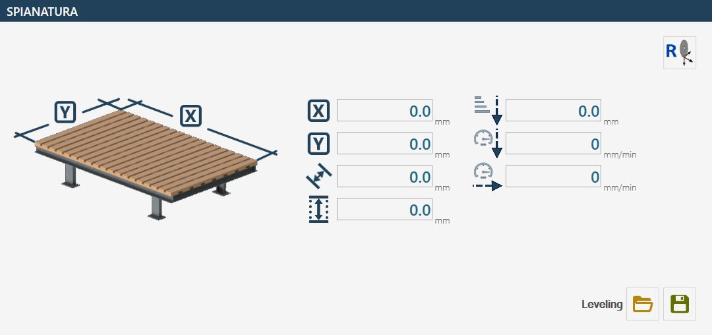
Paramètres de surfaçage
Cote de déplacement par rapport à l’axe X | |
 | Cote de déplacement par rapport à l’axe Y |
 | Distance de déplacement |
 | Profondeur |
 | Pas Z |
 | Vitesse de coupe en plongée |
 | Vitesse de coupe en avant |
Modifier l’origine de l’outil |
Exécution de l’usinage
Le programme « SURFAÇAGE » ne nécessite pas de mise à zéro des origines X, Y et Z.
La position de départ est déterminée à partir de la position de l’outil au moment du démarrage du cycle.
Après avoir réglé les différents paramètres, amener le disque en rotation à la profondeur maximale souhaitée du plan de travail ou du matériau, puis démarrer le cycle avec le bouton START CYCLE.
La page de pochage permet de réaliser une poche rectangulaire avec rayons de raccordement et fond plat.
Cet usinage nécessite l’utilisation d’une fraise appropriée, à monter sur la broche principale.
Le « niveau du plan de travail » est utilisé comme niveau de fond.
Le cycle fonctionne par passes, avec une entrée hélicoïdale au centre et une distance entre les passes réglable dans les paramètres.
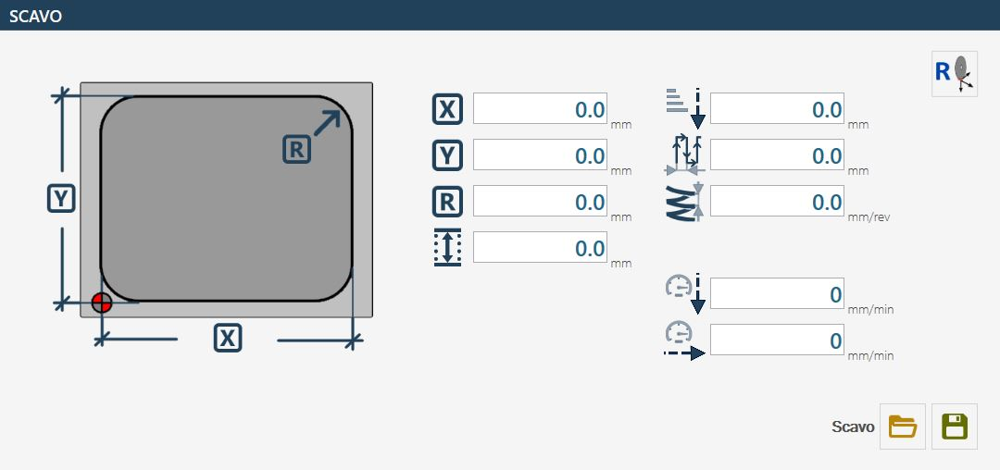
Paramètres
 | X |
 | Y |
 | Rayon de raccordement R |
 | Profondeur de la poche |
 | Pas Z |
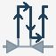 | Distance entre les passes |
Incrément de profondeur à l’entrée  | |
 | Vitesse d’usinage |
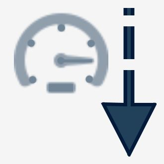 | Vitesse de descente |
 | Mise à zéro des axes X et Y  La position est acquise en plaçant le centre de la fraise au point indiqué. |
Exécution de l’usinage
Saisir les dimensions X, Y et R qui caractérisent la forme de la poche rectangulaire à obtenir.
Vérifier l’exactitude des données relatives à l’outil, en particulier son diamètre.
Les deux modes d’exécution suivants sont disponibles
Mode Atteinte de la poche jusqu’à la cote du plan de travail
Pour réaliser correctement une poche, il est nécessaire de positionner le centre de la machine au point d’origine de la poche, comme indiqué sur la figure du chapitre précédent. Cela garantit que l’ensemble de l’usinage se développe correctement par rapport à la zone définie.
Définir ensuite les dimensions caractéristiques de la forme de la poche à réaliser.
Avant de démarrer l’usinage, il est essentiel de vérifier l’exactitude des données de l’outil sélectionné, en accordant une attention particulière à son diamètre, car celui-ci influence directement la précision et la qualité de la poche.
L’acquisition de la « cote du plan de travail » doit être effectuée en prenant comme référence le niveau du fond de la poche. Pour la déterminer correctement, se positionner sur le bord supérieur du matériau et mettre la cote Z à zéro. À partir de là, effectuer un déplacement vers le bas égal à la profondeur souhaitée de la poche. Il est alors possible d’acquérir la cote du plan de travail à l’aide du bouton prévu à cet effet. Avec des outils de type fraise, il est recommandé d’effectuer cette opération avec l’axe A positionné à 90_, afin d’éviter les imprécisions dues à la longueur réelle de l’outil.
Une fois la cote du plan de travail définie, procéder à la mise à zéro des axes X et Y. Pour cela, appuyer sur la touche de réinitialisation correspondante et positionner le centre de la fraise exactement au point indiqué sur la figure par le symbole de référence. Sur les machines équipées d’un laser pointeur, le point zéro X et Y peut être acquis directement à l’aide de la référence fournie par le laser.
La profondeur de la poche dépend directement du niveau défini comme cote du plan de travail et de la position de l’axe Z au moment du démarrage du cycle avec le bouton « Start cycle ». L’usinage commence par une entrée hélicoïdale au centre, jusqu’à la profondeur spécifiée dans le paramètre « Pas Z ». La zone est ensuite vidée par un mouvement concentrique, en respectant la distance définie dans les paramètres d’usinage.
Les déplacements nécessaires de la machine pour atteindre la position initiale sont effectués à la « cote de dégagement », qui peut être définie dans les paramètres outil. Cela garantit que l’outil n’interfère pas avec d’éventuels obstacles pendant les mouvements de positionnement.
Mode Positionnement au-dessus de la pièce et mise à zéro de la valeur d’origine
Ce mode prévoit le réglage puis l’utilisation du paramètre : « Profondeur de la poche »
Cette fonction permet d’ajouter des coupes multiples.
Ce type particulier de coupe permet de créer une série de coupes parallèles appartenant au même groupe, avec la possibilité d’avoir deux groupes disposant chacun d’une direction réglable.
L’interface se présente de la manière suivante :

Barre latérale
Sélection et gestion des groupes de coupes
 | Création du premier groupe de coupes |
| Création du deuxième groupe de coupes |
 | Gestion des coupes |
Paramètres des coupes
Pour chacun des deux groupes de coupes mis à la disposition de l’opérateur, il est possible de saisir jusqu’à 100 configurations simultanées de coupes avec leurs paramètres respectifs.
Directions orthogonales | |
Largeur | Distance entre deux coupes. |
Nombre | Nombre de coupes parallèles à créer. |
 | Position des coupes |
 | Afficher les coupes suivantes/précédentes |
Extension des coupes
L’opérateur peut prolonger toutes les coupes du premier et du deuxième groupe, au début ou à la fin, de la valeur définie.
 | Start |
 | End |
Supprimer et mettre à jour les coupes
 | Supprimer les coupes |
Mettre à jour les coupes |
Axe C
Il est possible de faire tourner la tête de la machine afin de régler l’orientation des coupes du premier et du deuxième groupe.
 | Rotation _90 |
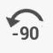 | Rotation -90 |
 | Rotation de la tête de la machine |
 | MDI |
Épaisseur
L’opérateur peut définir l’épaisseur de la dalle à couper.
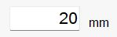 | Épaisseur manuelle |
 | Épaisseur avec la machine |
Exécution de l’usinage
L’opérateur peut régler les deux groupes de coupes en modifiant leurs paramètres respectifs.
Une fois le résultat souhaité obtenu, appuyer sur le bouton « Démarrer cycle » pour exécuter l’usinage.
Premier groupe de coupes
Dans le premier groupe de coupes, un ou plusieurs groupes de coupes sont définis en modifiant les paramètres Largeur, Nombre et Position des coupes, ainsi que la rotation de l’axe C.
Dans l’usinage suivant, des coupes parallèles à la position actuelle de la machine ont été définies.

Deuxième groupe de coupes
Comme pour le premier groupe de coupes, les paramètres du deuxième groupe peuvent être modifiés afin d’obtenir le résultat recherché.
Dans cet usinage, la direction des coupes a été modifiée afin d’effectuer certaines coupes orthogonales à celles du premier groupe.
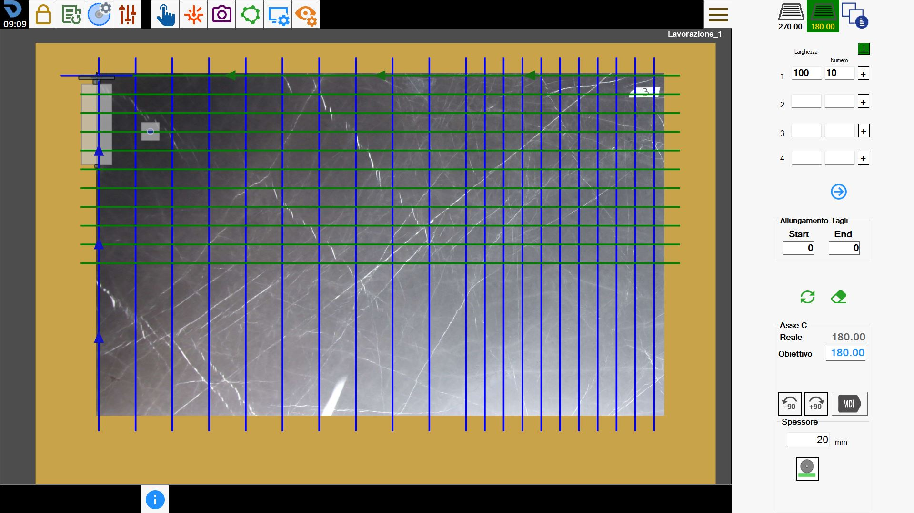
Optimisation et gestion des coupes
Dans cette section, il est possible de modifier l’ordre d’exécution des coupes et de choisir si une coupe doit être exécutée ou non.

IsoCam est le logiciel d’exécution de profilages avec le disque ; il permet de dessiner ou d’importer des formes, de définir le profil et d’appliquer différents modes d’usinage.
La gestion de la programmation du travail est divisée en plusieurs phases décrites dans les paragraphes suivants.
À l’ouverture du programme Isocam, si aucun usinage n’a été créé précédemment, l’opérateur peut en créer un nouveau à partir de la première étape d’usinage.
Si, au contraire, un usinage a déjà été créé, il est automatiquement chargé et l’opérateur accède directement à la dernière étape de l’usinage :

Éléments communs aux différentes étapes
L’interface utilisateur est composée de plusieurs zones.
Menu : outils rapides.
Barre supérieure : fonctions spécifiques de la page active.
Partie centrale : contient le dessin ou la zone active selon la page.
Barre latérale : fenêtre contenant les paramètres à modifier.
Barre inférieure : boutons généralement valables dans plusieurs zones du logiciel.
Les éléments suivants restent toujours visibles, quelle que soit la phase actuelle du processus.
Menu
La barre de menus est située en haut, au-dessus de tous les autres éléments de cette interface.
Affichage | Plusieurs paramètres relatifs à la visibilité des pièces présentes dans la zone de travail sont mis à la disposition de l’opérateur. |
Options | Permet de modifier les paramètres relatifs aux couleurs. |
Langue | ISOCAM est actuellement disponible dans les langues suivantes :
|
Barre latérale droite
 | Paramètres |
 | Infos |
 | Gestion des étapes |
Fermer |
Paramètres
Ce panneau permet de passer au mode Avancé de IsoCam, de revenir à la version de base et de modifier les valeurs du Pas de grille en X et Y.
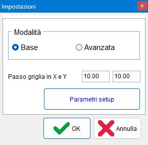
Barre inférieure
 | Nouvel usinage |
 | Ouvrir un usinage |
 | Enregistrer l’usinage |
Modifier l’usinage |
Dessin de la section (étape 1 sur 4)
La première phase de la programmation consiste à dessiner la section à usiner. La fenêtre propose les commandes typiques d’un logiciel de CAO : tracé de ligne, tracé d’arc, accrochage, déplacement, etc.
Le principe du logiciel consiste à créer rapidement la section sous forme d’esquisse, puis à la modifier entité par entité à l’aide des commandes prévues. Il reste toujours possible d’importer des dessins .dxf générés par des logiciels de CAO externes.

Barre supérieure

 | Commande de tracé de ligne |
 | Commande de tracé d’arc |
 | Déplacer les segments sélectionnés |
Figure en miroir | |
 | Raccorder |
 | Inverser la sélection active |
 | Supprimer les segments sélectionnés |
Barre latérale droite
Propriétés de la ligne
Lorsqu’une ligne est sélectionnée dans la zone de travail, la colonne latérale droite est mise à jour pour afficher les caractéristiques de l’entité sélectionnée, que l’utilisateur peut modifier :
Longueur | Indique la distance linéaire entre les deux extrémités de la ligne sélectionnée, calculée à partir des coordonnées dans l’espace de travail. |
Angle | Indique l’orientation de la ligne par rapport à l’axe horizontal du système de référence. |
Δx | Indique la variation de la coordonnée X entre le point initial et le point final d’une ligne ou d’une entité, c’est-à-dire la distance horizontale parcourue par rapport à l’axe X du système de référence. |
Δy | Indique la variation de la coordonnée Y entre le point initial et le point final d’une ligne ou d’une entité, c’est-à-dire la distance verticale parcourue par rapport à l’axe Y du système de référence. |
 | Allonger/Raccourcir la ligne sélectionnée |
 | Arrondir l’angle |
Mettre à l’échelle les segments connectés | Permet d’appliquer une mise à l’échelle proportionnelle à toutes les entités directement ou indirectement reliées à la ligne sélectionnée. |
Propriétés de l’arc
Lorsqu’un arc est sélectionné dans la zone de travail, la colonne latérale droite est mise à jour pour afficher les caractéristiques de l’entité sélectionnée, que l’utilisateur peut modifier.
L’arc peut être défini de différentes manières : par points, par centre, rayon et arc, etc.
Les différentes caractéristiques sont affichées dans la fenêtre qui apparaît à droite.
La modification de certaines caractéristiques peut être effectuée de différentes manières, par exemple en modifiant le rayon ou le point initial/final ; le paramètre « Centre fixe » permet de déterminer le mode de modification.
Rayon | Indique la distance constante entre le centre d’une courbe circulaire ou d’un arc et n’importe quel point de sa circonférence. |
Angle initial/final | Angle du point initial ou final par rapport au centre. |
Tangente Préc. / Suiv. | Modifie l’angle initial ou final de sorte que l’arc soit tangent à l’entité précédente ou suivante. |
Centre fixe | Permet de déterminer les conséquences d’une modification (rayon ou angle). |
Déplacer / Déplacer la sélection
Lorsque la commande « déplacer » est activée, la fenêtre contenant les paramètres de déplacement apparaît. Le déplacement peut être effectué directement en cliquant dans la zone de dessin (y compris avec les accrochages actifs) ou en réglant les paramètres.
Le déplacement doit être confirmé avec le bouton « OK ».
 | Sélecteur de position |
 | Translation |
Déplacer la copie | Lorsqu’elle est activée, cette fonction crée une copie de l’entité sélectionnée et applique le déplacement uniquement à cette copie, en laissant l’entité d’origine inchangée. |
Miroir
Après avoir activé la commande, définir le centre de symétrie en cliquant dans la zone de travail ou en saisissant les cotes, sélectionner la direction du miroir puis appuyer sur le bouton « OK » pour confirmer.
Centre de symétrie | Permet de modifier les coordonnées du centre de symétrie utilisé pour le retournement horizontal ou vertical de l’entité sélectionnée. |
Coordonnées à inverser | Indique si le retournement doit être effectué horizontalement, verticalement ou dans les deux directions. |
Créer une copie miroir | Si cette option est activée, l’opération de mise en miroir crée une copie symétrique de l’entité sélectionnée tout en conservant l’original intact. |
Raccorder
Un premier message, affiché dans la colonne de droite, permet à l’opérateur de définir le rayon de raccordement et de confirmer la sélection.

Un deuxième message informe l’opérateur qu’il est désormais possible d’insérer des raccordements entre deux lignes, opération disponible jusqu’à la désactivation de la fonction.
Voici un exemple d’application de raccordements sur deux lignes adjacentes et sur une ligne adjacente à un arc :

Après l’application des raccordements :

Barre inférieure
 | Importer un fichier DXF |
 | Exporter un fichier DXF |
 | Annuler la modification |
 | Accrochage début/fin |
 | Commande Ortho |
 | Commande Segments connectés |
 | Grille de dessin |
 | Annuler le zoom |
 | Sélectionner une zone pour le zoom |
Réinitialiser le zoom |
Sélection du profil (étape 2 sur 4)
La section dessinée précédemment doit être appliquée à un profil approprié.
Le profil peut être linéaire ou en arc, dans le plan X/Y ou également vertical ; selon la sélection, certains modes de travail sont ensuite activés ou désactivés. Ainsi, par exemple, un profil en arc dans le plan XY ne peut être usiné qu’avec le disque vertical, et inversement pour un profil en arc dans le plan XZ ou YZ.
Le type de profil est sélectionné à l’aide des boutons situés à gauche ; les paramètres permettant de décrire géométriquement le profil sont affichés en haut au centre, tandis que l’aperçu du résultat est affiché en bas au centre.

Partie centrale
Profil linéaire | Définir la direction et la longueur. |
Profil en arc | Définir : la direction, le plan de travail, la concavité et les caractéristiques géométriques. |
Profil circulaire | Il est usiné uniquement à l’extérieur avec le disque horizontal. |
Paramètres du profil linéaire

Exécution du profil | Deux modes sont disponibles : « Le long de X » et « Le long de Y ». |
Longueur de la ligne (L) | Longueur horizontale de la base du segment incliné, mesurée entre le point de départ et le point final projeté horizontalement. |
Delta Z du point final (H) | Hauteur du segment incliné, c’est-à-dire la différence de cote entre le début et la fin du segment. |
Paramètres du profil en arc
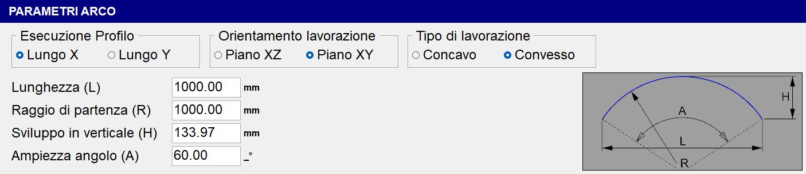
Exécution du profil | Choix entre « Le long de X » ou « Le long de Y ». |
Orientation de l’usinage | Choix entre « Plan XZ » ou « Plan XY ». |
Type d’usinage | Choix entre « Concave » ou « Convexe ». |
Longueur (L) | Distance horizontale entre les deux extrémités de l’arc, c’est-à-dire la corde reliant le début et la fin de l’arc. |
Rayon initial (R) | Distance entre le centre de l’arc et un point de l’arc. Détermine la courbure globale de l’arc. |
Développement vertical (H) | Hauteur maximale de l’arc par rapport à la corde L ; représente la distance verticale entre le point le plus haut de l’arc et la corde. |
Amplitude de l’angle (A) | Angle au centre sous-tendu par l’arc, exprimé en degrés. |
La modification de l’une des valeurs suivantes : « Longueur », « Rayon initial », « Développement vertical » ou « Amplitude de l’angle » entraîne le recalcul automatique des paramètres restants.
Paramètres du profil circulaire

Rayon initial (R) | Détermine le rayon à partir du point de départ. |
Carter | Cette option indique si, pendant l’usinage, l’axe C tourne (carter actif) ou reste immobile avec C=0_ (carter absent). |
Barre inférieure
 | Vue du plateau |
 | Éclairages supplémentaires |
 | Gestion des vues par défaut |
Paramètres d’usinage (étape 3 sur 4)
La page est divisée en cadres contenant différents types de données à définir pour l’usinage

Paramètres outil
L’opérateur peut définir les paramètres de l’outil :

S’il s’agit d’un nouveau projet, les données sont chargées automatiquement en fonction de l’outil physiquement installé ; s’il s’agit d’un usinage précédemment enregistré, les données de l’outil correspondent à celles déjà enregistrées dans le programme précédent.
 | Nom de l’outil |
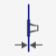 | Épaisseur |
 | Diamètre |
 | CRF (Centre de rotation de la bride) |
 | Cote de sécurité |
 | RPM (Tours par minute) |
Orientation de l’usinage

Profil linéaire
Pour les profils linéaires, il est possible de choisir d’effectuer l’usinage avec le disque vertical ou avec le disque horizontal (de face ou depuis la gauche).
Orientation verticale | Orientation horizontale |
 |  |
Profil en arc
Pour les profils courbes, l’orientation est imposée par le type de profil :
Type d’usinage | Orientation verticale | Orientation horizontale |
Concave |  |  |
Convexe |  |  |
Type d’usinage

L’usinage peut être effectué selon deux modes :
 | Mode par coupes |
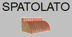 | Mode lissage |
Configuration par coupes
Des coupes parallèles suivant le profil sélectionné sont effectuées à une distance entre les coupes définie par un paramètre.
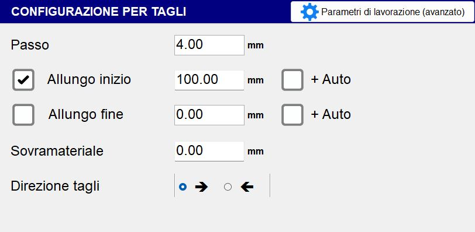
Pas | Indique la distance entre la position d’une coupe et celle de la coupe adjacente. Si cette distance est supérieure à l’épaisseur du disque, du matériau reste entre les passes. |
Extension début / fin | Permet de prolonger une coupe dans sa partie initiale / finale de la valeur définie. |
Plus Auto | L’activation de cette option entraîne une augmentation automatique de la valeur d’extension, sur la base d’une valeur définie par le système. |
Surépaisseur | Épaisseur de matériau à laisser au-dessus de la section finale souhaitée. |
Direction des coupes | La coupe peut être effectuée de droite à gauche ou de gauche à droite, selon la configuration sélectionnée. |
Configuration Lissage
Le mouvement est transversal à la direction du profil ; il est utilisé pour la finition de surface de la pièce.

Pas de lissage | Indique la distance entre un mouvement transversal et le suivant le long de la direction du profil. |
|---|
Vitesse et mode de coupe
Selon les sélections précédentes, différents menus apparaissent pour sélectionner les paramètres nécessaires à la définition de l’usinage.

Si le type d’usinage sélectionné est la Configuration par coupes, deux types de paramètres d’usinage sont disponibles :
 | Mode Marbre |
 | Mode Granit |
Mode Marbre
Paramètres généraux :
Coupes dans les deux sens (finition) | Cette option permet de régler une vitesse de retour différente de la vitesse d’aller. |
Ne jamais relever (finition) |
Paramètres de vitesse :
Aller | Vitesse d’exécution de la passe à l’aller. |
Retour | Vitesse d’exécution de la passe au retour. |
Pénétration | Vitesse d’exécution de la pénétration de la passe. |
Minimale | En définissant une valeur différente de zéro, la vitesse de coupe dépend de la profondeur de la coupe : le mouvement s’effectue à la vitesse d’aller pour les coupes de profondeur nulle et à la vitesse minimale lorsque la coupe atteint la profondeur maximale pour la section sélectionnée. |
Mode Granit

Paramètres généraux :
Enlèvement de matière en coupe | Quantité de matériau enlevée lors de la passe d’aller. |
Enlèvement de matière au retour | Quantité de matériau enlevée lors de la passe de retour. |
Si le type d’usinage sélectionné est la Configuration Lissage, un seul paramètre d’usinage est disponible :
Vitesse - Usinage | Définit la vitesse à laquelle l’usinage de type lissage est exécuté. |
|---|
Paramètres d’usinage (avancés)
 | Paramètres d’usinage (avancés) |
Cet écran permet de vérifier et de modifier différents paramètres, dont beaucoup ont été définis aux étapes 2 et 3.

La première opération consiste à sélectionner le type de profil à utiliser :
 | Linéaire |
En arc |
Puis les paramètres suivants :
Usinage | Peut être effectué par coupes ou par lissage. |
Orientation de l’usinage | L’usinage peut être effectué à la verticale ou à l’horizontale. |
Exécution du profil le long de | Le long de X ou Y. |
Données d’usinage
Pour le profil linéaire, les paramètres suivants peuvent être définis :
Épaisseur du matériau | Définit l’épaisseur du matériau (en mm) |
Inclinaison du profil (mm) | Permet de définir l’inclinaison du profil en indiquant la différence de hauteur entre le point final et le point initial. |
Pour le profil en arc, les paramètres définis aux étapes précédentes sont disponibles.
Les deux profils ont également en commun les données d’usinage suivantes :
Pas | Fixe en Y : maintient une distance fixe entre les coupes, indépendamment de la section sous-jacente |
Direction des coupes | Choix entre « Y_ » ou « Y- ». |
Usinage complet du profil | Permet de choisir d’effectuer ou non l’usinage complet du profil. |
Forcer les coupes aux angles | Ajoute des coupes aux points de changement de pente. |
Supprimer les chevauchements | Si cette option est activée et que la valeur « Pas » est supérieure à la valeur « Épaisseur », les coupes qui se chevauchent sont supprimées. |
Pas optimisé (teinture) % Recouv. | Si la valeur « Pas » est inférieure à la valeur « Épaisseur », le pas est optimisé sur les lignes horizontales. |
Exécuter une coupe au début | Permet de choisir d’effectuer ou non une coupe au début du profil. La zone située à côté permet de définir la profondeur de cette coupe. |
Exécuter une coupe à la fin | Permet de choisir d’effectuer ou non une coupe à la fin du profil. La zone située à côté permet de définir la profondeur de cette coupe. |
Données de l’outil
Cette section présente certaines données précédemment définies ainsi que d’autres paramètres spécifiques à l’outil.
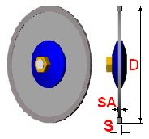
Description de l’outil | Brève description de l’outil |
 | Magasin d’outils |
N_ Position | Indique le numéro de position dans le magasin de l’outil sélectionné. |
N_ Correcteur | Indique le numéro identifiant le nom de l’outil sélectionné. |
Épaisseur de l’âme du disque (SA) | Épaisseur du corps porteur central du disque. |
Forme de la dent | L’opérateur peut choisir parmi trois formes de dent :
|
 | Choix du matériau
|
Priorité | Il est possible de définir une valeur de priorité (strictement positive). |
Profondeur | Indique la profondeur de coupe de l’outil. |
Usinage (étape 4 sur 4)
En fonction des sélections précédentes, un aperçu des coupes calculées est affiché. La page est divisée en plusieurs zones contenant les commandes permettant de gérer les modifications.
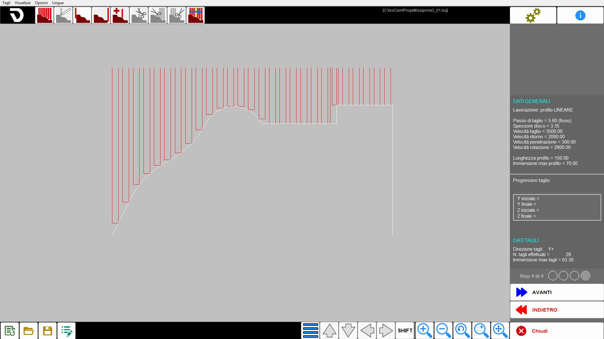
Après avoir vérifié les coupes ou effectué les modifications souhaitées, appuyer sur le bouton « SUIVANT » pour ouvrir la page permettant de générer le programme de coupe.
Menu
À la quatrième étape, une entrée supplémentaire devient visible dans le menu supérieur :
Coupes | Ce menu propose à l’opérateur plusieurs réglages rapides pour les coupes générées. |
|---|
Barre supérieure
 | Génération des coupes |
 | Modifier la position de la coupe |
 | Ajouter une coupe de tête pour séparer les pièces |
Ajouter une coupe de fin pour séparer les pièces | |
 | Ajouter une coupe à la position de la souris (Ins) |
 | Supprimer la coupe sélectionnée |
 | Supprimer les coupes précédant la coupe sélectionnée |
 | Supprimer les coupes suivant la coupe sélectionnée |
 | Simulation des coupes |
Partie centrale
Barre latérale droite
À la quatrième étape, cette barre contient les informations suivantes :
 | Numéro progressif de la coupe |
 | Données générales |
 | Données des coupes |
Barre inférieure
 | Options de coupe |
  | Déplacer/allonger les coupes |
Shift |
Création du programme
Une fois la préparation terminée à la quatrième étape, il est possible d’accéder à la phase finale, qui comprend l’affichage du résultat obtenu et la génération du fichier ISO.
La partie centrale affiche en 3D l’usinage généré en tenant compte du mode d’usinage. Cliquer dans la zone permet de faire pivoter la vue et de gérer le zoom.

Procédure de base
Étape 1
Pour commencer, appuyer sur le bouton « Nouvel usinage ». S’assurer que la fonction « Segments connectés » est active, puis activer la commande « ligne ». Effectuer ensuite une série de clics dans la zone de travail pour dessiner la section souhaitée. Une fois le dessin terminé, cliquer de nouveau sur la commande « ligne » pour la désactiver. Sélectionner ensuite chaque entité individuellement afin de vérifier ses paramètres et, si nécessaire, de les modifier.
Étape 2
À cette étape, l’opérateur peut définir plusieurs paramètres généraux de base liés au type d’usinage recherché.
Étape 3
Il est alors possible de définir les paramètres relatifs à l’outil, au type, à l’orientation et aux paramètres de l’usinage sélectionné.
Le panneau « Paramètres d’usinage (avancés) » permet également d’obtenir une vue d’ensemble de tous les paramètres définis jusqu’à présent.
Étape 4
Une liste de coupes est automatiquement générée pour l’usinage actuel. Il est possible d’insérer, de modifier et de supprimer des coupes selon les besoins opérationnels.
Génération ISO
La dernière étape de l’usinage permet à l’opérateur de créer un fichier ISO à partir de l’usinage obtenu ou de recommencer la procédure.
Le programme Polissage permet d’effectuer le polissage selon différents types d’usinage. Il est également possible de choisir le mode d’acquisition de la géométrie de la dalle : soit en relevant les points qui déterminent les sommets de la surface (de trois à six au maximum), soit en utilisant une surface régulière (rectangle) en saisissant la cote zéro et la valeur des deux côtés.
/1.1-20250731-080428.png)
Mode d’usinage
Pour utiliser cet usinage, il faut d’abord choisir l’un des deux modes disponibles en sélectionnant le bouton correspondant :
Les modes «
Sélection rectangle
» et «
Sélection libre des points
» sont mutuellement exclusifs : l’activation de l’un désactive automatiquement l’autre.
/1.1-20250303-082732.png) | Passer au mode Sélection libre des points |
/1.2-20250303-082732.png) | Passer au mode Sélection rectangulaire |
Mode entrée/sortie
Les boutons illustrés permettent de modifier l’entrée et la sortie de l’outil entre les modes progressif et standard.
Les modes «
Progressif
» et «
Standard
» sont mutuellement exclusifs : l’activation de l’un désactive automatiquement l’autre.
/2.1_b-20250731-113844.png) | Passage au mode progressif |
|---|---|
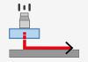 | Passage au mode standard |
Mode Sélection libre des points
Ce mode s’affiche comme suit :
/c-20250731-120333.png)
Paramètres
Position des points
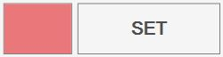 /3.1.1.2-20250731-111843.png) | Set (Définir) |
/3.1.1.3_b-20250731-112553.png) | Effacer |
Types d’usinage
/3.1.2.1_b-20250731-114156.png) | Contour |
/3.1.2.2_b-20250731-114218.png) | Passes horizontales |
/3.1.2.3_b-20250731-114252.png) | Passes verticales |
/3.1.2.5_b-20250731-114340.png) | Répétition globale |
Paramètres d’usinage
Répétitions | Chaque type d’usinage peut être répété un nombre de fois défini dans ce champ. |
Effectuées | Affiche le nombre de répétitions effectuées. |
Pas [mm] | Indique la distance entre une passe et la suivante, pouvant être sélectionnée pour chaque type d’usinage. |
Paramètres de l’outil pour le polissage
/3.2.1_b-20250731-114407.png) | Vitesse d’usinage |
/3.2.2_b-20250731-114433.png) | Vitesse de descente |
/3.2.3_b-20250731-114455.png) | Usure de l’outil |
Exécution en mode Sélection libre des points
Entre deux usinages, la machine effectue les déplacements sans remonter à la cote de sécurité.
L’opérateur définit la position d’un minimum de trois à un maximum de six points disponibles en déplaçant manuellement la machine et en utilisant les commandes d’enregistrement correspondantes. Une fois les points définis, il configure les paramètres d’usinage pour chaque type de polissage souhaité. Les paramètres spécifiques de l’outil à utiliser pour le polissage sont également définis.
À tout moment avant le démarrage du cycle de polissage, l’opérateur peut modifier le mode d’entrée et de sortie de l’outil en sélectionnant l’une des deux options disponibles.
Une fois la configuration terminée, incliner l’axe A de la machine à 90_ et démarrer la rotation du disque. L’opérateur peut alors exécuter les cycles programmés en appuyant sur le bouton « Démarrer cycle ». Pendant l’exécution, l’avancement peut être surveillé dans la colonne « Effectuées », qui indique les cycles terminés pour chaque type de polissage sélectionné.
Mode Sélection rectangulaire
Ce mode s’affiche comme suit :
/d-20250731-120352.png)
Paramètres
Position du rectangle
/4.1.1.2-20250731-115103.png) | Côtés du rectangle |
|---|
Paramètres d’usinage
Se reporter aux paramètres d’usinage du mode Sélection libre des points pour les usinages : Contour, Passes horizontales/verticales et Répétition globale.
En zigzag |
Paramètres de l’outil pour le polissage
Se reporter à Paramètres disque - Sélection libre des points pour les paramètres du disque : Vitesse d’usinage, Vitesse de descente et Usure du disque.
Pas de l’axe Y pour Zigzag |
Exécution en mode Sélection rectangulaire
Entre deux usinages, la machine effectue les déplacements sans remonter à la cote de sécurité.
L’opérateur définit la position du rectangle à polir en déplaçant manuellement la machine et en modifiant les valeurs des coordonnées correspondantes. Une fois le rectangle défini, il configure les paramètres d’usinage pour chaque type de polissage souhaité. Les paramètres spécifiques de l’outil utilisé pour le polissage sont également définis.
À tout moment avant le démarrage du cycle de polissage, l’opérateur peut modifier le mode d’entrée et de sortie de l’outil en sélectionnant l’une des deux options disponibles.
Une fois la configuration terminée, incliner l’axe A de la machine à 90_ et démarrer la rotation du disque. L’opérateur peut alors exécuter les cycles programmés en appuyant sur le bouton « Démarrer cycle ». Pendant l’exécution, l’avancement peut être surveillé dans la colonne « Effectuées », qui indique les cycles terminés pour chaque type de polissage sélectionné.
La page Liste de programmation des fichiers ISO permet d’exécuter plusieurs programmes consécutivement, créés auparavant avec des programmes CAD-CAM, pour les machines à deux zones de travail, les machines Twin ou les programmes comportant plusieurs usinages créés alors que la machine est déjà en fonctionnement.

Barre supérieure
La barre supérieure affiche des informations permettant de surveiller l’avancement de la liste

  | Activation/Désactivation de la Liste des programmes ISO |
  | État d’exécution de la liste |
   | Barre de progression de la liste |
Barre de progression de la liste
Cette barre de progression fournit des informations sur l’état d’exécution du programme ISO en cours, tout en donnant un aperçu général du programme suivant dans la liste et de celui qui a déjà terminé la phase d’usinage et est passé au déchargement.

Dans l’image précédente, aucun programme en phase de déchargement n’est encore visible, car l’exécution de la liste n’a pas été lancée et aucune pièce n’a encore été traitée. À l’inverse, s’il n’y a qu’un seul fichier ISO dans la liste ou si l’usinage a été lancé et que tous les autres fichiers ont déjà été exécutés, la section Suivant est vide.
Pendant l’exécution, l’état d’avancement du programme est affiché en temps réel, comme illustré ci-dessous.

Menu latéral
Sur le côté droit du panneau des ventouses se trouvent plusieurs boutons relatifs à la gestion des différents fichiers de la liste des programmes.
 | Exécuter le programme suivant |
 | Déplacer l’élément sélectionné vers le haut |
 | Déplacer l’élément sélectionné vers le bas |
 | Supprimer l’élément sélectionné |
 | Panneau ventouses |
Panneau Ventouses
Il est possible d’utiliser les ventouses en mode manuel pour déplacer des pièces d’une zone de travail à une autre.

Boutons des ventouses
 | Activation / désactivation des ventouses |
 | VENTOUSES : MONTER - Stationnement des ventouses |
 | VENTOUSES : DESCENDRE - Préparer les ventouses |
 | SOULEVER LA PIÈCE : RELÂCHER - Déchargement de la pièce |
 | SOULEVER LA PIÈCE : DÉMARRER - Levage de la pièce |
  | SOUFFLAGE - Commande de soufflage |
  | VIDE - Commande de la pompe à vide |
Conditions de sécurité
Faire particulièrement attention aux ventouses actives pendant le levage et s’assurer que les zones utilisées sont suffisantes pour soulever la pièce à manutentionner. Toujours utiliser la plus grande surface de vide disponible pour saisir la pièce et vérifier que le matériau ne présente aucun défaut ni aucune rupture susceptible de créer des dangers ou des problèmes de fonctionnement de la machine.
Une fois la pompe à vide activée, sa désactivation n’est autorisée qu’au moyen des fonctions automatiques prévues à cet effet. L’appui sur le bouton de réinitialisation ou sur le bouton d’arrêt d’urgence n’a aucun effet sur la pompe à vide, qui continue de fonctionner. L’arrêt de la pompe peut être forcé à l’aide du bouton prévu à cet effet dans la page « Commandes supplémentaires ».
Dans les procédures automatiques, avant de soulever la pièce, l’état du vide est contrôlé par un capteur dédié : si une valeur de vide suffisante n’est pas détectée, l’alarme « manque de vide » apparaît. La pompe reste active jusqu’à ce que le vacuostat détecte une valeur correcte, sauf si elle est désactivée depuis la page « Commandes supplémentaires ».
Une coupure de l’alimentation de la pompe à vide entraîne une perte rapide du vide et, par conséquent, la chute du matériau soulevé par les ventouses.
Barre inférieure
Dans la partie inférieure de la barre sont affichées plusieurs fonctions relatives à l’exécution de la liste des programmes ISO ainsi que la surveillance de l’outil et de la dalle.

Gestion de l’exécution de la liste
Dans la partie inférieure se trouvent également les deux boutons relatifs aux modes d’exécution des programmes :
  | Manuel / automatique |
  | Unique / suivant automatique |
Surveillance de la dalle et de l’outil
Au centre et à droite de la barre inférieure, l’opérateur peut configurer des contrôles périodiques du diamètre de l’outil en définissant des contrôles à intervalles déterminés selon le nombre de cycles effectués.

 | Nombre de cycles entre les palpages du disque |
|---|---|
 | Nombre de cycles avant le prochain palpage |
 | Diamètre de l’outil |
 | Épaisseur de la dalle |
Exécution de la Liste des programmes ISO
Si la Liste des programmes ISO est désactivée, l’interrupteur en haut à droite du panneau apparaît éteint ; il est alors possible d’activer la fonction simplement en cliquant sur ce bouton.
La liste des programmes ISO s’allonge automatiquement à mesure que des ISO sont générés dans Parametrix ; l’opérateur peut néanmoins repositionner les éléments dans la liste ou les en supprimer selon ses besoins.
Avant de lancer l’exécution de la liste, l’opérateur peut définir le nombre de cycles qui seront effectués entre les opérations de palpage de l’outil.
Le nombre de cycles restant avant le prochain palpage est alors mis à jour et affiché.
L’opérateur lance l’exécution de la liste des programmes en appuyant sur le bouton « Démarrer cycle ». Les programmes sont ainsi exécutés en séquence, avec affichage simultané du programme en cours, de celui qui sera exécuté ensuite et de celui déjà terminé.
Si le mode d’exécution des programmes est réglé sur Manuel et Unique, l’exécution de la liste s’interrompt à la fin du programme en cours, juste après la préparation du programme suivant à exécuter.
Dans ce cas, l’opérateur peut appuyer sur le bouton Suivant lorsqu’il le juge opportun et poursuivre l’exécution en appuyant de nouveau sur le bouton « Démarrer cycle »
Le système a été conçu pour faciliter la programmation des coupes automatiques par l’opérateur. Le logiciel permet de :
Définir la position de la dalle dans la zone de travail de la machine et créer le périmètre du matériau à usiner
Créer des pièces à partir de figures paramétriques
Importer des figures réalisées avec d’autres logiciels de CAO
Générer une liste de pièces à usiner
Rechercher la meilleure position des pièces sur la dalle
Configurer des fonctions de coupe spéciales
Programmer l’ordre de coupe et créer les mouvements de la machine
Surveiller à l’écran l’exécution des coupes
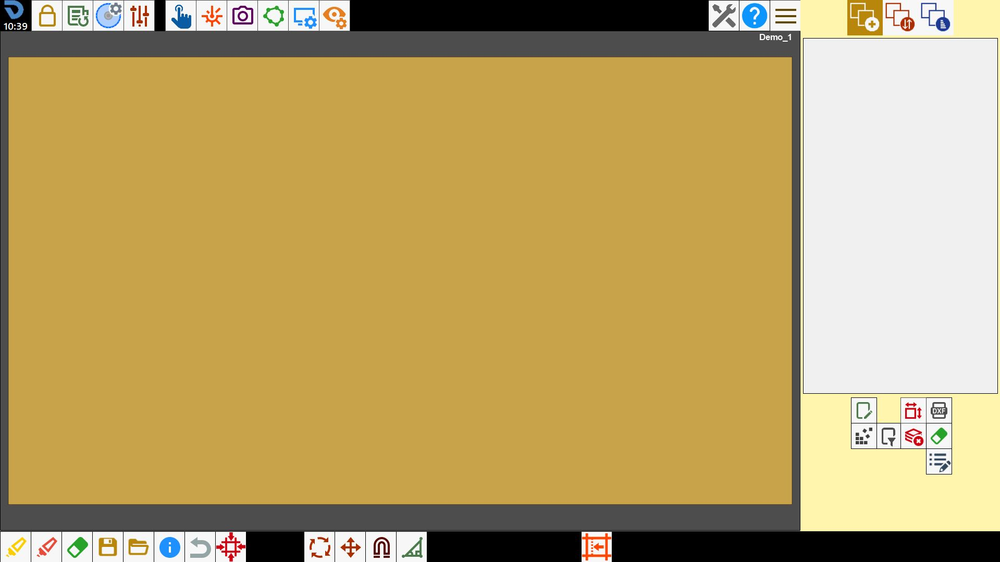
Zone de travail et liste des pièces
Une représentation typique de la zone de travail de Parametrix est illustrée ci-dessous, avec la liste des pièces importées déjà renseignée et une image de la dalle acquise.

Liste des pièces insérées
Lorsqu’une pièce est créée, le programme l’ajoute à la liste des pièces ; depuis cette liste, il est possible de l’insérer dans la zone de travail, de modifier certaines caractéristiques de la pièce et de contrôler le nombre de pièces restant à usiner.

Positionnement des pièces
Parametrix permet de positionner des pièces dans la zone de travail de la machine afin de créer le fichier de coupe.
Une fois la dalle acquise, le périmètre créé et les pièces de l’usinage créées, les pièces doivent être importées à l’intérieur de la dalle ; le bouton situé dans le tableau des pièces permet de placer la pièce dans la zone de travail. Il est possible de travailler avec 1 ou plusieurs pièces simultanément.
 | Si les pièces ne se trouvent pas entièrement à l’intérieur de la dalle, un symbole d’attention\danger apparaît dans l’angle supérieur gauche. |
|---|
Barre supérieure
Dans la partie supérieure de l’écran, au centre et à gauche, les boutons suivants sont visibles, précédés du logo et de l’heure affichée :

La barre supérieure des commandes est complétée par certains boutons qui seront décrits plus loin :
 | Paramètres utilisateur |
 | Nouvel usinage |
 | Paramètres outil |
 | Panneau des paramètres d’usinage de la dalle |
 | Accès aux commandes manuelles |
 | Gestion du laser |
 | Ajouter une photo au plan de travail |
 | Périmètre de la dalle |
 | Gestion de l’affichage du plan de travail |
 | Affichage des entités de travail |
Section latérale
Les boutons situés en haut à droite permettent à l’opérateur de changer d’écran dans Parametrix.

Chaque écran concerne un aspect particulier de l’usinage d’une dalle.
 | Positionnement des pièces
|
 | Gestion de l’ordre de coupe des pièces |
 | Optimisation et gestion des coupes
|
Les boutons suivants se trouvent en bas à droite ; leurs fonctions seront décrites plus loin.
 | Modifier la pièce |
Activer/désactiver les pièces standard | |
 | Création de pièce |
 | Nesting |
 | Trier ou filtrer les pièces |
Effacer la liste des pièces | |
Supprimer la pièce | |
 | Modifier les propriétés supplémentaires de la pièce |
Barre inférieure
À l’ouverture de la fonction « Parametrix », la barre inférieure est modifiée comme indiqué ci-dessous :

Cette barre est complétée par les boutons suivants :
Sélection multiple | |
Tout sélectionner | |
 | Retirer la pièce |
 | Enregistrement |
Charger | |
 | Panneau d’informations |
 | Annuler la modification |
 | Machine sur la coupe |
 | Rotation de la pièce |
 | Déplacer les pièces |
 | Magnétiser les pièces |
 | Coupe inclinée |
 | Modifier la pièce standard |
Après avoir appuyé sur le bouton, plusieurs fenêtres peuvent être affichées.

Fenêtres
4 fenêtres différentes sont disponibles ; elles sont décrites individuellement ci-dessous.
Valeurs utilisateur | Fenêtre dédiée à la modification de certains réglages liés aux usinages. |
Statistiques | L’opérateur peut afficher les statistiques des usinages effectués. |
Noms des calques | Fenêtre dédiée aux paramètres d’importation des fichiers DXF dans Parametrix. |
Ventouses | Paramètres relatifs à la vitesse de déplacement des ventouses. |
Barre inférieure
 | Fermer Parametrix |
Redémarrer Parametrix | |
 | Clavier |
Connexion de l’appareil photo | |
 | Assistance à distance |
Paramètres techniques | |
 | Saisie du mot de passe |
 | Accès au guide Web |
Ne pas enregistrer les modifications |
Importation de maintenance depuis un fichier
Dans la page des paramètres techniques, puis dans la section « File Path 2 », accéder à la section relative à la maintenance pour afficher l’écran suivant :
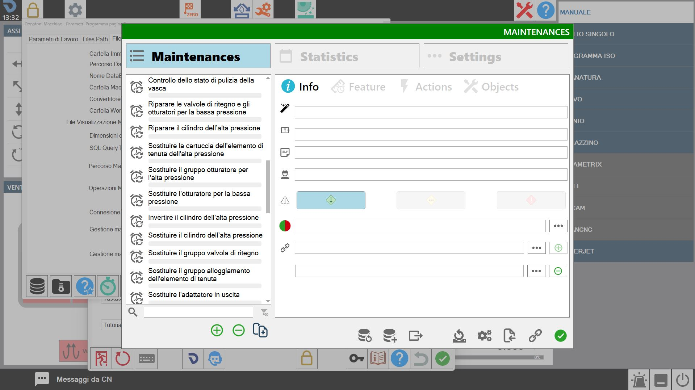
Le bouton suivant permet d’importer des fichiers .mnt pour effectuer la maintenance.
 | Importer depuis un fichier |
Dans cette fenêtre, l’opérateur peut modifier certains paramètres liés à l’usinage.

Section de gauche
Retrait des coupes internes | Distance minimale d’approche du disque par rapport à la pièce pour les coupes internes. |
Distance d’aimantation | Distance entre deux pièces avant l’activation de l’aimant. |
Incrément dans le plan de travail | Profondeur de pénétration de l’outil dans le plan de travail. |
Incrément dans le plan de travail - incliné | Profondeur de pénétration de l’outil dans le plan de travail. Uniquement pour le mode isoparamétrique. |
Offset de déplacement de la dalle | Cote supplémentaire pour la fonction de déplacement. |
Rayon maximal du foret carottier | Pour l’importation DXF, rayon maximal permettant à un cercle d’être importé comme trou. |
Chevauchement de la rainure d’égouttage | Pourcentage de chevauchement de la rainure d’égouttage, de 99% à 0%. |
Vitesse de la rainure d’égouttage | Pourcentage de la vitesse de la rainure d’égouttage par rapport à la vitesse des coupes normales. |
Pénétration des trous | Définit la pénétration de tous les trous ; régler sur 0 pour un trou débouchant. |
Pénétration des coupes internes | Définit la pénétration de toutes les coupes internes ; régler sur 0 pour une coupe traversante. |
Distance des trous automatiques | Indique la distance entre les trous lors de l’insertion de plusieurs trous. |
Nombre de trous | Nombre de trous à utiliser pour les trous d’angle. |
Opérations
Opération active | Permet de créer une opération personnalisée sur les coupes. |
 | Opérations personnalisées |
Section appareil photo
Utiliser l’appareil photo | Active l’utilisation de l’appareil photo ; sinon l’opérateur choisit l’image dans un fichier. |
Section commandes machine
 | Activer/désactiver le contrôle de cote |
 | Acquisition de la cote du plan de travail |
Référencement des axes |
Section nom du fichier
Le nom du fichier peut être défini dans la zone de texte en bas à gauche selon l’un des modes suivants.
Incrémental | Incrémente le nom du fichier ISO, 100, 101, 102… |
Saisie utilisateur | L’utilisateur peut saisir le nom du fichier. |
Fixe | Nom de fichier ISO fixe ; saisir le nom souhaité dans le champ adjacent. |
Fixe _ Incrémental | Nom du fichier ISO au format incrémental fixe, par exemple File_101. |
Date heure | Nom du fichier ISO au format date/heure, par exemple 20191206_080124. |
Nom du fichier | Le fichier ISO prend le nom du fichier (DXF ou CSV) importé. |
Nom du fichier _ Incrémental | Le fichier ISO prend le nom du fichier (DXF ou CSV) importé, avec l’ajout d’une valeur incrémentale. |
Section couleur du nom
Noir | Texte de la pièce en noir. |
Jaune | Texte de la pièce en jaune. |
Fuchsia | Texte de la pièce en fuchsia. |
Auto | Détermine automatiquement la meilleure couleur pour le nom de la pièce |
Section couleur Book Match
Arrière-plan | Gère la couleur de l’arrière-plan de la fonction Book Match |
Nom | Gère la couleur du nom dans la fonction Book Match |
Périmètre | Gère la couleur du périmètre dans la fonction Book Match |
Autres boutons
Palpage de l’outil au début du programme | Si cette option est activée, permet d’insérer un cycle de palpage au début du programme de coupe lors du passage à l’écran de gestion des coupes. |
| Opérations personnalisées |
Tutoriel | Permet d’accéder aux tutoriels vidéo de Parametrix. |
 | Activer/Désactiver PGM |
Mode décharger tout | Ce paramètre peut prendre deux valeurs : |
Tutoriel
Cette fenêtre contient des tutoriels montrant comment utiliser certaines fonctions de Parametrix.
Pour voir la vidéo souhaitée, appuyer sur la ligne correspondante.

Cette fenêtre permet d’afficher les statistiques des usinages exécutés par la machine.
Les statistiques comprennent également les usinages de type coupe unique, pochage, surfaçage et exécution ISO.


Statistiques à l’écran
Le bouton en haut à gauche permet d’accéder à la fenêtre des statistiques à l’écran.
 | Statistiques à l’écran |
Une fenêtre s’ouvre et affiche certaines informations relatives aux usinages effectués sur la machine.
Chaque entrée de la liste correspond aux données d’un seul usinage.
En bas de la page, un récapitulatif des informations importantes de tous les usinages affichés est présenté.
Boutons
 | Statistiques quotidiennes |
Statistiques mensuelles | |
 | Statistiques totales |
 | Intervalle de temps réglable |
 | Colonnes à afficher |
 | Enregistrer les statistiques |
 | Afficher les statistiques des dalles |
  | Afficher les statistiques des pièces |
Statistiques pour chaque machine (Option)
Pour la version de Parametrix en mode bureau, il est possible de se connecter à plusieurs machines et d’afficher les statistiques de chacune d’elles.
La section de gauche affiche toutes les machines connectées au dispositif.

Recherche
Cette fonction permet de rechercher des statistiques dans une période choisie.

L’opérateur peut saisir la date de début et la date de fin pour délimiter la période souhaitée.
La précision de la recherche peut être définie à l’aide des boutons.
 | Recherche par jour |
 | Recherche par mois |
Recherche par année |
Pour exporter les statistiques, utiliser le bouton :
| Enregistrer les statistiques |
Minuterie
Cette section permet de gérer les minuteries de la machine.

À l’aide des boutons suivants, l’opérateur peut gérer manuellement une minuterie permettant de suivre le temps écoulé.
 | Démarrer la minuterie |
 | Arrêter la minuterie |
 | Réinitialiser la minuterie |
La section de gauche contient des informations sur le temps d’utilisation de la machine et des outils montés.
Temps total | Indique le temps total de travail de la machine. |
Temps disque | Affiche le temps d’utilisation du disque. |
Graisse
Pour démarrer le graissage automatique de la machine, utiliser le bouton suivant :
 | Démarrer le cycle de graissage |
Parametrix permet d’importer des fichiers au format « .dxf » créés à l’aide de logiciels de CAO externes dédiés.

Boutons
 | Colorer les calques |
 | Dynamic Tags |
La machine peut exécuter des coupes, fraisages et trous à partir de dessins créés avec un logiciel CAD et enregistrés au format « .dxf », avec reconnaissance automatique de certains usinages utiles pour simplifier et accélérer le travail de l’opérateur sur la machine.
Afin que Parametrix puisse interpréter ces informations, certaines conventions doivent être respectées lors de la réalisation du dessin :
Toutes les pièces dessinées doivent être fermées et converties en polylignes formant un polygone.
Si le repère de la pièce doit être inséré pour l’identification, il doit être placé à l’intérieur du polygone.

Réglages Parametrix pour la reconnaissance des layers importés
Pour accéder à la fenêtre dédiée aux réglages de personnalisation relatifs à l’importation des fichiers DXF, appuyer sur le bouton Paramètres utilisateur situé dans la barre supérieure de Parametrix.
Depuis cette fenêtre, accéder à la section dédiée à la gestion des noms des Layers.
Pour chaque type de fonction répertorié, l’utilisateur peut attribuer un nom (correspondant au nom du Layer défini dans le logiciel CAD utilisé) et attribuer certains paramètres relatifs aux valeurs par défaut de certains usinages.
Fonction | Nom Layer |
Coupes inclinées | Incliné |
Dosseret | Dosseret |
Revêtement | Revêtement |
Offset | Offset |
Coupes sous le matériau | Sous |
Rainure d’égouttage | Égouttage |
Fraisage | Fraisage |
Feuillure | Feuillure |
Perçage | Perçage |
Coupe ajoutée | Ajouté |
Trou d’ancrage | Keil |
Chanfrein | Chanfrein |
Bec | Bec |
Désactiver | Désactiver |
Supprimer | Supprimer |
Boutons
Les boutons à gauche de chaque usinage permettent de :
 | Fenêtre d’information |
 | Télécharger exemple |
Mode Coupe inclinée
Pour pouvoir insérer automatiquement une coupe inclinée, certaines conventions doivent être respectées :
Les coupes inclinées ne peuvent être insérées que sur les côtés des pièces ; si la coupe inclinée ne s’applique pas à toute la section, celle-ci peut être divisée en plusieurs parties.
Une coupe inclinée peut être appliquée sur des arcs extérieurs (ex. : table circulaire ou éléments courbes, uniquement pour la coupe extérieure).
Pour les arcs intérieurs (ex. : éléments courbes), la coupe est réalisée en plusieurs passes ; elle est exécutée en inclinant automatiquement le disque afin d’éviter les problèmes de collision avec le matériau.
La procédure pour les utilisateurs de systèmes CAD prévoit la création d’un Layer ayant les propriétés suivantes :
Nom du Layer | Incliné _ (suivi du nombre identifiant les degrés d’inclinaison souhaités). |
Exemple | Incliné45 ou Incliné-45 |
Lorsqu’une valeur négative est saisie, l’inclinaison correspond à une coupe divergente ; si la valeur est positive, la coupe converge vers l’intérieur du polygone.
Mode Relevé
La fonction relevé est un usinage permettant d’obtenir une pièce rectangulaire de longueur égale à la ligne définie comme côté de référence.
Pour l’insertion automatique des coupes afin de créer un relevé, il est nécessaire de créer un Layer nommé « Alzata », puis d’indiquer la hauteur.
Nom du Layer | Alzata _ (suivi de la hauteur du relevé). |
Exemple | Alzata100 |
Cet automatisme de Parametrix crée une nouvelle pièce dont la largeur est égale à la longueur de la ligne identifiant le côté du relevé souhaité, avec les deux côtés destinés à être collés ensemble coupés selon la même inclinaison, prêts pour une finition à onglet.
L’inclinaison associée à ces côtés peut être définie à l’aide du paramètre adjacent.
Degrés | Permet de définir l’inclinaison avec laquelle les côtés inclinés de l’usinage sont importés. |
Mode Revêtement
La fonction revêtement / relevé est un usinage permettant d’obtenir une pièce rectangulaire de longueur égale à la ligne définie comme côté de référence.
De manière analogue, pour l’insertion automatique des coupes afin de créer un revêtement, il est nécessaire de créer un Layer nommé « Rivestimento », puis d’indiquer la hauteur.
Nom du Layer | Rivestimento _ (suivi de la hauteur du revêtement). |
Exemple | Rivestimento150 |
Cet automatisme de Parametrix crée une nouvelle pièce dont la largeur est égale à la longueur de la ligne identifiant le côté du revêtement souhaité, sans coupe inclinée, prête pour une finition à angle droit avec prise de chant.
Mode Offset
La fonction offset est très utile lorsque l’on souhaite laisser davantage de matériau que les dimensions de la pièce finie ; en dessinant des lignes sur les côtés souhaités, les fonctions associées aux côtés indiqués sont automatiquement déplacées dans la direction correcte.
Pour pouvoir insérer automatiquement le surépaisseur souhaité, il est nécessaire de créer un Layer nommé « Offset » et d’insérer toutes les lignes correspondant aux côtés sur lesquels l’effet automatique du réglage est souhaité.
Nom du Layer | Offset _ (suivi du nombre identifiant la valeur d’offset). |
Exemple | Offset3 |
Mode Coupe inférieure
La fonction de coupe inférieure est valable uniquement pour les machines équipées de l’option mécanique permettant d’effectuer une coupe sous la surface visible de la dalle.
Pour pouvoir insérer automatiquement une coupe inférieure, il est nécessaire de créer un Layer nommé « Sotto » et d’insérer une ligne représentant la coupe.
Nom du Layer | Sous |
Exemple | Sous |
La longueur de la coupe obtenue dépend également du diamètre du disque et de l’épaisseur du matériau définis dans Parametrix.
Mode Rainure d’égouttage
La fonction de rainure d’égouttage permet d’insérer une coupe d’une largeur supérieure à l’épaisseur du disque et d’une profondeur inférieure à l’épaisseur du matériau.
Pour pouvoir insérer automatiquement une rainure d’égouttage, il est nécessaire de créer un Layer nommé « Gocciola » et d’insérer une ligne ou un arc représentant le centre de la largeur.
Nom du Layer | Gocciola _ (suivi du nombre identifiant la largeur de la rainure d’égouttage). |
Exemple | Gocciola10 |
De cette manière, la profondeur de la rainure d’égouttage est définie par le paramètre dédié.
Pochage | Profondeur de la coupe associée à la rainure d’égouttage. Cette valeur n’est pas prise en compte si l’utilisateur définit une valeur dans le DXF. |
La profondeur de coupe peut être gérée automatiquement en utilisant la valeur du paramètre dédié dans Parametrix, ou laissée à l’utilisateur en saisissant le caractère « & » suivi de l’épaisseur souhaitée.
Nom du Layer | Gocciola _ (largeur de la rainure d’égouttage) _ & _ (profondeur de la rainure d’égouttage). |
Exemple | Gocciola10&5 |
La longueur de la coupe obtenue dépend également du diamètre du disque et de l’épaisseur du matériau définis dans Parametrix.
Pour les rainures d’égouttage courbes, une seule coupe est effectuée avec le disque à l’extérieur de l’arc.
Les éventuels paramètres indiqués dans le nom du Layer ne sont pas pris en compte.
Mode Fraisage
Pour pouvoir insérer un fraisage automatique, certaines conventions doivent être respectées.
Si une géométrie de fraisage concernant un ou plusieurs côtés du polygone extérieur est créée, la fraise effectue l’usinage à l’extérieur du périmètre dessiné ; cela s’applique également à un seul côté du périmètre. Si l’usinage prévoit la coupe de tout le périmètre avec la fraise, les éventuelles coupes au disque sont supprimées.
La profondeur de coupe peut être définie en créant un Layer dédié.
Nom du Layer | Fresatura _ (suivi du nombre identifiant la profondeur du fraisage). |
Exemple | Fresatura10 |
Si aucune valeur de profondeur n’est indiquée dans le nom du Layer « Fraisage », l’épaisseur de l’usinage en cours est prise en compte.
Une autre fonction possible consiste à insérer une polyligne (ouverte/fermée, par exemple un cercle ou un parcours unique composé d’une polyligne linéaire) afin de fraiser une forme à l’intérieur du périmètre principal.
Mode Feuillure / Filo Top
La fonction feuillure / Filo Top est un usinage permettant d’abaisser un périmètre, généralement pour encastrer des appareils électroménagers ou des éviers.
Pour pouvoir insérer automatiquement la feuillure souhaitée, il est nécessaire de créer un Layer nommé « Ribasso ».
Nom du Layer | Ribasso _ (suivi du nombre identifiant la largeur de la feuillure). |
Exemple | Ribasso20 |
De cette manière, la profondeur de la feuillure est définie par le paramètre dédié.
Pochage | Profondeur de la feuillure. Cette valeur n’est pas prise en compte si l’utilisateur définit une valeur dans le DXF. |
La profondeur de la feuillure peut être gérée automatiquement en utilisant la valeur du paramètre dédié dans Parametrix, ou définie par l’utilisateur en saisissant le caractère « & » suivi de l’épaisseur souhaitée.
Nom du Layer | Ribasso _ (largeur de la feuillure) _ & _ (épaisseur de la feuillure). |
Exemple | Ribasso20&3 |
Le rayon de raccordement entre les côtés du périmètre ne peut pas être modifié par l’utilisateur ; il est déterminé par le rayon de la fraise.
La feuillure peut être réalisée sur un parcours fermé ne se superposant pas aux côtés de la pièce ; dans ce cas, un fraisage est effectué à l’intérieur du périmètre dessiné.
Mode Perçage
La fonction de perçage permet au logiciel Parametrix d’ajouter des usinages de perçage aux pièces.
Pour pouvoir insérer automatiquement un usinage de perçage, il est nécessaire de créer un Layer nommé « Foratura » et de dessiner un cercle à l’endroit où le trou doit être réalisé.
Nom du Layer | Foratura _ (suivi du nombre identifiant la profondeur du trou). |
Exemple | Foratura5 |
Si la profondeur n’est pas spécifiée, le trou est appliqué avec l’épaisseur du matériau actuellement utilisée par Parametrix.
Dans le mode de base, le rayon du cercle correspond au rayon de l’outil actuellement défini dans Parametrix.
Mode Coupe ajoutée
La fonction de coupe ajoutée permet au logiciel Parametrix d’ajouter une coupe.
Pour pouvoir insérer automatiquement une coupe ajoutée, il est nécessaire de créer un Layer nommé « Aggiunto » et de dessiner une nouvelle ligne par-dessus la ligne représentant le côté pour lequel une coupe ajoutée doit être créée.
Nom du Layer | Aggiunto _ (suivi du nombre identifiant la distance à laquelle la coupe sera ajoutée). |
Exemple | Aggiunto50 |
La coupe est ajoutée à l’intérieur (où il y a du matériau) ou à l’extérieur (où il n’y a pas de matériau) de la pièce, en fonction du signe de la distance :
Si le signe de la distance est positif, la coupe est ajoutée à l’extérieur de la pièce
Dans le cas contraire, lorsque le signe de la distance est négatif, la coupe est ajoutée à l’intérieur de la pièce
Lorsqu’une coupe ajoutée est appliquée à des coupes intérieures, par exemple celles d’un évidement, la coupe est ajoutée à l’intérieur de la pièce, là où il n’y a pas de matériau.
Mode Trou d’ancrage
La fonction trou d’ancrage permet au logiciel Parametrix d’ajouter des usinages de trou d’ancrage aux pièces.
Pour pouvoir insérer automatiquement un usinage de trou d’ancrage, il est nécessaire de créer un Layer nommé « Keil » et de dessiner un cercle à l’endroit où le trou d’ancrage doit être réalisé.
Nom du Layer | Keil _ (suivi du nombre identifiant la profondeur du trou d’ancrage). |
Exemple | Keil5 |
Dans le mode de base, le rayon du cercle correspond au rayon de l’outil actuellement défini dans Parametrix.
Mode Chanfrein
La fonction chanfrein permet au logiciel Parametrix d’ajouter des usinages de chanfrein aux pièces.
Pour pouvoir insérer automatiquement un usinage de chanfrein, il est nécessaire de créer un Layer nommé « Smusso » et de dessiner une nouvelle ligne par-dessus la ligne représentant le côté sur lequel l’usinage doit être créé.
Nom du Layer | Smusso _ (distance le long de l’axe X) _ & _ (distance le long de l’axe Y) _ & _ (angle d’inclinaison). |
Exemple | Smusso10&10&45 |
Si les trois valeurs ne sont pas géométriquement compatibles entre elles, l’usinage n’est pas appliqué.
Mode Bec
La fonction bec permet au logiciel Parametrix d’ajouter des usinages de chanfrein aux pièces.
Pour pouvoir insérer automatiquement un usinage de bec, il est nécessaire de créer un Layer nommé « Becco » et de dessiner une nouvelle ligne par-dessus la ligne représentant le côté sur lequel une coupe ajoutée doit être créée.
Nom du Layer | Becco _ (distance le long de l’axe X) _ & _ (distance le long de l’axe Y) _ & _ (angle d’inclinaison). |
Exemple | Becco10&10&45 |
Si les trois valeurs ne sont pas géométriquement compatibles entre elles, l’usinage n’est pas appliqué.
Mode Désactiver
La fonction désactiver permet au logiciel Parametrix de désactiver des coupes sur les pièces.
Pour pouvoir insérer automatiquement une fonction de désactivation, il est nécessaire de créer un Layer nommé « Disattiva » et de dessiner une nouvelle ligne par-dessus celle représentant le côté à désactiver.
Nom du Layer | Désactiver |
Exemple | Désactiver |
Mode Supprimer
La fonction supprimer permet au logiciel Parametrix de supprimer des coupes sur les pièces.
Pour pouvoir insérer automatiquement un usinage de suppression, il est nécessaire de créer un Layer nommé « Rimuovi » et de dessiner une nouvelle ligne par-dessus celle représentant le côté à supprimer.
Nom du Layer | Supprimer |
Exemple | Supprimer |
Mode Trou
La fonction de perçage permet au logiciel Parametrix de reconnaître chaque cercle ayant un rayon inférieur au paramètre « Rayon maximal foret carottier » présent dans la zone de la pièce.
Les trous peuvent être insérés librement dans tous les Layers (à l’exception de ceux identifiés comme neutres).
Une autre option liée à l’utilisation du foret carottier permet d’éliminer un îlot de matériau resté attaché après les coupes au disque. Pour que cette option soit prise en compte par le logiciel Parametrix, il faut dessiner un ou plusieurs cercles qui croisent les côtés de l’îlot coupé au disque ; le paramètre « Distance trous automatiques » permet alors de positionner une série de trous calculés automatiquement en fonction du matériau restant à couper après le passage du disque.
Gestion des Layers neutres
Pour conserver dans le fichier DXF certaines parties du dessin qui ne doivent pas être considérées comme des coupes ou d’autres fonctions gérées par le logiciel Parametrix, il est possible de les attribuer à certains Layers reconnus comme neutres.
Créer les Layers avec les noms attribués dans les champs Layers neutres (1,2,3) de la page « Noms Layer » des paramètres utilisateur de Parametrix, en tenant compte du fait que le caractère « * » entraîne l’exclusion de l’importation de tous les Layers dont le nom correspond avant et après le symbole « * ».
Exemples
Cette fonction permet de colorer une ou plusieurs coupes de pièces créées à partir de DXF.

Boutons
 | Changer couleur Layer |
Procédure
Pour associer une couleur aux coupes d’une pièce, il faut :
Créer un Layer dans le logiciel CAD ;
Lui attribuer une couleur dans le panneau prévu à cet effet dans Parametrix ;
Dessiner une ligne (ou une courbe) par-dessus celle représentant la coupe à colorer à l’intérieur du Layer.
Une fois la pièce importée, la coupe au-dessus de laquelle la ligne a été dessinée dans le Color Layer prend la couleur définie dans Parametrix (et non celle définie dans le DXF).
La ligne dessinée par-dessus la coupe à colorer doit être entièrement superposée à la ligne représentant la coupe.
Exemple
Dans cet exemple, deux coupes de la pièce doivent être colorées. Le Layer « ColoreE » a été créé et des lignes ont été ajoutées par-dessus celles à colorer.

Comme on peut le voir dans la zone de travail de Parametrix, les coupes prennent la couleur associée au Layer du fichier DXF importé.
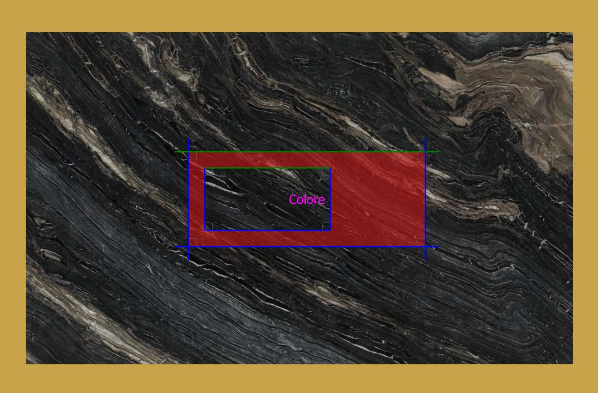
Cette fonction permet d’attribuer des paramètres de configuration aux Layers des fichiers DXF.
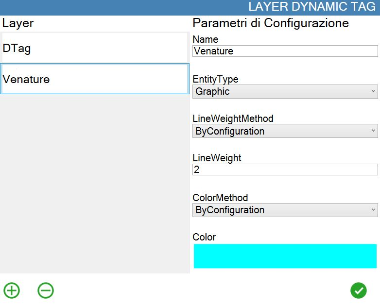
Paramètres
Les paramètres sont :
Name | Permet de définir et d’identifier le nom du Layer. |
Entity Type | Définit le type d’entités qui seront affichées. |
LineWeightMethod | Permet de choisir le mode utilisé pour déterminer l’épaisseur des lignes. |
LineWeight | Permet de définir l’épaisseur des lignes appartenant au Layer. |
ColorMethod | Permet de choisir le mode utilisé pour déterminer la couleur du Layer. |
Color | Permet de définir la couleur des entités appartenant au Layer. |
Boutons
Les boutons suivants permettent d’ajouter ou de supprimer une configuration :
 | Créer configuration |
 | Supprimer configuration |
Exemple
Dans cet exemple, les caractéristiques des éléments dessinés sur le Layer « Venature » doivent être modifiées.
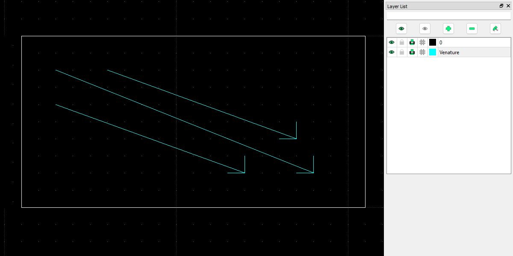
Les entités sont importées conformément aux paramètres définis dans la fenêtre correspondante.

Cette section permet de régler la vitesse de déplacement de la pièce avec les ventouses.

Paramètres
Vitesse XY | Détermine la vitesse de déplacement de la pièce avec les ventouses. |
Vitesse Z | Détermine la vitesse de déplacement en Z de la pièce avec les ventouses. |
Vitesse de rotation | Détermine la vitesse de rotation de la pièce avec les ventouses. |
Vitesse XY au déchargement | Détermine la vitesse de déplacement de la pièce avec les ventouses pendant la phase de déchargement de la pièce ou de coupe inférieure. |
Vitesse Z au déchargement | Détermine la vitesse de déplacement en Z de la pièce avec les ventouses pendant la phase de déchargement de la pièce ou de coupe inférieure. |
La vitesse XY au déchargement et la vitesse Z au déchargement peuvent être présentes ou non.
Ces choix sont normalement effectués lors de l’installation du programme et sont déterminés en fonction de l’usinage du client.
Ces options peuvent être modifiées en contactant l’assistance Donatoni.
Ce bouton permet de terminer l’usinage en cours et de commencer la programmation du suivant.

Procédure d’exécution
Un usinage se termine par la génération du programme de coupe de la machine ou par l’enregistrement de l’état des pièces.
Ce bouton permet de vider la zone de travail de la dalle et des pièces afin de libérer l’espace pour l’usinage suivant.

Un message demandant confirmation pour créer un nouvel usinage s’affiche.

Après confirmation, les éléments suivants sont supprimés :
photo et périmètre de la dalle ;
toutes les pièces présentes dans la zone de travail (y compris les pièces commerciales) ;
Parametrix tient compte des pièces programmées et met à jour leur nombre dans la liste des pièces.
Il n’est plus possible d’ajouter des pièces dans la zone de travail lorsqu’elles ont atteint le nombre maximal.
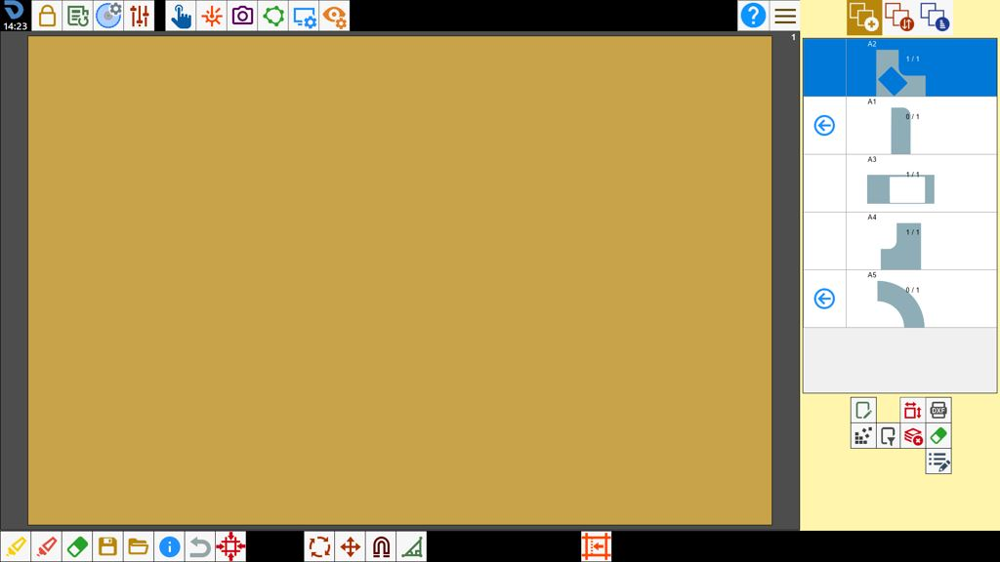
L’écran suivant permet à l’opérateur de gérer les outils de la machine.

Sélection du type d’outil
Chaque type d’outil possède un outil sélectionné, comme le montre l’image d’exemple suivante :

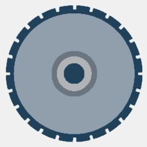 | Disque |
 | Tools |
L’arrière-plan de la catégorie « Disque » apparaît en bleu clair car il s’agit de la catégorie d’outils actuellement sélectionnée.
Il suffit de cliquer sur le rectangle du type d’outil souhaité pour mettre à jour la liste des outils située en dessous avec ceux disponibles pour ce type.
À la suite du changement de type d’outil, l’outil est automatiquement sélectionné comme indiqué dans l’image d’exemple précédente.
Liste des outils présents pour le type d’outil sélectionné
La liste d’outils utilisée comme exemple dans l’image suivante comprend quatre disques : « Disque 400 », « Disque 625 », « Disque 2755 » et « Disque 325 ».
Le premier disque de la liste est celui actuellement monté sur la machine ; cela est indiqué par l’arrière-plan vert clair et la coche verte.
Dans la section de droite, les paramètres relatifs à l’outil sélectionné sont affichés.

Éléments de la liste
 | Type d’outil |
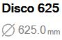 | Informations principales de l’outil |
 | Forcer l’outil |
Filtre de recherche
Dans la partie inférieure de la liste des outils se trouve une barre de recherche composée des éléments suivants :

Les éléments composant le filtre de recherche sont décrits ci-dessous :
 | Bouton de recherche par nom d’outil |
Bouton de recherche par diamètre d’outil | |
 | Bouton d’annulation du filtre appliqué |
Barre inférieure
La barre inférieure de la liste des outils propose des fonctions permettant d’ajouter et de supprimer des outils de la liste.

 | Ajouter un outil |
Supprimer l’outil | |
 | Dupliquer l’outil |
Ajouter un outil
Cette fenêtre permet de créer un nouvel outil. Les paramètres requis varient selon le type d’outil à créer.
L’image suivante montre la fenêtre de création d’un nouvel outil pour chaque type disponible :
Disque | Fraise | Foret carottier |
|  | 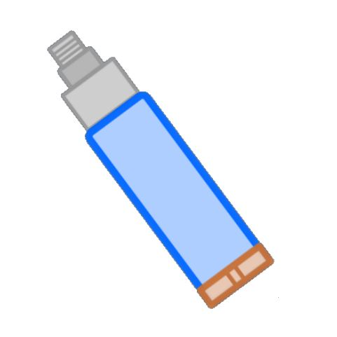 |
 | 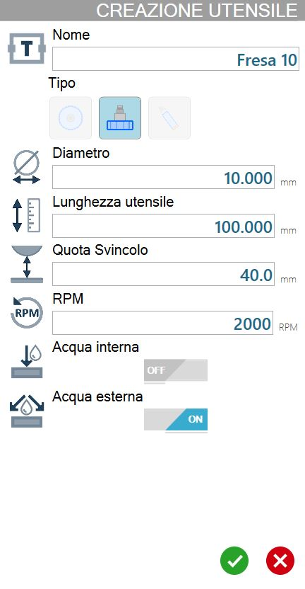 |  |
Liste des paramètres de l’outil sélectionné
Cette liste contient tous les paramètres relatifs à l’outil actuellement sélectionné.
Toute modification de la sélection de l’outil permet à l’opérateur d’afficher les valeurs mises à jour de l’outil souhaité et, si nécessaire, de modifier chaque valeur.
La liste des paramètres et les valeurs correspondantes sont également mises à jour lorsqu’un autre type d’outil (Disque / Tools) est sélectionné, en affichant les valeurs de l’outil sélectionné pour chaque catégorie.
Paramètres du disque
Les paramètres associés à un disque sont indiqués ci-dessous.

Nom | |
 | Diamètre |
 | Épaisseur du disque |
 | CRF - Centre de rotation de la bride |
 | Cote de dégagement |
 | RPM |
 | Eau interne |
 | Eau externe |
Vitesse de rotation du disque
Le bouton suivant se trouve à droite du paramètre RPM :
 | Informations RPM |
Cette fenêtre affiche un tableau contenant les conversions de vitesse de rotation en RPM selon le diamètre du disque sélectionné.
Les valeurs recommandées pour le disque sélectionné sont mises en évidence en vert.

Paramètres de fraise et de foret carottier
Les paramètres relatifs aux outils tels que les fraises et les forets carottiers sont indiqués ci-dessous.

 | Longueur de l’outil |
Palpage de l’outil
Si la machine est équipée du dispositif optionnel de palpage de l’outil, la procédure peut être lancée depuis ce panneau.
Permet de lancer un cycle permettant de calculer le diamètre, dans le cas d’un disque, ou la longueur, pour les fraises et les forets carottiers.
Boutons
Dans la partie droite du panneau se trouve l’un des boutons suivants.
 | Démarrer le palpage du disque |
 | Démarrer le palpage de l’outil secondaire |
Le bouton de palpage du disque n’est disponible que dans la section « Disque » du panneau.
Le bouton de palpage de l’outil secondaire n’est disponible que dans la section « Tools » du panneau.
Procédure
Pour mesurer le diamètre du disque ou la longueur du foret carottier/de la fraise actuellement monté sur la machine, appuyer sur le bouton correspondant dans la section droite du panneau.
À la fin du cycle, le programme met automatiquement à jour la donnée correspondant à la mesure de l’outil palpé.

Autres boutons
Le bouton suivant se trouve en bas à gauche de l’écran :
 | Passer au panneau « Paramètres d’usinage de la dalle » |
Si la machine dispose de l’option Tool Plus, une nouvelle section dédiée est présente dans le panneau outil.
/0.00.png)
Boutons
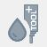 | Activation/Désactivation de l’eau |
/0.02.png) | Activer/Désactiver la rotation |
/0.03.png) | Levage |
/0.04.png) | Abaissement |
Les outils d’une machine équipée d’un changement automatique peuvent être gérés depuis ce panneau.
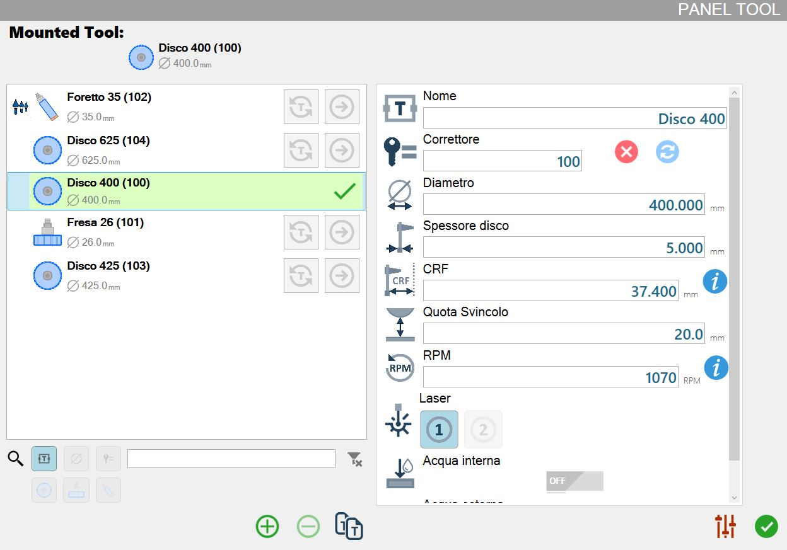
Liste des outils
La section de gauche affiche la liste de tous les outils disponibles pour la machine.
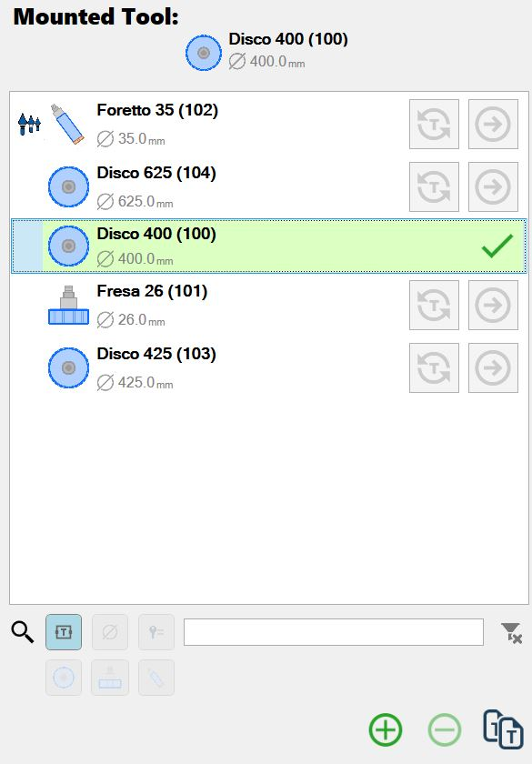
L’outil actuellement monté sur la machine est indiqué en haut.
En dessous, une liste affiche les outils utilisables par la machine. Deux boutons sont présents à côté de chaque outil :
 | Forcer l’outil monté |
 | Démarrer le changement d’outil |
Paramètres outil
La section de gauche contient les paramètres associés à l’outil sélectionné.

 | Correcteur |
Laser |
Correcteur
Ce champ indique la position dans laquelle sont rangés les outils non utilisés dans le magasin de la machine.
 | Changer le correcteur |
 | Supprimer le correcteur |
Procédure de changement automatique d’outil
En appuyant sur le bouton associé à un outil, l’opérateur peut démarrer la procédure de changement automatique d’outil.
Au démarrage, il est demandé pour quels usinages le nouvel outil en cours de montage doit être utilisé.
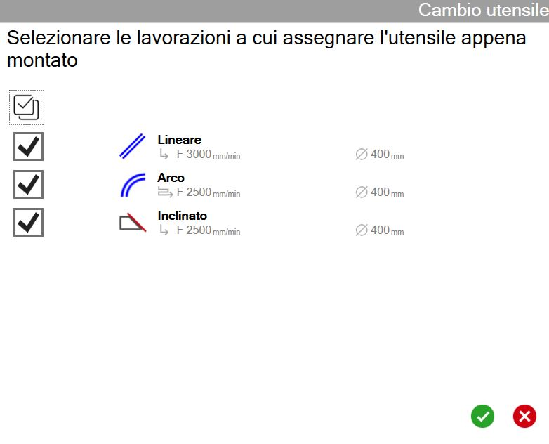
Ce type de machine permet de monter deux disques sur la tête au lieu d’un seul. Le panneau outil permet de gérer les deux.

Paramètres
Chaque outil de la section « Disque » contient les informations relatives aux deux disques montés sur la machine.

En particulier :
 | Diamètre du premier disque |
 | Diamètre du deuxième disque |
À l’ouverture du panneau « Paramètres Dalle », l’écran des paramètres d’usinage s’affiche et permet à l’opérateur de gérer les données relatives à l’usinage.
Les données d’usinage peuvent être définies et modifiées à l’aide du panneau des paramètres.

Gestion du matériau sélectionné
Dans la partie supérieure du panneau « paramètres d’usinage de la dalle » se trouvent plusieurs éléments permettant de gérer les matériaux :

Les éléments composant cette section des paramètres d’usinage de la dalle sont décrits ci-dessous
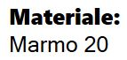 | Matériau sélectionné |
 | Bouton de création d’un nouveau matériau |
 | Bouton accéder au panneau Gestion des matériaux |
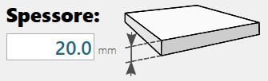 | Épaisseur du matériau sélectionné |
Ajouter un nouveau matériau
Cette petite fenêtre graphique permet de composer le nom d’un nouveau matériau :
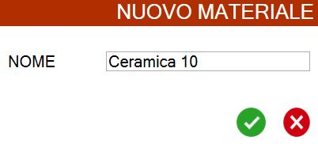
Si la création du nouveau matériau est confirmée, celui-ci est automatiquement sélectionné.
Les paramètres et l’épaisseur du matériau sont mis à jour en conséquence.
Ouvrir le panneau de gestion des matériaux
Ce panneau permet de gérer les matériaux :

 | Barre de recherche |
Supprimer le filtre | |
 | Supprimer le matériau |
 | Dupliquer le matériau |
 | Modifier le matériau |
Sélection du type d’usinage
La sélection du type d’usinage détermine le contenu de la fenêtre de gestion des paramètres.

Pour chaque type d’usinage, l’aperçu correspondant affiche le mode d’incrément choisi, la vitesse de coupe en avant (de plongée / d’entrée dans le cas du type d’usinage Trou) et le diamètre de l’outil.
Type de passes
 | Passe complète |
 | Passe par pas / en spirale |
Types d’usinage
Linéaire

Passe complète

Passe par pas
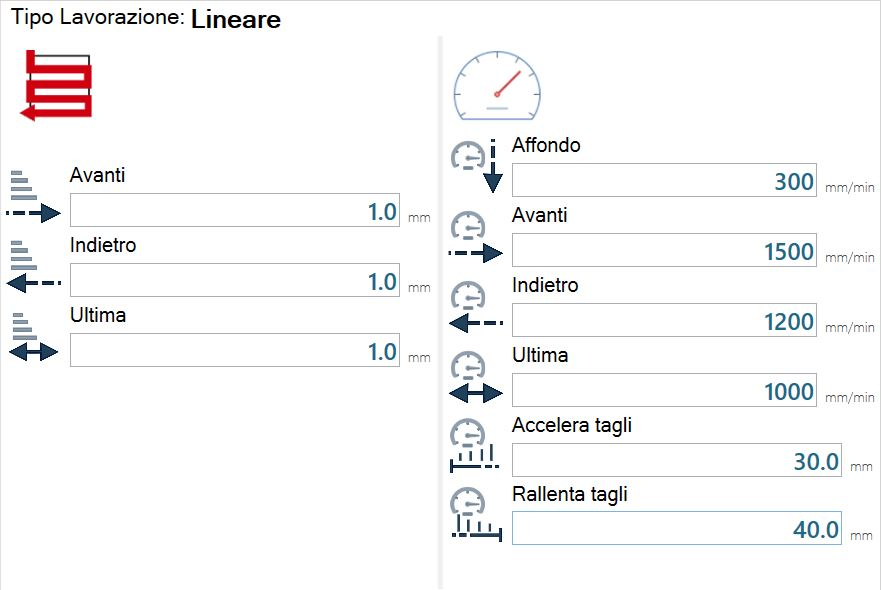
Description des paramètres d’incrément
 | Avant |
 | Arrière |
 | Dernière |
Description des paramètres de vitesse
 | Plongée |
 | Avant |
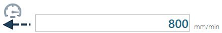 | Arrière |
| Dernière |
 | Accélérer les coupes |
 | Ralentir les coupes |
En ce qui concerne les incréments et les vitesses, les paramètres « Arrière » et « Dernière » peuvent être présents ou absents, ou un seul des deux peut être présent.
Ces choix sont normalement effectués lors de l’installation du programme et sont déterminés en fonction de l’usinage du client.
Il est possible de modifier ces options si un mode de travail différent est souhaité en contactant l’Assistance Donatoni.
Arc

Passe par pas

Incliné

Passe complète

Passe par pas

Description des paramètres d’incrément
  | Coupe avec palpage (activée / désactivée) |
Fraisage

Passe complète

Passe par pas et passe en spirale


Trou

Passe complète

Passe par pas

Exécution de l’usinage avec passe par pas :
La machine approche le matériau à la vitesse maximale jusqu’à atteindre la distance par rapport au matériau spécifiée dans le paramètre APPROCHE.
Le nombre de pas est calculé comme suit :
Épaisseur du matériau divisée par l’épaisseur des pas
éventuellement arrondie au nombre supérieur
La machine commence à se déplacer à la vitesse d’usinage.
Si la valeur du paramètre PAS ENTRÉE est définie (différente et supérieure à zéro), la machine travaille à la vitesse définie dans le deuxième champ ENTRÉE jusqu’à atteindre la distance définie dans le champ PAS ENTRÉE
La machine exécute les pas calculés au deuxième point à la vitesse Pas
Après chaque pas (y compris le premier), la machine revient à la cote du matériau à la vitesse maximale, puis revient à la vitesse maximale à courte distance du début du pas suivant.
Si le paramètre PAS SORTIE est défini (différent et supérieur à zéro), la machine travaille à la vitesse définie dans le deuxième champ PAS jusqu’à atteindre la distance définie dans le premier champ SORTIE
Le reste du pas est exécuté à la vitesse SORTIE
Description des paramètres Trou avec passe par pas
 | Cote d’approche |
 | Pas |
 | Entrée |
 | Sortie |
  | Pause après |
Modifier les paramètres de coupe
Les paramètres précédemment décrits pour le disque, la fraise et le foret carottier peuvent être modifiés si l’utilisateur est autorisé à les utiliser.

Pour choisir l’outil dont les paramètres doivent être modifiés, en sélectionner un en appuyant sur le bouton visible dans la partie droite du panneau « Sélectionner outil ».
 | Modifier les paramètres de coupe |
Appuyer sur ce bouton affiche une fenêtre contenant une configuration de paramètres enregistrée pour chaque matériau présent. Les résultats dépendent également du type d’usinage sélectionné.
Une fenêtre « Modifier les paramètres de coupe » semblable à l’image d’exemple suivante s’ouvre :

Dans la partie inférieure gauche du panneau « Modifier les paramètres de coupe » se trouve une barre de texte initialement vide permettant d’appliquer un filtre de recherche.
Le bouton situé à droite de la barre ne s’active que lorsque du texte est présent dans la barre et qu’un filtre de recherche est donc appliqué. Appuyer dessus supprime le filtre et vide la barre de texte.
Barre inférieure
La barre inférieure du panneau Paramètres Dalle se présente comme suit :

Cette barre est composée des éléments suivants :
 | Aperçu du disque |
 | Aperçu fraise/foret |
Panneau Outil |
Ce panneau permet d’accéder à certaines commandes manuelles de la machine.

Boutons
 | 0_ - 90_ |
 | Stationnement |
 | Palper la dalle |
 | Cycle CRF |
 | Cycle de lavage |
 | Activation / Désactivation de l’eau interne |
 | Activation / Désactivation de l’eau |
Cycle de palpage de la dalle
Le cycle de palpage permet de calculer l’épaisseur de la dalle et d’acquérir la cote du plan de travail à l’aide du palpeur prévu à cet effet monté sur la machine.
Pour le démarrer, activer le bouton dans le panneau des commandes manuelles, puis appuyer sur un point à l’intérieur de la dalle dans la zone de travail.
À la position choisie, un symbole indiquant l’endroit où le palpage doit être effectué s’affiche.
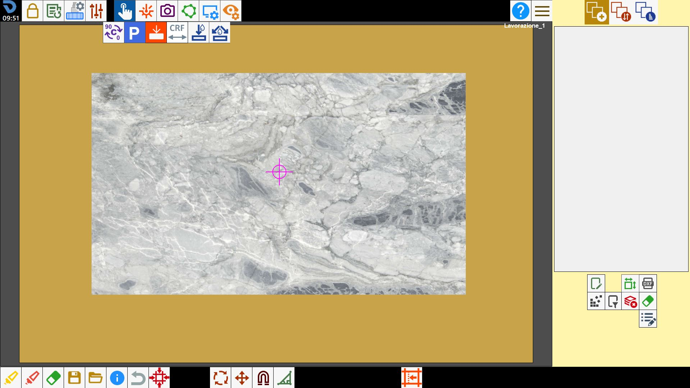
Une fois le cycle terminé par la machine, un panneau s’ouvre et affiche certaines mesures obtenues lors du palpage de la dalle.
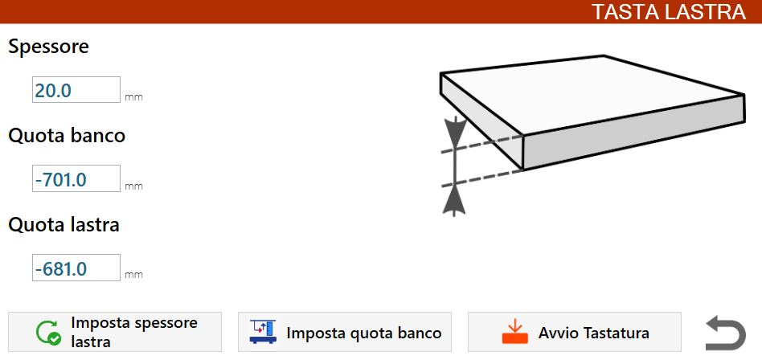
Ces informations comprennent :
Épaisseur | Épaisseur mesurée de la dalle. |
Cote du plan de travail | Cote du plan de travail. |
Cote de la dalle | Cote mesurée sur le bord supérieur du matériau posé sur le plan de travail. |
Les données recueillies pendant le cycle de palpage peuvent être enregistrées à l’aide des boutons ci-dessous :
 | Définir l’épaisseur de la dalle |
 | Définir la cote du plan de travail |
 | Démarrer le palpage |
Cycle de mesure du CRF (Centre de rotation de la bride)
Le cycle CRF permet de mesurer la distance entre le bord intérieur de la dent du disque actuellement monté sur la machine et l’axe de rotation C.
Pour le démarrer, activer le bouton dans le panneau des commandes manuelles, puis appuyer sur un point à l’intérieur de la dalle dans la zone de travail.
À la position choisie, un symbole indique l’endroit où les coupes avec le disque nécessaires à la mesure du CRF doivent être effectuées.
Pendant l’exécution de ce cycle, des coupes sont effectuées dans le matériau.
Il est donc recommandé à l’opérateur de faire attention à la position sur la dalle où le cycle est lancé afin d’éviter de l’endommager.

La machine effectue deux coupes parallèles avec l’axe A à 0_ : la première avec l’axe C à 0_, la seconde avec l’axe C à 180_.
À la fin de la procédure, l’opérateur doit mesurer, à l’aide d’un mètre ou d’un pied à coulisse, la distance intérieure entre les deux coupes sur la dalle.
Cette mesure doit ensuite être saisie dans le champ « A » du panneau qui s’ouvre à la fin du cycle.

Les mesures effectuées doivent être saisies dans le champ prévu :
A | Distance intérieure entre les deux coupes effectuées sur la dalle pendant le cycle. |
CRF (A/2) | Mesure du Centre de rotation de la bride du disque. Elle est calculée comme la moitié de la distance intérieure entre les deux coupes présentes sur la dalle. |
Les données recueillies pendant le cycle de mesure CRF peuvent être enregistrées à l’aide du bouton suivant :
 | Définir la mesure CRF |
Ce panneau permet d’ajouter ou de supprimer des références laser dans la zone de travail.

Boutons
 | Référence du laser ligne |
 | Dessiner le laser croix |
Effacer tous les dessins | |
 | Effacer un seul dessin |
Laser ligne
Le laser ligne est un dispositif aligné sur le disque monté sur la machine. Il est utilisé pour recueillir des informations sur la position et l’orientation du disque sur le plan de travail.
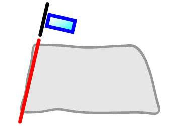
Pour acquérir la référence, amener la machine au point souhaité, puis appuyer sur le bouton afin de relever la direction du laser ligne et d’ajouter la référence dans la zone de travail.
En utilisant plusieurs références, il est possible de reconnaître le périmètre et la position de la dalle ou d’une pièce sur le plan de travail.

Laser croix
Le laser croix est utilisé pour recueillir des informations sur la position du pointeur laser sur le plan de travail.

Pour acquérir la référence, amener la machine au point souhaité, puis appuyer sur le bouton afin de relever la position du laser croix et d’ajouter la référence dans la zone de travail.
En utilisant plusieurs références, il est possible de reconnaître le périmètre et la position de la dalle ou d’une pièce sur le plan de travail.

Cette fonction permet d’ajouter une photo dans la zone de travail.
Si Parametrix est connecté à un appareil photo, une photo de la dalle sur le plan de travail est prise.
Sinon, l’utilisateur doit sélectionner une photographie parmi les fichiers de l’ordinateur.

Prendre une photo
En général, cette fonction permet de prendre une photo du plan de travail de la machine à l’aide de l’appareil photo intégré.
Appuyer sur le bouton ouvre une fenêtre demandant de saisir l’épaisseur de la dalle qui va être photographiée.

La photo est prise, puis le panneau permettant à l’opérateur de définir le périmètre de la dalle s’ouvre.
Choisir une photo dans les fichiers de l’ordinateur
Ce mode permet aux ordinateurs non connectés à un appareil photo, généralement installés dans les bureaux, d’insérer dans le programme des photos provenant de fichiers.
Appuyer sur le bouton ouvre la fenêtre de l’Explorateur de fichiers afin de sélectionner un fichier à charger.
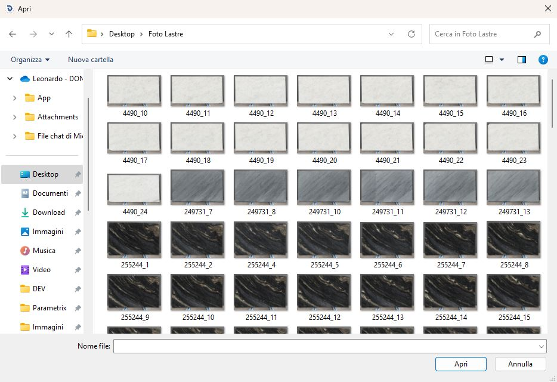
L’utilisateur est ensuite dirigé vers le panneau de sélection du périmètre de la dalle.
Sélection du périmètre
Après avoir sélectionné ou pris la photo, cet écran s’affiche ; l’opérateur doit y indiquer un périmètre à l’intérieur duquel les pièces pourront être positionnées.

Après confirmation du périmètre, la photo de la dalle est ajoutée dans la zone de travail de Parametrix.

Pour fonctionner, le programme doit connaître le bord de la dalle sur laquelle il doit travailler. Cette fonction permet de tracer le périmètre.

Mode de création du périmètre
Le programme permet à l’opérateur de dessiner le périmètre selon l’un des modes suivants :
 | Mode rectangle |
 | Mode par points |
Il est possible de passer d’un mode à l’autre à tout moment pendant la création du périmètre.
En passant du mode « par points » au mode « rectangle », le périmètre est converti en rectangle et tous les sommets du polygone sont perdus.
Une confirmation est demandée avant d’effectuer cette opération.
Rectangle
Ce mode permet de créer des périmètres rectangulaires.
Pour modifier les dimensions et la position du rectangle, faire glisser les cercles jaunes dans la zone de travail ou modifier les valeurs indiquées dans la barre ci-dessous.

Dimensions | Dimensions du périmètre sur l’axe X et sur l’axe Y. |
Position | Coordonnées du sommet inférieur gauche du rectangle par rapport au sommet inférieur gauche du plan de travail. |
Par points
Ce mode permet de créer des polygones de forme arbitraire.
Pour ce faire, l’opérateur peut placer les points formant le périmètre aux positions souhaitées, comme illustré ci-dessous.

Dans ce mode, il est possible d’interagir avec le périmètre à l’aide des boutons suivants :
 | Fermer le périmètre |
 | Supprimer le dernier point |
Une fois fermé, le périmètre devient bleu et ses sommets sont indiqués par des cercles jaunes.
Pendant la création comme en présence d’un périmètre fermé, il est toujours possible de déplacer les sommets dans la zone de travail afin d’améliorer la précision.
Barre inférieure
L’opérateur peut interagir avec un périmètre présent dans la zone de travail à l’aide des boutons situés dans la partie inférieure de l’écran.
 | Aimantation sur laser croix |
 | Déplacement du périmètre |
Créer un nouveau périmètre
Le programme permet de créer plusieurs périmètres sur lesquels disposer les pièces à usiner.
Il est également possible de définir des zones de la dalle dans lesquelles aucune pièce ne peut être insérée.
 | Périmètre |
 | Zone à éviter |
 | Supprimer le périmètre |
Les périmètres créés sont visibles dans la liste en haut à droite. Pour modifier un périmètre, il suffit de le sélectionner dans la zone de travail ou de sélectionner l’entrée correspondante dans la liste.
Le périmètre actuellement sélectionné présente des contours bleus et des sommets jaunes, tandis que les autres peuvent également être distingués par leur couleur : vert pour les périmètres des dalles, orange pour les zones à éviter.

Cet écran permet d’ajouter des coupes de détente à la dalle.
 | Dressage de la dalle |
Pour terminer la création du périmètre, l’opérateur doit saisir certaines informations concernant l’usinage à effectuer.
Épaisseur | L’opérateur doit indiquer l’épaisseur de la dalle présente sur le plan de travail. |
Nom | Nom à attribuer à l’usinage de la dalle. |
Client | Indique le nom du client pour lequel la commande est réalisée. Ce champ est facultatif. |
Commande | Indique un identifiant de commande. Ce champ est facultatif. |
L’épaisseur de la dalle et le nom de l’usinage sont des champs obligatoires à renseigner avant de confirmer le périmètre.
En revanche, il n’est pas nécessaire de renseigner les informations relatives aux propriétés supplémentaires ci-dessous.
Zones à éviter
Les zones à éviter sont des zones de la dalle que l’opérateur souhaite rendre indisponibles pour le positionnement des pièces.
Cela peut être dû à la présence de fissures dans le matériau, de veines peu esthétiques ou à la nécessité de préserver certaines parties de la dalle.
Elles sont représentées par des zones bleues dans la zone de travail.

Lorsque la fonction Nesting est utilisée, les pièces sont disposées de manière à n’occuper aucune de ces zones.
Le dressage de la dalle est une fonction permettant d’ajouter des coupes de détente à l’usinage. Ces coupes servent à dresser la dalle le long de ses bords.
La fonction peut être activée dans le panneau de création du périmètre.
L’écran d’exemple suivant présente un schéma représentant les quatre coupes, une par côté, pouvant être insérées.

Barre latérale
 | Dressage de la dalle |
Seules les dalles à périmètre rectangulaire peuvent être dressées. Cette fonction ne fonctionne pas en mode « par points ».
Il est également possible de dresser plusieurs périmètres de différentes manières.
Exécution de l’usinage
Dans la zone de travail, le programme vérifie que l’opérateur ne positionne pas de pièces à l’extérieur du dressage de la dalle.
Il est également possible d’aimanter les pièces sur ces coupes, comme illustré sur la figure.

Lors de l’exécution du programme de coupe, la machine effectue ces dressages avant toute autre opération. Immédiatement après, une pause de dressage est exécutée afin de laisser à l’opérateur le temps de retirer le matériau de dalle mis au rebut.
Ainsi, les opérations ultérieures de manutention de la dalle au moyen des ventouses peuvent être effectuées sans être gênées par ces dressages.
Ces opérations sont également visibles dans la liste de l’écran de gestion et d’optimisation des coupes.

Grâce à cette fonction, Parametrix peut déterminer automatiquement le périmètre d’une dalle photographiée.
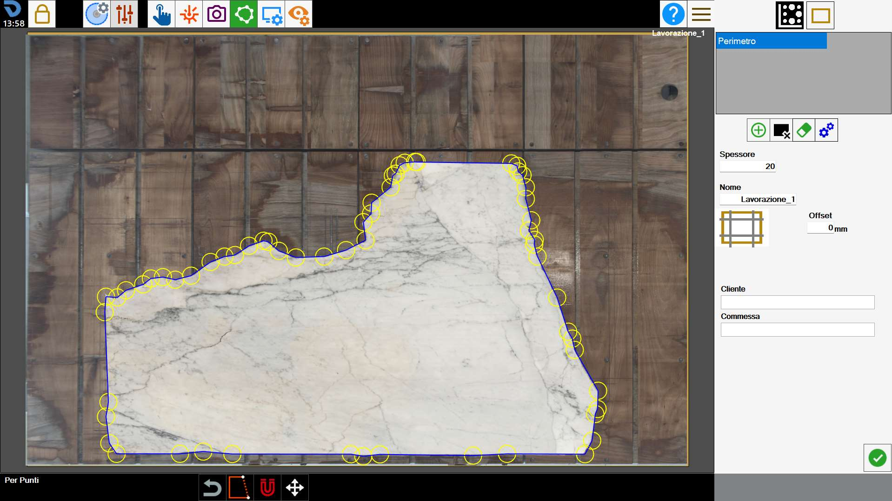
Boutons
/0.05.png) | Périmètre automatique |
Utilisation du périmètre automatique
Pour utiliser cette fonction, il est nécessaire de prendre une photo d’une dalle sur le plan de travail ou de charger une image depuis l’ordinateur.
L’opérateur se trouve alors dans le panneau de gestion du périmètre.
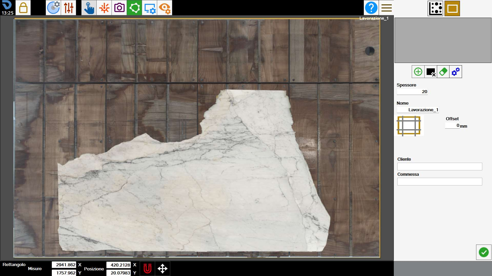
Dans la section de droite, appuyer sur le bouton de calcul du périmètre automatique.
À la fin de l’opération, il est possible de modifier manuellement les sommets du périmètre obtenu s’ils ne sont pas suffisamment précis.
/0.04.png)
L’opérateur peut intégrer le système photo à différents formats, par exemple Mapascan.

Exécution
Outre l’image, des fichiers supplémentaires contenant des informations utiles relatives à la dalle sont souvent fournis, par exemple l’épaisseur, le périmètre et d’autres données géométriques ou physiques pertinentes.

À l’ouverture de la photo, les données sont analysées afin de définir correctement le périmètre, les zones à éviter et l’épaisseur :

Parametrix est capable de lire ce fichier et d’importer la photo de la dalle, son périmètre et son épaisseur.
Intégration multiple
Lorsque plusieurs intégrations sont configurées, il est possible de sélectionner dynamiquement celle à utiliser au moment de l’exécution.

Cette fonction ouvre un petit panneau contenant des outils permettant de redimensionner la zone de travail.

Boutons
Règle | |
 | Zoom _ |
 | Zoom - |
 | Réinitialiser le zoom |
 | Zoom fenêtre |
Déplacer la vue | |
Afficher / Masquer la couleur d’arrière-plan | |
 | Afficher / Masquer le nom des pièces |
 | Afficher / Masquer les angles droits |
Règle
Pour utiliser cette fonction, l’opérateur doit indiquer deux points dans la zone de travail. Ils sont représentés par deux croix jaunes.

Sous le bouton de la règle apparaît un petit panneau affichant la distance entre les deux points.

Horizontale | Distance horizontale entre le premier et le deuxième point. |
Verticale | Distance verticale entre le premier et le deuxième point. |
Totale | Distance totale entre le premier et le deuxième point. |
X | Position horizontale de la souris en temps réel. |
Y | Position verticale de la souris en temps réel. |
Cette fonction ouvre un petit panneau contenant des outils d’affichage.

Boutons
 | Afficher / Masquer les coupes |
 | Afficher / Masquer les trous |
 | Afficher / Masquer les fraisages |
 | Afficher / Masquer les feuillures |
 | Afficher / Masquer les flèches |
 | Afficher / Masquer les Dynamic Tags |
Mettre le périmètre en évidence |
Parametrix est conçu pour l’usinage de figures géométriques planes et fermées représentant les pièces.

Modes de création des pièces
Comme on peut le voir dans la barre de navigation supérieure,

la création des pièces s’effectue à l’aide de l’un des modes suivants :
 | Importation de fichiers DXF |
 | Création de rectangles |
 | Création de figures paramétriques |
Importation de fichiers CSV | |
 | Historique |
 | Favoris |
 | Création de pièces commerciales |
Le fonctionnement de chaque mode est décrit plus en détail dans le paragraphe correspondant de ce chapitre.
La fonction sélectionnée est mise en évidence en vert clair. À l’ouverture du panneau « Créer des pièces », le mode « Création de rectangles » est sélectionné.
Importer les pièces dans Parametrix
Pour terminer correctement la création d’une ou plusieurs pièces, utiliser le bouton suivant, disponible dans chaque section du panneau :
 | Importer les pièces |
Le fonctionnement de la liste des pièces, située dans la partie droite du panneau, est expliqué dans le chapitre correspondant.
L’image suivante montre comment, après avoir appuyé sur le bouton « Importer les pièces », la liste des pièces a été renseignée avec les éléments composant le fichier DXF choisi pour l’importation.

Liste des pièces importées
La liste des pièces affichée dans la partie droite du panneau « Créer des pièces » est initialement vide. Elle se remplit au fur et à mesure que des pièces sont créées à l’aide des fonctions décrites précédemment dans ce chapitre.
Un exemple de liste de pièces vide (à gauche) et un exemple de liste renseignée (à droite) sont présentés ci-dessous :
 |  |
Propriétés avancées des pièces
Les images d’exemple précédentes montrent un seul bouton dans l’angle supérieur droit de la liste des pièces à usiner :
Afficher les informations avancées de la pièce |

Dans la partie inférieure de la fenêtre Pièce se trouvent deux boutons décrits ci-dessous :
 | Copier |
 | Coller |
Afficher les détails de la pièce
En reprenant l’exemple de la liste renseignée à droite affichée au début du chapitre, le comportement du bouton suivant est maintenant mis en évidence :
Afficher les détails de la pièce |
Après avoir appuyé sur le bouton, la pièce apparaît dans la liste comme suit :

Ajouter la pièce sélectionnée aux favoris
Il est possible d’insérer n’importe quelle pièce dans la section réservée aux pièces favorites à l’aide du bouton suivant :
 | Ajouter aux favoris |
Appuyer sur ce bouton affiche la fenêtre contextuelle suivante :

Renseigner le champ de texte puis confirmer permet à l’opérateur d’insérer la pièce sélectionnée dans la liste des pièces favorites décrite précédemment.

Rechercher le DXF d’origine
Il est possible de rechercher le dossier du DXF d’origine à l’aide du bouton suivant :
 | Rechercher la pièce |
En appuyant sur ce bouton, si Parametrix trouve correctement le fichier DXF d’origine, une fenêtre de l’Explorateur de fichiers semblable à la suivante s’ouvre :
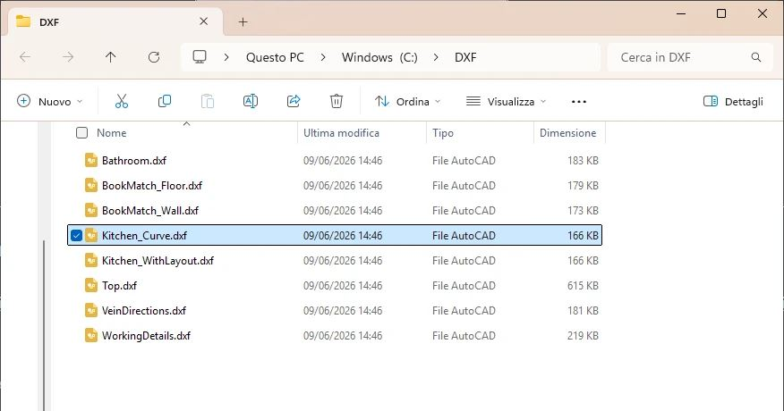
Dans cette section, il est possible de créer des pièces en important des fichiers DXF.

Liste des fichiers
Dans la partie gauche de la fenêtre se trouve une liste affichant tous les dossiers et fichiers DXF contenus dans le chemin actuellement sélectionné.

L’élément en haut de la liste,

permet de revenir au dossier parent du dossier actuel.
Initialement, la liste des fichiers DXF présents dans le dossier de travail du PC est affichée. Le dossier peut être modifié à l’aide des boutons prévus à droite de la liste des fichiers.
 | Mémoire USB |
 | Dossier de travail |
 | Parcourir les dossiers |
 | Supprimer le fichier |
Trier et filtrer les fichiers affichés
Les éléments situés sous la liste gèrent l’application des filtres et le tri des fichiers affichés.

Dans la partie supérieure de l’image se trouve une barre de recherche permettant de filtrer les fichiers par nom et d’afficher uniquement ceux contenant le texte saisi.
Cette section de l’écran contient également les boutons suivants :
 | Effacer le filtre |
 | Tri par date |
 | Tri par nom |
La recherche par nom s’applique uniquement aux fichiers contenus dans le dossier et non aux éventuels sous-dossiers.
En revanche, le tri par nom et par date s’applique à tous les éléments de la liste, les dossiers étant toujours affichés avant les fichiers.
Aperçu
Lorsqu’un fichier est sélectionné, un aperçu du dessin s’affiche dans le cadre au centre de l’écran afin d’en identifier immédiatement le contenu.
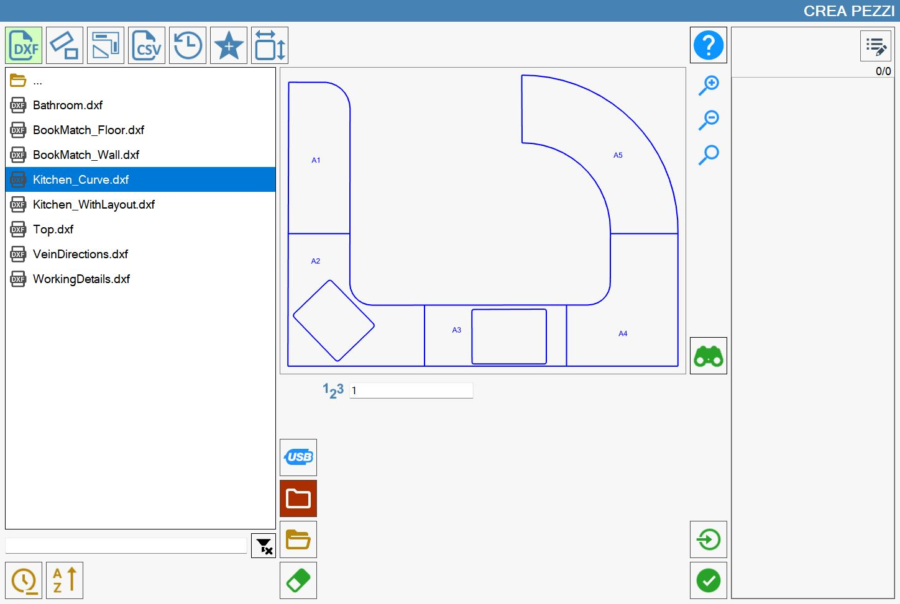
Il est possible d’interagir avec l’aperçu en faisant glisser son contenu ou en utilisant les boutons situés à sa droite.
 | Augmenter le zoom |
 | Réduire le zoom |
 | Réinitialiser l’affichage |
Boutons supplémentaires
Les boutons suivants permettent également d’effectuer des actions supplémentaires.
Panneau des détails |
Panneau des détails
Si un fichier a été sélectionné, il est possible d’accéder au « Panneau des détails » pour afficher les propriétés du DXF. Pour cela, utiliser le bouton suivant situé à droite de l’aperçu :
Une fois ouvert, le panneau suivant s’affiche, en plus de la liste des pièces composant le DXF sélectionné :

Gestion de la visibilité des layouts
Dans la partie supérieure de ce panneau, les layouts sont présentés sous forme de cases à cocher pouvant être activées ou désactivées librement :

Le premier élément de cette liste de layouts permet d’activer ou de désactiver l’affichage de tous les layouts.
Panneau latéral
Boutons relatifs à la visibilité et au padding
En plus des boutons déjà présentés précédemment pour modifier le niveau de zoom et le réinitialiser, deux nouveaux boutons sont disponibles :

Mettre en évidence la pièce sélectionnée | |
 | Déplacer la vue |
Liste des polylignes
Dans la partie centrale droite du panneau sont affichées, sous forme de polylignes, les pièces composant le DXF sélectionné.
En sélectionnant l’une des valeurs de la liste, la pièce correspondante visible dans l’aperçu est mise en évidence en jaune.

Lorsque la touche située à côté de chaque pièce est enfoncée, la liste des polylignes constituant la pièce devient visible.
Il est également possible de mettre en évidence une seule polyligne du DXF en sélectionnant simplement la ligne correspondante dans la liste :

Boutons inférieurs
Ces boutons sont situés dans la partie inférieure de la barre latérale.

Rechercher la polyligne ouverte précédente | |
 | Rechercher la polyligne ouverte précédente |
Dans l’exemple suivant, le Panneau des détails a été ouvert pour un DXF contenant certaines pièces constituées de polylignes ouvertes, affichées en rouge dans la liste :

Il est possible de construire des pièces rectangulaires en saisissant leurs dimensions de largeur et de hauteur et de les ajouter à la liste des pièces à usiner.
Le programme permet également d’associer à chaque pièce un repère (ou une étiquette) d’identification et de définir le nombre de répétitions de rectangles de mêmes dimensions.

Description des paramètres
Les données suivantes sont requises pour créer des pièces rectangulaires :
 | Nombre de pièces |
 | Largeur |
 | Hauteur |
 | Repère |
Boutons supplémentaires
Les boutons latéraux suivants permettent également d’effectuer des actions supplémentaires.
 | Importation individuelle |
Dynamic Tag Top |
Pour activer la fonction associée à chaque bouton, il faut appuyer dessus. Dans ce cas, il est mis en évidence en vert clair.
Dans cette section, il est possible de construire des pièces à l’aide de figures paramétriques de forme prédéfinie. Pour dessiner une figure, il suffit de saisir les valeurs qui la caractérisent.

Catégories de figures paramétriques
En se référant à l’image ci-dessus, la colonne de gauche représente les principales catégories de formes paramétriques.
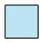 | Figures rectangulaires |
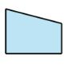 | Quadrilatères |
 | Figures triangulaires |
 | Plans de cuisine |
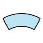 | Figures de type secteur |
 | Figures elliptiques |
 | Figures polygonales |
 | Salles de bains |
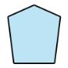 | Figures en pierre ou funéraires |
 | Tables |
 | Figures spéciales |
Aperçu et valeurs paramétrées
Selon la catégorie sélectionnée, la colonne immédiatement à droite permet de choisir la forme correcte à utiliser.
Une image au centre de l’écran fournit des indications détaillées sur les dimensions à saisir. À droite de l’image de référence, un aperçu de la figure en cours de dessin est affiché et mis à jour en temps réel après chaque modification des valeurs qui caractérisent la figure.
Comme dans les paragraphes précédents, une fois la saisie des cotes terminée, il est possible d’indiquer le repère (ou l’étiquette) affiché sur la pièce lorsqu’elle est insérée dans la zone de travail, le nombre de copies de la pièce et de décider s’il faut effectuer une importation individuelle.
L’image suivante montre un exemple de création d’un plan de cuisine.

Création d’évidements internes
Pour créer des évidements internes, appuyer sur l’un des rectangles internes de l’image centrale. La fenêtre représentée ci-dessous s’ouvre et permet de modifier librement l’évidement avant de l’insérer dans l’image d’origine.

Paramètres supplémentaires
Paramètres supplémentaires
Les données suivantes sont requises pour créer des pièces rectangulaires :
 | Nombre de pièces |
 | Repère |
Boutons supplémentaires
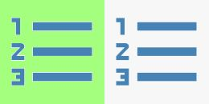 | Importation individuelle |
  | Mirror |
 | Réinitialiser |
Barre pour pièces hors équerre
Certaines pièces peuvent être construites avec des angles hors équerre (c’est-à-dire différents de 90 degrés).
Pour utiliser cette possibilité, une barre située au-dessus de l’image centrale contient toutes les variantes de modification de l’image. Les paramètres modifiables sont colorés en vert.

Mirror
En appuyant sur les deux boutons dédiés, il est possible de retourner le résultat affiché à l’écran respectivement selon l’axe vertical ou horizontal. Cette fonction permet d’adapter l’affichage aux besoins opérationnels ou au type d’usinage en cours.
Quelques exemples de retournement horizontal et vertical sont présentés ci-dessous :
Retournement horizontal uniquement | Retournement vertical uniquement | Retournement horizontal et vertical |
 |  | |
 |  | 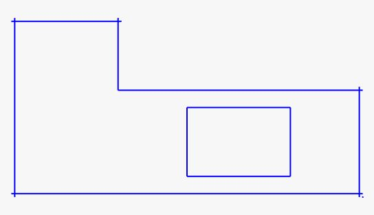 |
Cette section permet à l’opérateur d’importer des pièces à partir de fichiers au format CSV.
/schermata_pulita_eng-20250321-091704.png)
Aperçu
La liste située à gauche de cette section affiche tous les fichiers au format CSV présents dans le chemin actuellement sélectionné.
La sélection d’un élément dans la liste des fichiers CSV met à jour l’aperçu qui constitue la partie centrale de cette section.
Dans l’exemple suivant, il est possible d’observer la mise à jour de l’aperçu après avoir sélectionné le premier élément de la liste :
/schermata_bagno_eng-20250321-092252.png)
Multiplicateurs d’encombrement
Il est possible de multiplier par 10, par 100 ou par 1000 l’encombrement des pièces présentes dans le fichier CSV sélectionné.
L’image suivante présente les trois multiplicateurs disponibles :
/pulsanti_moltiplicatore-20250320-154918.png)
L’image suivante met à jour l’exemple de l’image présentée au chapitre « Aperçu », dans lequel les valeurs « Largeur », « hauteur » et « épaisseur » sont modifiées après avoir appuyé sur le deuxième bouton de multiplicateur d’encombrement « X 100 » :
/image-20250325-132949.png)
Dans cet exemple, il est également mis en évidence qu’après avoir été cliqué, le bouton « X 100 » est mis à jour en changeant sa couleur d’arrière-plan en une teinte vert clair.
Tri
La fonction de tri remplit la liste de tri en fonction des champs présents dans le fichier CSV sélectionné et permet à l’opérateur, s’il le souhaite, d’appliquer un tri alphabétique ou alphabétique inverse basé sur l’un des champs prévus dans le fichier sélectionné.
/sezione_ordinamento_eng-20250320-155220.png)
Cette fonction permet à l’opérateur de récupérer l’historique des pièces créées.

Types d’affichage des pièces dans l’historique
Trois modes d’affichage différents des pièces présentes dans cette section sont disponibles :
 | Vue des coupes |
Vue des cotes | |
 | Vue de l’encombrement |
Pour les exemples suivants, cinq pièces (A1, A2, A3, A4 et A5) ont été importées depuis le DXF nommé « Kitchen_Curve ».
Quel que soit le mode d’affichage sélectionné, il sera toujours possible d’afficher toutes les pièces aussi bien dans la liste de l’historique à gauche que dans la liste des pièces actuellement importées à droite.
Vue des coupes
La vue des coupes met en évidence toutes les coupes, aussi bien celles du périmètre que celles internes à la pièce, en masquant d’autres informations telles que la valeur de leur longueur.

Vue des cotes des coupes
La vue des cotes des coupes met en évidence le périmètre extérieur en le colorant en noir et place, à proximité du centre de chaque coupe sur le périmètre, sa longueur correspondante.

Vue de l’encombrement
La vue de l’encombrement ne met en évidence aucune coupe ; elle permet en revanche d’observer les dimensions maximales de la pièce en termes de largeur et de longueur.
Dans l’image suivante, il est possible d’observer deux lignes noires portant chacune en leur centre la valeur de la longueur et de la largeur maximales de la pièce. Il est toutefois important de noter que ce n’est que par coïncidence que les côtés de la pièce A2 coïncident avec les lignes noires ; les autres coupes de la pièce ne sont en effet pas mises en évidence et n’affichent aucune information.

L’écran des favoris permet d’importer dans Parametrix des pièces précédemment enregistrées comme favoris.

Ajouter une pièce aux favoris
Il est possible d’ajouter n’importe quelle pièce à la section des pièces favorites à l’aide du bouton suivant :
 | Ajouter aux favoris |
Appuyer sur ce bouton affiche la fenêtre contextuelle suivante :

Renseigner le champ de texte puis confirmer permet à l’opérateur d’insérer la pièce sélectionnée dans la liste des pièces favorites décrite précédemment.

Types d’affichage des pièces dans l’historique
Trois modes d’affichage différents des pièces présentes dans cette section sont disponibles :
 | Vue des coupes |
 | Vue des cotes |
 | Vue de l’encombrement |
Dans cette section du panneau « Créer pièces », il est possible de créer des pièces commerciales. Les caractéristiques de ce type de pièces sont les suivantes :
elles sont créées avec un nombre élevé de copies ;
les dimensions de largeur et de hauteur peuvent être modifiées même lorsqu’une pièce est insérée dans la zone de travail.

Paramètres
Largeur | |
 | Hauteur |
 | Repère |
Importation d’une pièce commerciale
Pour terminer correctement la création d’une pièce commerciale, il est nécessaire d’utiliser le bouton suivant :
 | Importer pièces commerciales |
La procédure de création met également à jour aussi bien la liste des pièces commerciales à gauche que la liste des pièces à usiner à droite. L’exemple suivant montre les deux listes mises à jour :

Comme on peut le constater en observant la colonne située à gauche de l’écran, une icône verte précède le nom de la pièce. En cliquant sur cette icône, elle devient rouge et la pièce est supprimée de la liste située à droite.

Lorsqu’une ou plusieurs pièces sont créées et importées dans Parametrix, le programme les ajoute à la liste des pièces située dans la section droite de l’écran principal.
À l’aide de la liste des pièces, l’opérateur peut :
Insérer les pièces dans la zone de travail ;
Suivre les pièces usinées et celles restant à usiner ;
Apporter certaines modifications aux pièces.

Éléments de la liste
Chaque ligne de la liste représente une pièce importée dans Parametrix.

Comme le montre cette image, une ligne contient les informations suivantes relatives à la pièce :
Aperçu de la forme | Représentation simplifiée de la géométrie de la pièce. |
Repère de la pièce | Étiquette ajoutée à la pièce pour l’identifier. |
Nombre de pièces insérées et total | Indique le nombre de pièces de cette ligne qui ont été insérées dans la zone de travail et le nombre total de pièces de ce type pouvant être insérées. |
Insérer les pièces dans la zone de travail
Pour insérer les pièces dans la zone de travail, utiliser le bouton suivant présent sur chaque ligne de la liste :
 | Insérer les pièces dans la zone de travail |
La pièce sélectionnée a été positionnée dans la zone de travail et le nombre de pièces insérées pour cette ligne a été mis à jour.

Une fois le nombre maximal atteint, le bouton « Insérer les pièces » de cette ligne disparaît, car toutes les pièces de cette ligne ont été traitées.
Opérations sur les pièces de la liste
Les boutons situés sous la liste permettent de gérer les éléments de la liste. En particulier :
 | Effacer la liste des pièces |
 | Masquer/Afficher les pièces commerciales |
 | Supprimer la pièce |
 | Filtrer/Trier les pièces |
 | Propriétés supplémentaires de la pièce |
Supprimer la pièce
Cette fonction permet de supprimer individuellement des pièces de la liste. Après avoir appuyé sur le bouton, le programme demande à l’utilisateur de sélectionner la ligne à supprimer en remplaçant la flèche d’insertion des pièces dans la zone de travail par une gomme.
Appuyer sur ce bouton supprime la ligne correspondante et donc toutes les pièces qu’elle représente.
Cette fonction permet à l’opérateur d’appliquer un filtre et/ou de trier les pièces de la liste.
En appuyant sur le bouton, la fenêtre suivante s’ouvre.

Liste des pièces filtrée
Une fois les critères de filtrage ou de tri des pièces définis, ils peuvent être appliqués à l’aide du bouton situé en haut à droite.
Activer/Désactiver |
Les pièces qui ne correspondent pas aux critères de filtrage choisis ne seront pas affichées dans la liste des pièces.
Les pièces présentes dans la zone de travail qui ne satisfont pas aux critères définis par le filtre seront supprimées.
Dans l’exemple suivant, seules les pièces ayant une hauteur supérieure à 600 mm doivent être affichées et classées par ordre alphabétique croissant.
Avant d’appliquer le filtre et le tri | Après avoir appliqué le filtre et le tri |
 |  |
La fonction de filtrage et de tri ne fonctionne pas avec les pièces commerciales.
Les critères de filtrage et de tri seront également respectés par la fonction de Nesting.
Filtrer les pièces
Dans la partie supérieure de cette fenêtre, l’opérateur peut choisir d’ajouter un filtre en fonction de différentes caractéristiques des pièces.

Comme on peut le voir, les boutons suivants sont disponibles.
  | Mode d’application du filtre « Exclusion » |
 | Ajouter filtre |
 | Supprimer filtres |
Comment créer un filtre
Pour créer un filtre, sélectionner dans le premier menu déroulant à gauche la propriété à utiliser parmi celles proposées.

Une fois la caractéristique discriminante choisie, sélectionner un opérateur relationnel dans le deuxième menu.

Ensuite, saisir dans la case située à côté une valeur adaptée à la propriété afin de créer une condition logique.

À ce stade, le bouton situé à droite de la zone de texte permet de définir comment le filtre en cours de création doit interagir avec les autres filtres de la liste, le cas échéant.
En mode « Exclusion », une pièce devra satisfaire
simultanément
la condition logique en cours de création et le résultat des conditions précédentes.
En mode « Inclusion », une pièce devra satisfaire la condition en cours de création
ou
le résultat des conditions précédentes.
Pour terminer la création du filtre, utiliser le dernier bouton de cette ligne. Le filtre est ajouté à la liste ci-dessous.

Trier les pièces
Dans la partie inférieure de la fenêtre, l’opérateur peut décider de trier les pièces en fonction de certaines propriétés.

Après avoir sélectionné une option parmi celles proposées dans le menu déroulant, il est possible d’effectuer les actions suivantes :
 | Tri croissant/décroissant |
 | Supprimer tri |
Tri multiple (Optionnel)
Cette fonction permet de trier les pièces de la liste en utilisant plusieurs critères.

Dans ce mode, il est possible d’ajouter des critères de tri à l’aide des boutons suivants :
 | Ajouter critère de tri |
 | Changer position |
Les critères contenus dans cette liste sont appliqués de haut en bas.
Cela signifie que les pièces sont triées selon le premier critère. Si deux pièces ou plus ont la même valeur pour la propriété associée au premier critère, elles sont triées selon le critère suivant. Et ainsi de suite pour chaque critère de la liste.
L’image suivante présente un exemple de tri multiple.

Cette fonction permet de modifier les propriétés supplémentaires de la pièce. Il s’agit d’informations relatives à la pièce qui peuvent être affichées dans différentes parties du programme et qui sont également reportées dans le fichier ISO généré pour la machine.
En appuyant sur le bouton puis sur la ligne souhaitée de la liste des pièces, la fenêtre suivante s’ouvre.

Configuration des propriétés
Dans la partie centrale du panneau sont répertoriées les propriétés supplémentaires pouvant être attribuées à une pièce.
Les champs affichés dans cette fenêtre peuvent être personnalisés avec l’aide d’un technicien Donatoni.
Boutons
Dans la partie inférieure de la fenêtre se trouvent les deux boutons illustrés ci-dessous :
 | Copier |
 | Coller |
Après confirmation, ces informations seront associées à toutes les pièces liées à la ligne de la liste qui a été sélectionnée.
Ce panneau permet à l’opérateur d’appliquer différents types d’usinage à une pièce donnée.
À son ouverture, l’écran suivant s’affiche :

Certaines des fonctions décrites dans cette section sont également présentes sur la page principale de Parametrix, mais avec une différence.
Si une pièce ou une coupe est modifiée à l’aide du panneau « Modifier la pièce », toutes les pièces de la ligne sélectionnée sont modifiées de la même manière avec les mêmes usinages.
En revanche, si l’usinage est défini depuis la zone de travail, seule la pièce sélectionnée est modifiée.
Types d’usinage
Le panneau « Modifier la pièce » permet d’appliquer un ou plusieurs des usinages suivants, décrits individuellement ci-après. Parametrix permet notamment de :
 | Incliner |  | Rainure d’égouttage |
 | Ajouter |  | Supprimer |
 | Offset |  | Trou |
 | Fraisage |  | Feuillure |
 | Coupe inférieure - (Option) |  | Dosseret |
 | Bordure | Surface - (Option) | |
Surfaçage - (Option) |  | Rainure - (Option) | |
 | Raccordement |  | Diviser |
 | Évidement interne |  | Flutes |
 | Encombrement maximal - (Option) |  | Miroir |
Liste des coupes
Les coupes de la pièce sont affichées dans la section inférieure gauche de ce panneau.
Une subdivision spécifique indique si une coupe appartient au périmètre extérieur ou à l’un des périmètres intérieurs. Grâce à cette classification, il est possible d’afficher/masquer la liste des coupes appartenant à un polygone en appuyant sur l’icône de la section correspondante.
Comme le montre l’image, chaque ligne affiche certaines informations concernant la coupe qu’elle représente. En particulier :
 | Gérer l’usinage |
 | Informations sur la coupe
|
Informations sur l’usinage
|
Ces informations varient selon le type de coupe décrit. Toutes les informations ne sont pas toujours affichées.
Par exemple, pour les trous, seule la pénétration dans le matériau peut être affichée.
Si aucune coupe n’est présente sur une partie de la pièce, la mention « Aucun » est affichée.
Aperçu
La partie principale de la fonction « Modifier la pièce » met à disposition de l’opérateur un aperçu complet de la pièce sélectionnée, montrant tous les usinages actuellement appliqués.
Il est possible d’interagir avec la pièce affichée simplement en déplaçant l’aperçu ou en utilisant les boutons de modification du zoom situés à sa droite.
Cette section contient également d’autres fonctions décrites ci-dessous.
 | Repère |
 | Nombre de pièces |
 | Ajouter aux favoris |
Sélection des coupes
Il est possible de sélectionner une coupe directement dans l’aperçu ; sa couleur passe au jaune pour confirmer la sélection. Il est également possible de sélectionner la ligne correspondante dans la liste des coupes disponible dans le menu en bas à gauche.
Cliquer sur le voyant vert situé à gauche de chaque élément de la liste permet de désactiver la coupe correspondante.
Dans ce cas, le voyant devient rouge et l’aperçu de la pièce est mis à jour ; la coupe désactivée apparaît en gris.
Dans l’exemple suivant, les deux premières coupes du polygone extérieur de la pièce ont été désactivées :

Barre inférieure
Cette barre propose plusieurs fonctions facilitant l’utilisation des usinages de Modifier la pièce :

 | Coupes |
 | Côtés |
 | Historique |
Annuler | |
 | Modifier l’affichage |
Historique
Permet d’afficher toutes les modifications appliquées à la pièce actuelle et, si nécessaire, de rétablir la pièce à un état précédent.
Si des modifications ont été appliquées à la pièce actuelle, elles s’affichent dans la liste de gauche :

Le menu de gauche affiche les états d’usinage de la pièce.
 | État de l’usinage
|
L’état de la pièce actuelle sans modification est appelé « Default ».
En sélectionnant une entrée dans le menu de gauche, l’aperçu correspondant au moment d’application de l’usinage s’affiche.

Appuyer sur la touche de confirmation rétablit la pièce à l’état sélectionné. Les modifications postérieures à l’état sélectionné sont alors supprimées.
Dans la partie inférieure du panneau, trois boutons utilitaires permettent d’afficher la pièce dans l’aperçu :
 | Afficher les coupes |
 | Afficher les dimensions |
 | Afficher l’angle |
Modifier l’affichage
Ce mode met à la disposition de l’opérateur plusieurs boutons visibles uniquement lorsque « modifier l’affichage » est activé.

Chacun des boutons suivants active ou désactive l’un des éléments suivants de la pièce :
 | Coupes |
 | Trous |
 | Fraisages |
 | Feuillures |
 | Flèches sur les coupes |
 | Nom de la pièce |
Dynamic Tags | |
 | Mettre le périmètre en évidence |
La fonction « Inclinaison » définit un usinage avec l’axe A différent de 0.
L’interface du type d’usinage « Coupe inclinée » ressemble à l’image suivante :

Mode
 | Direction équerre _ |
 | Direction équerre - |
Paramètres
Degrés | Représente l’angle formé entre la direction de l’outil monté et la surface du matériau à usiner. |
Exécution de l’usinage
Il est possible d’appliquer l’usinage en appuyant sur le bouton situé à gauche de la coupe appropriée dans la liste des polygones.
Une icône rouge avec un « X » indique que l’usinage ne peut pas être appliqué à la coupe souhaitée.
Une fois la direction de l’équerre sélectionnée, saisir la valeur souhaitée à côté puis sélectionner la coupe sur laquelle définir la coupe inclinée.
L’application de l’usinage entraîne l’affichage de la coupe inclinée dans une couleur différente.
Selon la direction d’équerre sélectionnée, deux résultats distincts peuvent être obtenus :
Direction équerre : Positive
Dans l’image d’exemple suivante, l’usinage de coupe inclinée (45.0_) avec direction d’équerre positive a été appliqué à chaque côté, à l’exception de l’arc intérieur, car il n’est pas possible d’incliner l’outil à l’intérieur du périmètre.

Direction équerre : Négative
Dans l’image d’exemple présentée, les usinages de coupe inclinée (45.0_) avec direction d’équerre négative ont été appliqués aux coupes de la pièce de manière inverse par rapport à la configuration illustrée au paragraphe précédent
Cette fonction permet d’ajouter une coupe dont les caractéristiques diffèrent de celles d’une coupe normale.
L’interface qui s’ouvre ressemble à l’image suivante :

Paramètres
Il est possible de définir la largeur de coupe (elle doit être égale ou supérieure à l’épaisseur du disque).
Distance du bord | Distance entre la coupe sélectionnée et l’usinage de rainure d’égouttage. |
Épaisseur de coupe | Il s’agit de la largeur de l’usinage. Il est possible de réaliser une rainure d’égouttage d’une largeur supérieure à l’épaisseur du disque. |
Profondeur de coupe | Il s’agit de la profondeur de pénétration dans le matériau. |
Distance de début | Distance vers l’intérieur à laquelle l’usinage est créé par rapport au début de la coupe. |
Distance de fin | Distance vers l’intérieur à laquelle l’usinage est créé par rapport à la fin de la coupe. |
La distance de début et la distance de fin peuvent être activées ou désactivées à l’aide des boutons situés à droite de la valeur.
Lorsqu’elles sont désactivées, Parametrix ne les prend pas en compte ; lorsqu’elles sont activées, le programme calcule le décalage.
Distance de début et Distance de fin
Ces paramètres peuvent être activés ou désactivés à l’aide des boutons situés à droite de la valeur. Lorsqu’ils sont gris (désactivés), Parametrix ne les prend pas en compte ; lorsqu’ils sont verts (activés - comme sur la figure), le programme calcule le décalage.

Exécution de l’usinage
Il est possible d’appliquer l’usinage en appuyant sur le bouton situé à gauche de la coupe appropriée dans la liste des polygones.
Une icône rouge avec un « X » indique que l’usinage ne peut pas être appliqué à la coupe souhaitée.
En fonction des paramètres d’usinage définis, une rainure d’égouttage est insérée parallèlement à la coupe de la pièce sélectionnée.

L’image suivante illustre un usinage de type rainure d’égouttage, réalisé avec les mêmes paramètres que dans l’exemple précédent.

Dans les deux exemples, l’usinage a été appliqué à la coupe inférieure.
De plus, il a été ajouté à la liste des « Usinages supplémentaires », située dans la partie inférieure gauche du panneau « Modifier pièce ».
Cette fonction permet d’ajouter une coupe parallèle à une coupe existante à la distance souhaitée.
Cet usinage peut être appliqué aussi bien aux coupes linéaires qu’aux arcs de courbe.
Paramètres
Pour pouvoir ajouter une coupe, il est nécessaire de définir le paramètre suivant :
Distance | Distance par rapport à la coupe sélectionnée à laquelle ajouter la coupe parallèle. |
Exécution de l’usinage
Il est possible d’appliquer l’usinage en appuyant sur le bouton situé à gauche de la coupe appropriée dans la liste des polygones.
Une icône rouge avec un « X » indique que l’usinage ne peut pas être appliqué à la coupe souhaitée.
Une fois le paramètre distance défini, sélectionner la coupe par rapport à laquelle la nouvelle coupe doit être créée.
La direction dans laquelle ajouter la nouvelle coupe est calculée de façon à ne pas endommager la pièce : vers l’extérieur si un élément du polygone extérieur est sélectionné, ou vers l’intérieur d’un polygone intérieur.
Si la valeur de la distance est négative, la coupe ajoutée est calculée dans la direction de déplacement opposée à celle prévue.
L’image suivante illustre le résultat de l’ajout de deux coupes, réalisé en sélectionnant les deux lignes droites qui définissent le retrait du plan de cuisine.

Comme illustré, la nouvelle coupe parallèle est insérée dans la section Usinages ajoutés et reprend les caractéristiques de la coupe sélectionnée, telles que la direction et le type d’usinage.
Bouton d’ajout de coupe dans les angles concaves
 | Coupes concaves |
|---|
La fonction « Supprimer » permet de supprimer une ou plusieurs coupes sur la figure.
L’interface de cette fonction ressemble à l’image suivante :
Exécution de l’usinage
Il est possible d’appliquer l’usinage en appuyant sur le bouton situé à gauche de la coupe appropriée dans la liste des polygones.
Une icône rouge avec un « X » indique que l’usinage ne peut pas être appliqué à la coupe souhaitée.
Une fois l’une des coupes supprimée, les modifications suivantes sont visibles :
Lorsque toutes les coupes sont supprimées de la liste des usinages supplémentaires, la liste elle-même est automatiquement supprimée.
La suppression d’une coupe du polygone produit un résultat similaire à celui illustré dans l’image suivante :

Cette fonction permet d’agrandir la pièce en déplaçant parallèlement la coupe sélectionnée.
L’image suivante illustre l’interface de la fonction en utilisant une pièce d’exemple à des fins de démonstration.

Paramètres
Offset | Permet d’agrandir la pièce en la déplaçant parallèlement à la coupe sélectionnée. |
Exécution de l’usinage
Il est possible d’appliquer l’usinage en appuyant sur le bouton situé à gauche de la coupe appropriée dans la liste des polygones.
Une icône rouge avec un « X » indique que l’usinage ne peut pas être appliqué à la coupe souhaitée.
L’image ci-dessous représente la pièce après l’ajout d’un offset, en prenant comme référence la coupe latérale gauche du polygone intérieur.

Une fois exécuté, cet usinage n’entraîne ni l’ajout ni la suppression de coupes dans la liste, mais se limite à mettre à jour les paramètres des coupes concernées en fonction des modifications apportées.
Sur cette page, il est possible de réaliser un seul trou à une position spécifique ou une série de trous à distance fixe.

Types d’usinage
Pour utiliser cet usinage, il faut d’abord choisir l’un des deux modes disponibles en sélectionnant le bouton correspondant :
Les modes « Trou dans le matériau » et « Élimination de l’obstacle » sont mutuellement exclusifs : l’activation de l’un exclut automatiquement l’autre.
 | Trou dans le matériau |
 | Élimination de l’obstacle |
Trou dans le matériau
En sélectionnant ce mode d’usinage, le sommet actuellement sélectionné est mis en évidence en orange et, à partir de celui-ci, l’aperçu du trou à ajouter est projeté, lui aussi affiché en orange et généré en fonction des paramètres définis.
Paramètres
Pénétration | Indique la profondeur que l’usinage doit atteindre. |
Distance axe X | Distance sur l’axe X à partir du point initial de la coupe sélectionnée, à laquelle le trou sera créé. |
Distance axe Y | Distance sur l’axe Y à partir du point initial de la coupe sélectionnée, à laquelle le trou sera créé. |
Par rapport au point sélectionné, la partie à droite du cercle (pour les X) et la partie au-dessus du cercle (pour les Y) sont considérées comme positives, comme illustré sur la figure.
Exécution Trou dans le matériau
Il est possible d’appliquer l’usinage en appuyant sur le bouton situé à gauche de la coupe appropriée dans la liste des polygones.
Une icône rouge avec un « X » indique que l’usinage ne peut pas être appliqué à la coupe souhaitée.
Une fois un sommet sélectionné et les paramètres de distance et de pénétration définis, il est possible de confirmer l’usinage en appuyant sur le bouton vert OK.
Chaque trou inséré avec succès dans le matériau entraîne la mise à jour de l’aperçu et son insertion automatique dans la section « Usinages supplémentaires » à gauche :

Contrairement à Élimination de l’obstacle, il est toutefois également possible de sélectionner les points centraux des arcs, mis en évidence dans l’aperçu avec tous les autres points valides comme référence pour l’insertion de trous dans le matériau
Élimination de l’obstacle
En activant ce mode, le sommet sélectionné devient le point d’origine d’un aperçu orange composé de plusieurs trous, dont la dimension dépend du foret carottier monté et dont le nombre est déterminé par le paramètre Distance trous.

Paramètres Élimination de l’obstacle
Pénétration | Indique la profondeur que l’usinage doit atteindre. |
Distance des trous automatiques | Détermine la distance entre les points d’origine des trous. |
Exécution de l’Élimination de l’obstacle
Il est possible d’appliquer l’usinage en appuyant sur le bouton situé à gauche de la coupe appropriée dans la liste des polygones.
Une icône rouge avec un « X » indique que l’usinage ne peut pas être appliqué à la coupe souhaitée.
Le mode Élimination de l’obstacle peut être utilisé entre deux coupes consécutives, qu’elles soient toutes deux de type ligne, toutes deux de type courbe ou l’une de chaque type.

Le trou est ajouté à la liste du polygone intérieur et identifie l’usinage d’élimination de l’obstacle.
Un exemple d’Élimination de l’obstacle appliquée sur deux côtés adjacents du polygone intérieur est présenté ci-dessous :

Boutons disponibles en mode Élimination de l’obstacle
Trous concaves | |
|---|---|
Nombre de trous |
La fonction « Fraisage » permet de créer un fraisage sur la pièce, sur le côté, sur le bord ou sur l’ensemble du périmètre.
L’interface de cette fonction ressemble à l’image suivante :
Paramètres
Sommet | Élimine le matériau que le disque ne peut pas retirer sans endommager la pièce. Sert uniquement à finir certains points de la pièce. |
Côté | L’outil de fraisage est utilisé pour couper un côté de la pièce. Il ne complète pas la coupe au disque, mais la remplace entièrement. |
Périmètre | Prévoit d’utiliser l’outil de fraisage à la place de l’outil disque pour effectuer la coupe sur tout un polygone de la pièce. Il remplace le disque comme en mode côté. |
Dans chaque mode, l’épaisseur de coupe correspond au diamètre de l’outil de fraisage monté. La modification de cet élément met automatiquement à jour les coupes avec la nouvelle dimension.
En mode Sommet, la modification de l’épaisseur du matériau ou du diamètre du disque entraîne un allongement ou un raccourcissement de la coupe afin de l’adapter aux nouvelles dimensions choisies.
Si la fraise est trop grande pour couper le côté sélectionné, un message d’erreur s’affiche à l’écran.
Épaisseur | L’épaisseur de la dalle actuellement définie dans Parametrix est affichée afin d’aider l’opérateur à appliquer l’usinage. |
 | Pénétration |
Fraisage sur angles intérieurs |
Exécution de l’usinage
Il est possible d’appliquer l’usinage en appuyant sur le bouton situé à gauche de la coupe appropriée dans la liste des polygones.
Une icône rouge avec un « X » indique que l’usinage ne peut pas être appliqué à la coupe souhaitée.
Les effets de l’application d’un fraisage varient selon le mode sélectionné et présentent certaines différences décrites dans les paragraphes suivants.
Le fraisage commence au point d’attaque indiqué sur la figure, identifiable par le cercle plein coloré placé sur l’origine.
Chaque fraisage appliqué à une pièce est inséré dans la liste des coupes associée à un polygone et représenté graphiquement en bleu clair.
En mode Sommet, le fraisage est aligné sur le sommet sélectionné.
Dans les modes Côté et Périmètre, respectivement une ou toutes les coupes du polygone sont remplacées.
Exécution sur un sommet
Le fraisage est appliqué au sommet le plus proche du point sélectionné d’une coupe dans l’aperçu.
L’application s’effectue entre deux coupes consécutives.
L’image d’exemple suivante montre deux usinages de fraisage sur sommet : le premier sur un sommet supérieur gauche du polygone intérieur ; le second sur un sommet du polygone extérieur.

Exécution sur un côté
En sélectionnant n’importe quel point d’une coupe dans l’aperçu, le fraisage est appliqué sur toute la longueur du côté correspondant.
L’image suivante montre deux usinages de fraisage sur côté : le premier sur le côté gauche du polygone intérieur ; le second sur un côté inférieur du polygone extérieur.

Exécution sur le périmètre
Quel que soit le point ou la coupe sélectionné, le fraisage est exécuté sur l’ensemble du périmètre du polygone sélectionné.

La fonction « Feuillure » permet d’ajouter un profil au bord supérieur de la pièce ou du plan de travail de cuisine.
Elle est principalement utilisée pour abaisser d’une certaine valeur les évidements intérieurs des plans de cuisine afin de pouvoir y insérer l’évier.
L’outil utilisé pour exécuter cet usinage est la fraise.
L’interface de cette fonction ressemble à l’image suivante :

Paramètres
Plongée | Profondeur d’exécution de la coupe. |
Distance | Permet de spécifier la distance souhaitée par rapport au côté de la pièce. Les valeurs positives, négatives et nulles sont admises.
|
Exécution de l’usinage
Il est possible d’appliquer l’usinage en appuyant sur le bouton situé à gauche de la coupe appropriée dans la liste des polygones.
Une icône rouge avec un « X » indique que l’usinage ne peut pas être appliqué à la coupe souhaitée.
Une feuillure est appliquée sur tout le polygone d’une coupe sélectionnée, quel que soit l’endroit où celle-ci a été sélectionnée.
Voici un exemple de feuillure avec une valeur positive du paramètre de distance :

Cette fonction permet à l’opérateur d’ajouter une coupe inférieure par rapport à une coupe sélectionnée sur la pièce sélectionnée.
L’interface de cette fonction ressemble à l’image suivante :
Paramètres
Distance du bord | Distance entre la coupe sélectionnée et l’usinage de coupe inférieure. |
Profondeur de coupe | Il s’agit de la profondeur de pénétration dans le matériau. |
Distance de début | Distance vers l’intérieur à laquelle l’usinage est créé par rapport au début de la coupe. |
Distance de fin | Distance vers l’intérieur à laquelle l’usinage est créé par rapport à la fin de la coupe. |
La distance de début et la distance de fin peuvent être activées ou désactivées à l’aide des boutons situés à droite de la valeur.
Lorsqu’elles sont désactivées, Parametrix ne les prend pas en compte ; lorsqu’elles sont activées, le programme calcule le décalage.
Distance de début et Distance de fin
Ces paramètres peuvent être activés ou désactivés à l’aide des boutons situés à droite de la valeur. Lorsqu’ils sont gris (désactivés), Parametrix ne les prend pas en compte ; lorsqu’ils sont verts (activés - comme sur la figure), le programme calcule le décalage.
/spiegazione_distanze_e_direzione_b-20250623-072340.png)
Exécution de l’usinage
Il est possible d’appliquer l’usinage en appuyant sur le bouton situé à gauche de la coupe appropriée dans la liste des polygones.
Une icône rouge avec un « X » indique que l’usinage ne peut pas être appliqué à la coupe souhaitée.
En fonction des paramètres d’usinage définis, une coupe inférieure est insérée parallèlement à la coupe de la pièce sélectionnée.
L’image suivante illustre un usinage de type rainure d’égouttage, réalisé avec les mêmes paramètres que dans l’exemple précédent.
/4-20250630-123848.png)
Dans les deux exemples, l’usinage a été appliqué à la coupe rectiligne inférieure.
De plus, il a été ajouté à la liste des « Usinages supplémentaires », située dans la partie inférieure gauche du panneau « Modifier pièce ».
Cette fonction permet de créer une pièce rectangulaire à partir du côté d’un objet afin d’obtenir un relevé.

Types d’usinage
Pour utiliser cet usinage, il faut d’abord choisir l’un des deux modes disponibles en sélectionnant le bouton correspondant :
 | Mode Revêtement |
 | Mode Relevé |
Paramètres
Hauteur | Hauteur du relevé qui sera inséré lors de l’exécution de l’usinage. |
Incliner côtés pièce | Si cette option est activée, des coupes inclinées sont automatiquement insérées lorsqu’il existe des coupes susceptibles d’entrer en collision. |
Paramètre supplémentaire mode relevé
Degrés | Ce paramètre est actif uniquement lorsque le mode Revêtement est sélectionné. |
Exécution de l’usinage
Il est possible d’appliquer l’usinage en appuyant sur le bouton situé à gauche de la coupe appropriée dans la liste des polygones.
Une icône rouge avec un « X » indique que l’usinage ne peut pas être appliqué à la coupe souhaitée.
En cliquant directement sur la coupe dans l’aperçu, ou lorsque cela est possible sur l’icône située à gauche de la coupe dans la liste correspondante à gauche, l’usinage sélectionné est exécuté.
Chaque relevé ou raccordement appliqué avec succès au matériau entraîne la mise à jour de l’aperçu et de la liste des coupes à gauche.
Chaque pièce créée avec cette fonction est ajoutée à la liste des pièces de Parametrix.
Les nouvelles pièces introduites sont également ajoutées à une liste située juste au-dessus de l’aperçu dans le panneau « Modifier pièce » ;

Cette liste permet de sélectionner la pièce du bloc souhaité afin d’afficher son aperçu et ses coupes dans la liste des coupes.
Exécution du Revêtement
L’application de deux revêtements est maintenant présentée lorsque le paramètre « Incliner côtés pièce » est activé ou désactivé.
Un premier revêtement d’une hauteur de 1000 mm est appliqué sur le côté inférieur du rectangle, puis un second revêtement sur le côté droit de celui-ci.
Incliner côtés pièce désactivé
Aucun côté incliné n’apparaît dans le résultat obtenu et les coupes de la pièce d’origine ne sont pas modifiées dans la liste des coupes :

Incliner côtés pièce activé
En cas d’alignement des sommets des nouvelles pièces, à savoir Pezzo_1 et Pezzo_2, les côtés ayant un sommet commun et non adjacents à la pièce d’origine sont remplacés par des coupes inclinées :

Exécution du Relevé
L’application de deux relevés est maintenant présentée lorsque le paramètre « Incliner côtés pièce » est activé ou désactivé.
Un premier relevé d’une hauteur de 50 mm est appliqué sur le côté inférieur du rectangle, puis un second relevé sur le côté droit de celui-ci.
Dans ce mode, la pièce d’origine (Pezzo) et chaque éventuelle pièce générée (Pezzo_1 et Pezzo_2) se voient automatiquement appliquer des coupes inclinées sur tous les côtés adjacents entre eux.
L’angle d’inclinaison est déterminé par le paramètre degrés.
Incliner côtés pièce désactivé
Dans ce cas, les côtés adjacents entre la pièce d’origine et les nouvelles pièces créées sont automatiquement remplacés par des coupes inclinées.
L’inclinaison de la coupe dépend du paramètre Degrés défini.

Incliner côtés pièce activé
Comme dans le cas précédent, des coupes inclinées sont insérées sur les coupes adjacentes aux différentes pièces et l’inclinaison dépend de la valeur du paramètre Degrés.
De plus, en activant le paramètre « Incliner côtés pièce », comme dans le cas des revêtements, si les nouvelles pièces présentent un alignement des sommets, les côtés ayant un sommet commun, non adjacents à la pièce d’origine, sont automatiquement remplacés par des coupes inclinées.

Division des pièces
Lorsqu’une ou plusieurs pièces ont été associées à la pièce sélectionnée au moyen d’usinages de Relevé ou de Revêtement, un bouton spécifique de gestion des pièces associées apparaît dans la partie supérieure du panneau « Modifier pièce ».
 | Diviser pièces |
|---|
Avant la division, les pièces associées sont gérées de manière unifiée dans la zone de travail. Dans cet état, un bloc composé de plusieurs éléments est créé ; ces éléments subissent les mêmes opérations sans être encore séparés.
Par exemple, lorsque la pièce d’origine, un relevé ou un revêtement est ajouté à la zone de travail depuis la liste des pièces, tous les autres éléments associés sont également insérés automatiquement.

Lorsque le bouton Diviser pièces, est actionné, chaque pièce générée au moyen d’un relevé ou d’un revêtement est dissociée de la pièce d’origine et traitée comme un élément indépendant.
Ensuite, la liste des pièces associées, auparavant visible au-dessus de l’aperçu dans le panneau Modifier pièce, ainsi que le bouton de division des pièces disparaissent de l’interface.
Au moment de la division, chaque pièce conserve les coupes inclinées obtenues lors de la génération par relevé ou revêtement, ainsi que toutes les personnalisations et modifications effectuées alors qu’elle était encore associée à la pièce d’origine.
L’image suivante permet d’observer la gestion distincte des différentes pièces qui appartenaient auparavant au même bloc.
En particulier, seules deux des trois pièces ont été insérées dans la zone de travail (la pièce d’origine et la première pièce générée par l’application du premier relevé), et la seconde pièce a été repositionnée et tournée sans provoquer aucune interférence avec la pièce d’origine :

Cette fonction permet d’ajouter une bordure de type chanfrein ou de type bec (bec de hibou), ou les deux, aux coupes de la pièce sélectionnée.
L’interface de cette fonction ressemble à l’image suivante :

Paramètres
Pour utiliser cet usinage, il faut d’abord choisir l’un des trois modes disponibles en sélectionnant le bouton correspondant :
Les modes « Chanfrein », « Bec » et « Chanfrein et Bec » sont mutuellement exclusifs : l’activation de l’un exclut automatiquement les autres.
 | Chanfrein |
Bec (bec de hibou) | |
Chanfrein et Bec |
Les paramètres suivants sont communs aux deux types d’usinage :
Cote X | Distance le long de l’axe X à partir du bord de la pièce. |
Cote Y | Distance le long de l’axe Y à partir du bord de la pièce. |
Inclinaison A | Angle d’inclinaison de la coupe exprimé en degrés sexagésimaux. |
Inclinaison B | Angle d’inclinaison de la coupe par rapport au bec, exprimé en degrés sexagésimaux. |
Épaisseur | L’épaisseur de la dalle actuellement définie dans Parametrix est affichée afin d’aider l’utilisateur à appliquer l’usinage. |
Périmètre | En activant ce paramètre, l’usinage est exécuté sur tout le périmètre de la pièce. |
À côté des trois premiers paramètres géométriques se trouvent des cases à cocher carrées, initialement désactivées. Il est nécessaire d’en activer une pour spécifier le paramètre à maintenir constant ; ainsi, en fournissant une deuxième valeur, la troisième est calculée automatiquement. Les cases à cocher ne peuvent pas être activées si la valeur du paramètre correspondant est égale à zéro, afin d’éviter de définir des configurations géométriquement incohérentes ou non valides.
Exécution de l’usinage
Il est possible d’appliquer l’usinage en appuyant sur le bouton situé à gauche de la coupe appropriée dans la liste des polygones.
Une icône rouge avec un « X » indique que l’usinage ne peut pas être appliqué à la coupe souhaitée.
L’usinage de bordure ne peut être exécuté que sur les coupes de type ligne.
Chaque bordure insérée avec succès sur le matériau entraîne la mise à jour de l’aperçu et son insertion automatique dans la section « Usinages ajoutés » à gauche.
Exécution Chanfrein
Côté
L’image suivante montre l’usinage de bordure appliqué à un côté de la pièce sur l’angle supérieur.
Pour appliquer l’usinage au côté souhaité, cliquer dessus.
Périmètre
L’image suivante montre l’usinage de bordure appliqué au périmètre de la pièce sur l’angle supérieur.
Pour appliquer l’usinage au périmètre, activer la case à cocher à droite du texte, puis cliquer sur un côté de la pièce.
Exécution Bec
Côté
L’image suivante montre l’usinage de bordure appliqué à un côté de la pièce sur l’angle inférieur.
Pour appliquer l’usinage au côté souhaité, cliquer dessus.
Périmètre
L’image suivante montre l’usinage de bordure appliqué au périmètre de la pièce sur l’angle inférieur.
Pour appliquer l’usinage au périmètre, activer la case à cocher à droite du texte, puis cliquer sur un côté de la pièce.

Exécution Chanfrein et Bec
Côté
L’image suivante montre l’usinage de bordure appliqué à un côté de la pièce sur les angles supérieur et inférieur
Pour appliquer l’usinage au côté souhaité, cliquer dessus.

Périmètre
L’image suivante montre l’usinage de bordure appliqué au périmètre de la pièce sur les angles supérieur et inférieur.
Pour appliquer l’usinage au périmètre, activer la case à cocher à droite du texte, puis cliquer sur un côté de la pièce.
Cette fonction permet à l’opérateur d’effectuer des usinages sur la surface du matériau.
/5.00.png)
Types d’usinage
Pour utiliser cet usinage, il faut d’abord choisir l’un des deux modes disponibles en sélectionnant le bouton correspondant :
Les modes « Surface rectangulaire » et « Surface zigzag » sont mutuellement exclusifs : l’activation de l’un exclut automatiquement l’autre.
/2.3-20250702-115519.png) | Surface rectangulaire |
/3.3-20250702-115539.png) | Surface zigzag |
Paramètres
Rotation axe C | Détermine l’orientation de l’usinage, qui peut être horizontale (0_) ou verticale (90_) par rapport au plan de travail. |
Allongement de passe | Chaque coupe générée par cet usinage est prolongée, aussi bien en tête qu’en queue, de la longueur indiquée par ce paramètre. |
Profondeur de coupe | Indique la profondeur de l’usinage dans le matériau. |
Exécution de l’usinage
Il est possible d’appliquer l’usinage en appuyant sur le bouton situé à gauche de la coupe appropriée dans la liste des polygones.
Une icône rouge avec un « X » indique que l’usinage ne peut pas être appliqué à la coupe souhaitée.
Exécution Surface rectangulaire
Après avoir défini les paramètres d’usinage, sélectionner un côté de la pièce sur lequel exécuter l’usinage.
Les coupes sont effectuées du bas vers le haut.
Exécution Surface ZigZag
Après avoir défini les paramètres d’usinage, sélectionner un côté de la pièce sur lequel exécuter l’usinage.
Les coupes sont effectuées du bas vers le haut.
/5.01.png)
Paramètres d’usinage de la dalle
L’opérateur peut modifier les paramètres liés aux usinages de surface depuis le panneau des paramètres d’usinage de la dalle.
/5.02.png)
Surface rectangulaire
Cet écran affiche les paramètres d’usinage du mode « Surface rectangulaire ».
/9.2.1-20250702-133450.png)
Description des paramètres
/4.1_c-20250703-065057.png) | Distance entre passes à l’aller |
/4.2_c-20250703-065231.png) | Distance entre passes au retour |
/4.3_c-20250703-065258.png) | Passes en avant uniquement |
/4.4_c-20250703-065325.png) | Passes en arrière uniquement |
/4.5_c-20250703-065355.png) | Relever disque en fin de passe |
/4.6_c-20250703-065456.png) | Pression du piston |
L’activation des paramètres des passes dans un sens spécifique est mutuellement exclusive.
Si l’un des deux est activé, le programme impose également l’activation du relevage du disque en fin de passe.
Description des paramètres de vitesse
Plongée | |
Avant | |
/5.3_b-20250703-061803.png) | Arrière |
Surface zigzag
Cet écran affiche les paramètres d’usinage du mode « Surface zigzag ».
/9.3.1-20250703-060757.png)
Description des paramètres
/6.1_c-20250703-070354.png) | Distance entre passes à l’aller |
/6.2_c-20250703-070442.png) | Distance entre passes au retour |
Cette fonction permet à l’opérateur d’effectuer un surfaçage sur la pièce.
/2.00.png)
Paramètres
Allongement de passe | Chaque coupe générée par cet usinage est prolongée, aussi bien en tête qu’en queue, de la longueur indiquée par ce paramètre. |
Exécution de l’usinage
À partir de l’épaisseur de dalle définie dans les paramètres du matériau, afin d’atteindre l’épaisseur cible définie dans les paramètres d’usinage, la pièce est usinée de la manière suivante :
Tout d’abord, des coupes parallèles sont exécutées de gauche à droite à une distance définie dans les paramètres et avec les paramètres de coupe linéaire.
Ensuite, des coupes sont effectuées le long de l’axe Y afin de créer un quadrillage, toujours avec les paramètres de coupe linéaire.
L’épaisseur initiale de la dalle doit être définie comme épaisseur du matériau (un palpage peut ensuite être ajouté pour une plus grande précision).
L’épaisseur cible est définie dans les paramètres d’usinage (et se réfère à la cote du plan de travail).
Paramètres d’usinage de la dalle
L’opérateur peut modifier les paramètres liés au surfaçage depuis le panneau des paramètres d’usinage de la dalle.
/2.01.png)
Paramètres coupes de surfaçage
/2.02.png)
Description des paramètres
/2.03.png) | Distance entre passes horizontales |
/2.04.png) | Distance entre passes verticales |
/2.05.png) | Cote de surfaçage |
/2.06.png) | Tourner outil de 90 degrés |
Cette fonction permet à l’opérateur d’ajouter une rainure dans une zone de la pièce.
L’interface de cette fonction ressemble à l’image suivante :
/1.0-20250704-082817.png)
Paramètres
Distance du bord | L’opérateur doit saisir la distance en mm souhaitée à partir de l’un des bords de la pièce. |
Épaisseur de coupe | L’opérateur doit saisir l’épaisseur en mm de l’usinage de la rainure. |
Profondeur de coupe | L’opérateur doit saisir la profondeur en mm de l’usinage de la rainure. |
Distance de début | L’opérateur peut saisir la distance en mm par rapport à la coupe de référence de la rainure. |
Distance de fin | L’opérateur peut saisir la distance en mm par rapport à la coupe de référence de la pièce de la rainure. |
Rainures d’égouttage automatiques | L’opérateur peut décider si des rainures d’égouttage doivent être créées automatiquement sur la pièce après la création de la rainure. |
Épaisseur | Épaisseur du matériau. |
La distance de début, la distance de fin et les rainures d’égouttage automatiques peuvent être activées ou désactivées à l’aide des boutons situés à droite de la valeur.
Lorsqu’elles sont désactivées, Parametrix ne les prend pas en compte ; lorsqu’elles sont activées, le programme calcule le décalage.
Exécution de l’usinage
Rainure avec distance de début et de fin désactivées
La rainure est créée à une distance de 250mm de la coupe sélectionnée et s’étend sur toute la longueur de la pièce, avec une épaisseur d’usinage de 100mm et une profondeur de coupe de 10mm.
/1.2-20250704-093832.png)
Rainure avec distance de début activée et distance de fin désactivée
La rainure est créée à une distance de 250mm de la coupe sélectionnée, avec une épaisseur d’usinage de 100mm et une profondeur de coupe de 10mm.
Comme on peut le voir, avec une distance de début de 100mm, la rainure commence à 100m de la coupe sélectionnée.
/1.3-20250704-093940.png)
Rainure avec distance de début désactivée et distance de fin activée
La rainure est créée à une distance de 250mm de la coupe sélectionnée, avec une épaisseur d’usinage de 100mm et une profondeur de coupe de 10mm.
Comme on peut le voir, avec une distance de fin de 100mm, la rainure se termine à 100m de la coupe sélectionnée.
/1.4-20250704-094210.png)
Rainure avec distance de début et de fin activées
La rainure est créée à une distance de 250mm de la coupe sélectionnée, avec une épaisseur d’usinage de 100mm et une profondeur de coupe de 10mm.
Comme on peut le voir, avec une distance de début de 100mm et une distance de fin de 100mm, la rainure commence et se termine à 100m de la coupe sélectionnée.
/1.5-20250704-094051.png)
Rainure avec rainures d’égouttage automatiques activées
Des rainures d’égouttage sont automatiquement ajoutées à la pièce (pour les rainures d’égouttage, voir chapitre 3.12.2).
Les rainures d’égouttage sont positionnées à mi-chemin entre la rainure et la coupe la plus proche.
/1.6-20250704-094324.png)
Paramètres d’usinage de la dalle
L’opérateur peut modifier les paramètres liés aux rainures depuis le panneau des paramètres d’usinage de la dalle.
/2.00.png)
Usinage avec passes simples
Cet écran affiche les paramètres d’usinage avec passes simples.
/2.01.png)
Description des paramètres
/2.04.png) | Cote Z de début d’usinage |
/2.05.png) | Surépaisseur |
/2.06.png) | Pas d’arc |
/2.07.png) | Palpage de contrôle |
Usinage avec passes par pas
Cet écran affiche les paramètres d’usinage avec passes par pas.
Description des paramètres
/2.03.png) | Avant |
Cette fonction permet à l’opérateur d’ajouter un raccordement au sommet ou au côté de la pièce.
L’interface de cette fonction ressemble à l’image suivante :

Paramètres
Les modes « Sommet unique », « Côté » et « Sommets du polygone » sont mutuellement exclusifs : l’activation de l’un exclut automatiquement les autres.
 | Sommet unique |
 | Côté |
 | Sommets du polygone |
Paramètres pour « Sommet unique » et « Sommets du polygone »
 | Rayon R |
Paramètres « Côté »
 | Offset 0 |
Exécution de l’usinage
Il est possible d’appliquer l’usinage en appuyant sur le bouton situé à gauche de la coupe appropriée dans la liste des polygones.
Une icône rouge avec un « X » indique que l’usinage ne peut pas être appliqué à la coupe souhaitée.
L’application des raccordements dans les différents modes est illustrée ci-dessous. Un aperçu de l’usinage permet à l’opérateur de visualiser le résultat prévu. L’application effective de l’usinage n’a lieu qu’après confirmation au moyen du bouton vert « OK ».
!
Chaque application d’un raccordement entraîne la perte de tous les réglages précédemment appliqués aux coupes de la pièce.
Exécution du raccordement sur un sommet unique
En sélectionnant ce mode, l’usinage peut être exécuté sur les différents sommets de la pièce.
Pour que l’usinage soit appliqué correctement, il n’est pas possible de définir une valeur négative pour le paramètre rayon .
Dans l’image d’exemple suivante, trois raccordements d’un rayon de 100,0 mm ont été appliqués.

Dans la liste des coupes à gauche, l’application d’un raccordement sur un sommet entraîne les conséquences suivantes :
Si d’autres usinages sont présents, ils sont supprimés.
Une courbe, correspondant au nouveau raccordement, est insérée dans la liste.
Les longueurs des côtés adjacents au sommet sélectionné sont réduites de la valeur définie par le paramètre Rayon.
Exécution du raccordement sur un côté
En sélectionnant ce mode, l’usinage peut être exécuté sur les côtés de la pièce. Pour les raccordements dans ce mode, deux cas principaux se présentent en fonction de la valeur du paramètre offset : une valeur positive et une valeur négative.
Dans l’image d’exemple suivante, un raccordement a été appliqué à la coupe inférieure de la pièce sélectionnée, avec le paramètre offset défini sur 100,0 mm.
L’image suivante montre l’exemple opposé au cas précédent : un raccordement a été appliqué à la coupe inférieure de la pièce sélectionnée, avec le paramètre offset défini sur une valeur négative de -100mm.

Dans la liste des coupes à gauche, l’application d’un raccordement sur un côté entraîne les conséquences suivantes :
Si d’autres usinages sont présents, ils sont supprimés.
La coupe de type ligne sélectionnée est remplacée par une coupe courbe.
Avec une valeur positive du paramètre offset, le raccordement inséré est constitué d’une courbe rentrante par rapport au polygone sélectionné, qu’il soit intérieur ou extérieur.
À l’inverse, avec une valeur offset négative, le raccordement appliqué est constitué d’une courbe sortante par rapport au polygone sélectionné.
Exécution du raccordement sur les sommets du polygone sélectionné
Ce mode permet d’appliquer autant de raccordements qu’il y a de sommets dans le polygone sélectionné.
Pour que l’usinage soit correctement exécuté, il n’est pas possible de saisir une valeur de rayon négative.
L’image suivante montre l’usinage sur tous les sommets de la pièce :

Comme pour le mode sur sommets uniques, l’utilisation de ce mode entraîne certaines conséquences dans la liste des coupes à gauche :
Si d’autres usinages sont présents, ils sont supprimés.
La coupe de type ligne sélectionnée est remplacée par une coupe courbe.
Avec une valeur positive du paramètre offset, le raccordement inséré est constitué d’une courbe rentrante par rapport au polygone sélectionné, qu’il soit intérieur ou extérieur.
À l’inverse, avec une valeur offset négative, le raccordement appliqué est constitué d’une courbe sortante par rapport au polygone sélectionné.
La fonction « Diviser » permet de couper la pièce en utilisant la référence, le côté, une ligne perpendiculaire ou une ligne personnalisée.
L’interface de cette fonction ressemble à l’image suivante :

Paramètres
Pour utiliser cet usinage, il faut d’abord choisir l’un des trois modes disponibles en sélectionnant le bouton correspondant :
 | Coupe parallèle |
 | Coupe orthogonale |
 | Coupe passant par deux points |
Paramètres pour « Coupe parallèle » et « Coupe orthogonale »
Pour les deux boutons suivants, il est possible d’activer ou de désactiver cette fonction en cliquant sur la case à cocher à droite du texte « Allongement coupes ».
Extension des coupes | Cette fonction permet à l’opérateur de prolonger la coupe appliquée au côté sélectionné jusqu’à couvrir toute la longueur de la pièce dans la direction de la coupe. |
Offset | L’opérateur peut définir la distance de la coupe le long de l’axe transversal, mesurée par rapport au centre du côté de référence. |
Paramètres pour « Coupe passant par deux points »
Le bouton suivant permet de définir les coordonnées des deux points constituant la ligne de division.
Réglage des paramètres des points de la ligne de division | Lorsque la fonction est activée, quatre champs de paramètres sont disponibles dans lesquels l’opérateur peut spécifier les coordonnées (X, Y) des points initial et final de la ligne de coupe. |
Orientation de la coupe | |
 | Accrochage aux sommets |
Exécution de l’usinage
Il est possible d’appliquer l’usinage en appuyant sur le bouton situé à gauche de la coupe appropriée dans la liste des polygones.
Une icône rouge avec un « X » indique que l’usinage ne peut pas être appliqué à la coupe souhaitée.
Coupe parallèle
Dans l’image suivante, une coupe parallèle a été exécutée sur la pièce déjà présentée sur la couverture du chapitre :

Coupe orthogonale
Dans l’image suivante, une coupe orthogonale a été exécutée sur la pièce déjà présentée sur la couverture du chapitre :
Coupe passant par deux points
Dans l’image suivante, une coupe passant par deux points a été exécutée en utilisant la fonction d’accrochage aux sommets sur la pièce déjà présentée sur la couverture du chapitre :

Dans l’image suivante, une coupe passant par deux points a été exécutée sans utiliser de fonction particulière sur la pièce déjà présentée sur la couverture du chapitre :

Division des pièces
Lorsqu’une ou plusieurs pièces ont été associées à la pièce sélectionnée au moyen d’usinages de Division, un bouton spécifique de gestion des pièces associées apparaît dans la partie supérieure du panneau « Modifier pièce ».
 | Diviser pièces |
|---|
Avant la division, les pièces associées sont gérées de manière unifiée dans la zone de travail. Dans cet état, un bloc composé de plusieurs éléments est créé ; ces éléments subissent les mêmes opérations sans être encore séparés.
Par exemple, lorsqu’une des pièces générées au moyen de la division est ajoutée à la zone de travail depuis la liste des pièces, tous les autres éléments associés sont également insérés automatiquement.
Lorsque le bouton Diviser pièces, est actionné, chaque pièce générée au moyen de Diviser est dissociée de la pièce d’origine et traitée comme un élément indépendant.
Ensuite, la liste des pièces associées, auparavant visible au-dessus de l’aperçu dans le panneau Modifier pièce, ainsi que le bouton de division des pièces disparaissent de l’interface.
La fonction « Évidement intérieur » permet d’ajouter à la pièce un évidement intérieur de forme rectangulaire, circulaire ou elliptique.
L’interface de cette fonction ressemble à l’image suivante :
Types d’usinage
Pour utiliser cet usinage, il faut d’abord choisir l’un des deux modes disponibles en sélectionnant le bouton correspondant :
Les modes « Rectangulaire », « Circulaire » et « Elliptique » sont mutuellement exclusifs : l’activation de l’un exclut automatiquement les autres.
 | Évidement rectangulaire |
 | Évidement circulaire |
 | Évidement elliptique |
Évidement rectangulaire
Lorsque ce mode est activé, l’aperçu de l’évidement rectangulaire s’affiche directement dans l’aperçu de l’usinage, mis en évidence en vert clair. Les dimensions et le positionnement de l’évidement dépendent des paramètres prédéfinis, qui peuvent être modifiés par l’utilisateur.

Paramètres de l’évidement rectangulaire
Dans ce mode, le panneau de paramètres suivant est affiché :
Offset O | Distance entre le bord de l’évidement et le côté de référence de la pièce sélectionnée. |
Offset central D | Distance entre le côté de la pièce parallèle à celui sélectionné et le centre de l’évidement. |
Hauteur H | Hauteur de l’évidement. |
Largeur W | Largeur de l’évidement. |
Exécution de l’évidement rectangulaire
Il est possible d’appliquer l’usinage en appuyant sur le bouton situé à gauche de la coupe appropriée dans la liste des polygones.
Une icône rouge avec un « X » indique que l’usinage ne peut pas être appliqué à la coupe souhaitée.
La confirmation de l’usinage ajoute un nouveau polygone intérieur à la pièce, aussi bien graphiquement que dans la liste des polygones à gauche :

Évidement circulaire
Lorsque ce mode est activé, l’aperçu de l’évidement circulaire s’affiche directement dans l’aperçu de l’usinage, mis en évidence en vert clair. Les dimensions et le positionnement de l’évidement dépendent des paramètres prédéfinis, qui peuvent être modifiés par l’utilisateur.

Paramètres de l’évidement circulaire
Dans ce mode, le panneau de paramètres suivant est affiché :

Offset O | Distance entre le bord de l’évidement et le côté de référence de la pièce sélectionnée. |
Offset central D | Distance entre le côté de la pièce parallèle à celui sélectionné et le centre de l’évidement. |
Rayon R | Valeur du rayon de l’évidement. |
Exécution de l’évidement circulaire
Il est possible d’appliquer l’usinage en appuyant sur le bouton situé à gauche de la coupe appropriée dans la liste des polygones.
Une icône rouge avec un « X » indique que l’usinage ne peut pas être appliqué à la coupe souhaitée.
La confirmation de l’usinage ajoute un nouveau polygone intérieur à la pièce, aussi bien graphiquement que dans la liste des polygones à gauche :

Évidement elliptique
Lorsque ce mode est activé, l’aperçu de l’évidement elliptique s’affiche directement dans l’aperçu de l’usinage, mis en évidence en vert clair. Les dimensions et le positionnement de l’évidement dépendent des paramètres prédéfinis, qui peuvent être modifiés par l’utilisateur.

Paramètres de l’évidement elliptique
Dans ce mode, le panneau de paramètres suivant est affiché :

Offset O | Distance entre le bord de l’évidement et le côté de référence de la pièce sélectionnée. |
Offset central D | Distance entre le côté de la pièce parallèle à celui sélectionné et le centre de l’évidement. |
A | Valeur correspondant au demi-grand axe de l’évidement elliptique. |
B | Valeur correspondant au demi-petit axe de l’évidement elliptique. |
Exécution de l’évidement elliptique
Il est possible d’appliquer l’usinage en appuyant sur le bouton situé à gauche de la coupe appropriée dans la liste des polygones.
Une icône rouge avec un « X » indique que l’usinage ne peut pas être appliqué à la coupe souhaitée.
La confirmation de l’usinage ajoute un nouveau polygone intérieur à la pièce, aussi bien graphiquement que dans la liste des polygones à gauche :

Option trous pour robinets
En appuyant sur le bouton à gauche du bouton OK, il est possible d’activer l’option de trous pour robinets. Cette option crée des trous supplémentaires autour du trou principal central et fait apparaître certains paramètres à configurer.
Si la valeur du diamètre du trou du robinet est inférieure ou égale à la valeur du rayon maximal du trou, les trous de robinets sont créés comme des trous ; si la valeur du diamètre du trou du robinet est supérieure à la valeur du rayon maximal du trou, les trous de robinets sont créés comme des interruptions internes.
Paramètres trous robinets
Dans ce mode, le panneau de paramètres suivant est affiché :
Nombre de trous | Indique le nombre de trous à appliquer à l’usinage courant sur la coupe sélectionnée. |
Diamètre trous | Indique le diamètre des trous appliqués à l’usinage. |
Distance entre trous | Indique la distance mesurée entre les centres de deux trous consécutifs. |
Distance par rapport à l’évidement | Indique la distance entre le centre du trou et le bord de l’évidement. |
Exécution trous pour robinets
REMARQUE
Il est possible d’appliquer l’usinage en appuyant sur le bouton situé à gauche de la coupe appropriée dans la liste des polygones.
Une icône rouge avec un « X » indique que l’usinage ne peut pas être appliqué à la coupe souhaitée.
La confirmation de l’usinage ajoute, en plus du nouveau polygone intérieur à la pièce, les trous pour robinets, aussi bien graphiquement que dans la liste des usinages ajoutés à gauche :

Cette fonction permet d’appliquer des usinages avec l’outil de type fraise actuellement monté sur la machine à la coupe sélectionnée, qu’elle soit courbe ou droite, afin d’obtenir des flutes.

Paramètres
Le résultat varie en fonction de la valeur des paramètres suivants :
Nombre de flutes | Indique combien de flutes doivent être appliquées à l’usinage courant sur la coupe sélectionnée. |
 | Recalculer nombre |
Longueur | Indique jusqu’à quelle distance les flutes pénètrent dans la coupe. |
Distance | Cette valeur représente la distance entre les flutes et tient compte du diamètre de l’outil monté. |
Distance de début | Cette valeur définit la distance entre les sommets des flutes à l’intérieur de la pièce, en réglant l’espace vide qui les sépare. |
Allongement intérieur | Indique jusqu’à quelle distance les flutes sont prolongés au-delà de la coupe de référence. |
Profondeur initiale | Pénétration dans le matériau au point initial de la rainure de drainage. |
Profondeur finale | Pénétration dans le matériau au point final de la rainure de drainage. |
Type de flutes sur arcs | Pour les flutes sur courbes, trois modes sont disponibles et sont illustrés ci-après. |
Épaisseur de coupe | Pour les flutes insérés en mode disque, la variable d’épaisseur de coupe est disponible. |
Chevauchement de la rainure d’égouttage | Pour les flutes insérés en mode remplissage, le pourcentage peut être modifié. |
Recalculer nombre
Le bouton situé à droite du nombre de flutes permet de remplir la coupe sélectionnée avec le plus grand nombre possible de flutes, en fonction de la valeur des autres paramètres.
L’image d’exemple suivante permet d’observer le résultat du remplissage des flutes, par opposition à la première image au début du chapitre.
Mode d’insertion des flutes
Les options d’insertion des flutes sont les suivantes :
 | Insertion par nombre |
 | Insertion par remplissage |
 | Mode disque |
Mode fraise |
Mode flutes sur arcs
Lorsqu’une coupe courbe d’un polygone est sélectionnée, un nouveau paramètre apparaît afin de choisir l’une des trois valeurs suivantes :
 | Radiaux |
Alignement sur l’arc | |
 | Alignement tangentiel |
Mode 1 : Radiaux
Dans ce mode, les flutes partagent un même point d’origine et sont perpendiculaires à la tangente correspondante sur la coupe courbe sélectionnée.

Mode 2 : Alignement sur l’arc
Dans ce mode, les flutes sont parallèles entre eux et sont alignés sur l’arc aussi bien pour la distance que pour l’allongement intérieur.

Mode 3 : Alignement tangentiel
Dans ce mode, les flutes sont parallèles entre eux et sont alignés sur l’arc pour l’allongement intérieur, tandis qu’ils sont prolongés jusqu’à atteindre la tangente située à la distance spécifiée par la valeur de longueur.
Exécution de l’usinage
Il est possible d’appliquer l’usinage en appuyant sur le bouton situé à gauche de la coupe appropriée dans la liste des polygones.
Une icône rouge avec un « X » indique que l’usinage ne peut pas être appliqué à la coupe souhaitée.
Une fois le résultat souhaité obtenu, affiché et constamment mis à jour dans l’aperçu de l’usinage, l’opérateur peut confirmer l’opération en appuyant sur le bouton vert « OK », situé juste sous les paramètres définis.
Les flutes affichés dans l’aperçu sont alors appliqués à la coupe sélectionnée : leur couleur passe au vert foncé, aussi bien dans l’aperçu que, par la suite, dans la zone de travail, indiquant ainsi leur application.

La liste des coupes située à gauche est également mise à jour en fonction du nouvel usinage appliqué et des paramètres des flutes.
Il est possible d’appliquer plusieurs usinages de ce type à une seule coupe, à condition que leurs paramètres ne soient pas identiques.
Cette fonction permet de convertir n’importe quelle pièce en sa forme rectangulaire d’encombrement maximal, c’est-à-dire le plus petit rectangle capable de la contenir entièrement.
L’interface de cette fonction ressemble à l’image suivante :
/2.2-20250630-112112.png)
Paramètres
Le paramètre suivant peut être activé en cliquant sur la case à cocher située à sa droite.
Trouver minimum | Cette fonction permet de calculer l’encombrement minimal de la pièce sur la surface de la dalle afin d’optimiser son positionnement. |
Exécution de l’usinage
Paramètre désactivé
En cliquant sur le bouton « OK », la pièce est convertie en sa version rectangulaire.
/2.0-20250630-112001.png)
Paramètre activé
En cliquant sur la case à cocher puis sur le bouton « OK », l’usinage est effectué sur la pièce :
/2.1-20250630-112041.png)
Cette fonction permet à l’opérateur de retourner horizontalement et/ou verticalement la pièce sélectionnée.

Paramètres
 | Miroir horizontal |
 | Miroir vertical |
Exécution de l’usinage
Il est possible d’appliquer simultanément le retournement horizontal et vertical, ou seulement l’un des deux.
Trois résultats sont donc possibles :
Retournement horizontal uniquement | Retournement vertical uniquement | Retournement horizontal et vertical |
 |  | |
 |  |  |
La fonction Nesting sert à disposer automatiquement et de manière optimisée les pièces à l’intérieur du périmètre de la dalle.
Utilisation de la fonction
Pour utiliser cette fonction, il faut créer une liste de pièces et délimiter le périmètre dans lequel elles doivent être insérées.

Appuyer ensuite sur le bouton : le programme dispose automatiquement les pièces à l’intérieur du périmètre de la dalle.
Les pièces sont placées sur la dalle en tenant compte de l’utilisation du système de manutention du matériau par ventouses pour résoudre les collisions entre les pièces et des défauts signalés sur la dalle elle-même.
Si la solution trouvée ne convient pas, il est possible d’appuyer de nouveau sur le bouton pour appliquer à nouveau le Nesting et trouver une configuration différente.
Le programme retire toutes les pièces présentes dans la zone de travail afin de pouvoir exécuter le Nesting.
La fonction Nesting dispose les pièces selon différentes logiques de placement ; à chaque appui sur le bouton, le programme modifie donc la disposition des pièces, jusqu’à un maximum de 4 solutions (au cinquième essai, la première solution est de nouveau proposée).
Le programme dispose les pièces de 4 manières différentes afin de permettre à l’utilisateur de comparer et de choisir la meilleure disposition.
Quelques exemples
Quelques exemples d’utilisation de la fonction Nesting sont présentés ci-dessous.
Elle peut être utilisée pour disposer plus rapidement des pièces de forme simple.
Cette fonction recherche la disposition et la combinaison de pièces permettant d’occuper la plus grande surface possible de la dalle.

Le Nesting n’insère aucune pièce dans les zones à éviter de la dalle.

Il est possible de travailler avec des périmètres de dalle de n’importe quelle forme.

Si plusieurs périmètres sont présents, le Nesting dispose les pièces dans chacun d’eux.

L’utilisation du Nesting automatique est particulièrement utile lorsque le nombre de pièces à traiter est élevé et que les différentes combinaisons ne peuvent plus être gérées facilement par l’opérateur.
En fonction des paramètres définis, différentes solutions peuvent être obtenues. Elles sont affichées à l’écran et l’opérateur peut choisir la configuration souhaitée.
/0.00.png)
Boutons
Ajouter | |
/0.05.png) | Supprimer |
/0.06.png) | Modifier |
Exécution |
Modifier configuration
Le Nesting automatique permet de personnaliser les paramètres utilisés pour calculer le positionnement des pièces dans la zone de travail associée à une configuration.
En effet, selon le type de pièces à traiter, certaines stratégies peuvent être plus adaptées et plus performantes.
/0.11.png)
Nom | Nom de la configuration qui apparaît dans la liste. |
Distance dalle | Distance que les pièces doivent respecter par rapport au bord de la dalle lorsqu’elles sont positionnées. |
Nb. solutions à rechercher | Nombre de solutions calculées par le Nesting. La meilleure est choisie parmi toutes celles calculées. |
Nb. essais de déplacement | Nombre d’essais effectués en déplaçant la pièce lorsqu’elle ne rentre pas dans le périmètre de la dalle. |
Valeur de déplacement | Valeur de déplacement de la pièce pour tenter de l’insérer à l’intérieur du périmètre de la dalle. |
Nb. tentatives sur la même dalle | Nombre de tentatives pour insérer la pièce dans le même périmètre lorsqu’elle n’y rentre pas. |
Timeout calcul solutions | Temps maximal accordé au calcul de chaque solution individuellement. |
Utiliser ordre de la liste | Impose d’essayer de positionner les pièces à l’intérieur du périmètre en suivant l’ordre dans lequel elles apparaissent dans la liste des pièces. |
Utiliser ordre personnalisé | Permet de choisir l’ordre dans lequel essayer de positionner les pièces à l’intérieur du périmètre de la dalle en fonction de certaines de leurs propriétés. |
Forcer pièce avant de passer à la suivante | Permet de choisir s’il faut essayer de positionner la pièce à différents emplacements dans le périmètre de la dalle ou passer au positionnement de la suivante sans autre tentative. |
Point de départ fixe | Permet de choisir le point du périmètre à partir duquel commencer à insérer les pièces. |
Fixer mode lignes - colonnes | Permet de choisir si, lors de l’insertion des pièces, une logique doit être respectée afin de les disposer en lignes, en colonnes ou de manière aléatoire. |
Mode rotation pièce | Permet de choisir la logique de rotation des pièces pour les essais d’insertion à l’intérieur du périmètre de la dalle. |
Utiliser rectangle intérieur maximal | Si cette option est activée, les pièces sont insérées dans le rectangle de plus grande aire contenu à l’intérieur du périmètre. |
Activer Deep Nesting | Si cette option est désactivée, les pièces sont insérées sur la dalle de manière à optimiser l’utilisation du système de manutention du matériau par ventouses pour la résolution des collisions. |
Exécution Nesting
En appuyant sur la flèche bleue située à côté de chaque élément de la liste, le Nesting est calculé avec cette configuration.
Un aperçu du résultat est inséré dans la section de droite. Il affiche la disposition des pièces à l’intérieur du périmètre et le pourcentage de la surface de la dalle couvert par les pièces.
/0.08.png)
Si la disposition des pièces n’est pas satisfaisante, il est possible d’appuyer de nouveau sur la flèche bleue pour recalculer le résultat.
Après l’exécution de toutes les configurations de Nesting, les résultats sont classés de manière à afficher en premier ceux qui permettent d’occuper la plus grande surface de la dalle.
/0.09.png)
Une fois la configuration souhaitée choisie, appuyer sur le bouton de confirmation ; les pièces sont alors positionnées sur la dalle selon la disposition sélectionnée. La position des pièces dans la zone de travail reste modifiable par l’opérateur.
/0.10.png)
L’opérateur peut modifier le positionnement des pièces sur le plan de travail en interagissant avec la zone de travail.

Fonctions
 | Sélection multiple |
Tout sélectionner | |
 | Retirer les pièces |
 | Déplacer les pièces |
 | Faire pivoter les pièces |
 | Annuler l’opération |
Magnétiser les pièces | |
 | Coupe inclinée |
 | Modifier l’offset de la pièce |
Sélectionner les pièces
Pour sélectionner une pièce, appuyer à l’intérieur de son périmètre. L’arrière-plan des pièces est bleu clair lorsqu’elles ne sont pas sélectionnées et rouge lorsqu’elles le sont.

Sélection multiple
Appuyer sur le bouton active le mode de sélection multiple. Dans ce mode, plusieurs pièces peuvent être sélectionnées simultanément. Pour désélectionner une pièce, appuyer à l’intérieur d’un périmètre déjà sélectionné.
Sélectionner toutes les pièces
Ce bouton permet de sélectionner ou désélectionner simultanément toutes les pièces présentes dans la zone de travail.

Retirer les pièces
Appuyer sur le bouton retire les pièces sélectionnées de la zone de travail et les replace dans la liste des pièces afin de les rendre disponibles ultérieurement.

Déplacer les pièces
Pour déplacer la pièce sélectionnée, maintenir le bouton enfoncé à l’intérieur du périmètre et la faire glisser dans la zone de travail.
Il est également possible d’utiliser le panneau de déplacement avec les flèches directionnelles.

Cette fonction s’applique à toutes les pièces sélectionnées. Il est donc possible de déplacer plusieurs pièces simultanément.
Boutons
 | Flèches directionnelles |
 | Déplacement le long de l’axe du côté |
Déplacer les pièces le long des axes classiques
Il est souhaité de déplacer la pièce de 1500 mm vers la gauche.

Déplacer les pièces le long de l’axe du côté
Il est souhaité de déplacer la pièce de 1500 mm vers la gauche par rapport à l’axe du côté de la pièce.
Pour ce faire, le bouton correspondant doit être activé.


Faire pivoter les pièces
Pour faire pivoter les pièces sélectionnées, maintenir le bouton enfoncé à l’extérieur du périmètre et les faire glisser dans la zone de travail.
Il est également possible d’utiliser le panneau de rotation avec des angles définis.

Cette fonction s’applique à toutes les pièces sélectionnées. Il est donc possible de faire pivoter plusieurs pièces simultanément.
Boutons
Rotation horaire | |
 | Rotation antihoraire |
 | Rotation 90_ |
Appliquer la rotation
Il est souhaité d’appliquer à la pièce une rotation de 45 degrés dans le sens horaire.


Annuler l’opération
Cette fonction permet d’annuler la dernière opération exécutée.
Par exemple, si l’opérateur supprime une pièce par erreur, il peut appuyer sur ce bouton pour revenir à l’état précédant la suppression.
Il n’existe pas d’historique des modifications, mais des appuis répétés sur le bouton permettent d’annuler plusieurs opérations.


Cette fonction permet d’aligner les côtés de différentes pièces.

Faire glisser les pièces dans la zone de travail
Lorsqu’une pièce est déplacée près d’une autre, les côtés proches deviennent jaunes, comme dans l’image ci-dessous :

Lorsque la pièce est relâchée, elle s’aligne parfaitement sur le côté de l’autre pièce :
Si les coupes ne sont pas parallèles, la pièce est tournée jusqu’à être parallèle à la coupe.
Aligner deux coupes
L’aimant peut être utilisé pour aligner deux coupes.
Pour ce faire, sélectionner successivement la coupe à déplacer puis la coupe sur laquelle la pièce doit être aimantée.
La première coupe se déplace de manière à être parallèle à la deuxième coupe sélectionnée.
Si les coupes ne sont pas parallèles, la pièce est tournée jusqu’à être parallèle à la coupe.

Alignement avec coupes de détensionnement
Dans ce mode, il est possible d’aligner les coupes d’une pièce sur les coupes de détensionnement d’une dalle.


Alignement avec références laser
La même procédure permet d’aimanter les coupes aux références laser, qu’il s’agisse du laser ligne ou du laser croix.
Dans le cas du laser ligne, le côté sélectionné est aligné sur la référence.


Dans le cas du laser croix, la pièce est déplacée de manière à faire coïncider la référence laser avec le sommet le plus proche de la coupe sélectionnée.

Cette fonction permet à l’opérateur d’appliquer des bordures ou d’incliner un côté de la pièce sélectionnée.

Boutons
 | Direction équerre positive |
 | Direction équerre négative |
Angle entre l’hypoténuse et le côté Y - Côté Y | |
 | Hypoténuse - Angle entre l’hypoténuse et le côté Y |
 | Hypoténuse - Côté Y |
 | Côté X - Angle entre l’hypoténuse et le côté Y |
 | X et Y sont fournis par l’utilisateur |
Côté X - Hypoténuse |
Exécution de l’usinage
Appliquons une coupe inclinée de _45_ à la pièce sélectionnée.
Sélectionner le bouton avec le _ et saisir le nombre 45 dans la case ci-dessous.
Sélectionner le côté de la pièce auquel appliquer cette coupe inclinée ; une fois sélectionné, la coupe inclinée est créée automatiquement.
Cette modification ne s’applique pas aux pièces de la liste appartenant à la même ligne que la pièce modifiée.
Appliquons une coupe avec la longueur des côtés en appuyant sur son bouton :

Après avoir appuyé sur le bouton, le résultat est le suivant :

Pour changer de mode de coupe, il suffit d’appuyer sur le bouton sélectionné ; il passe alors d’un mode à l’autre.
Commandes rapides
En cliquant avec le bouton droit de la souris sur la coupe d’une pièce dans la zone de travail, une fenêtre apparaît avec des commandes permettant d’en modifier l’inclinaison.
Un petit panneau s’ouvre et permet de modifier les dimensions d’une pièce.

Boutons
Aimantation dimensions | |
Largeur | |
Hauteur | |
 | Valeur d’allongement |
 | Appliquer modification |
 | Step touch |
Exécution des usinages
Allongement pièce
Il est possible d’appliquer la modification d’offset à un côté de la pièce en saisissant une valeur dans le champ « valeur d’allongement ».
Une valeur positive entraîne une augmentation de la surface, tandis qu’une valeur négative entraîne une réduction.
Sélectionner le côté auquel appliquer l’offset et confirmer l’opération au moyen du bouton situé à droite du champ de saisie.
Exemple pièce rectangulaire

Exemple pièce non rectangulaire
Step touch
Il est possible de modifier l’offset d’un côté de la pièce sélectionnée en définissant la valeur « Step touch » et en faisant glisser le côté directement dans le viewer.

Le côté sélectionné peut être déplacé selon des distances définies par la valeur « Step touch » ; la pièce est alors reconstruite à chaque fois si la modification de l’offset est possible.
Redimensionnement
Redimensionnons une pièce en faisant glisser son côté vers celui d’une autre pièce.

Cliquer sur le côté de la pièce à redimensionner et le faire glisser vers le côté de l’autre pièce de référence.

Cette fonction permet d’enregistrer l’état de la dalle et des pièces créées.
Boutons
 | Enregistrer |
Comment enregistrer un état
Une fois les pièces disposées dans la zone de travail, il est possible d’accéder au panneau pour enregistrer l’état.

Choisir le nom sous lequel le fichier doit être enregistré dans la zone de texte située en haut.
Confirmer le choix avec la touche Enregistrer.
Depuis le troisième écran de Parametrix, il est également possible d’enregistrer l’état d’un usinage après avoir programmé les coupes à effectuer sur la dalle.

Enregistrer au format DXF (Option)
Cette fonction permet d’enregistrer l’état de la dalle et des pièces qu’elle contient dans un fichier DXF.

Cette fonction permet de charger un usinage précédemment enregistré dans Parametrix.

Liste des pièces
La section de gauche contient la liste des fichiers d’état pouvant être chargés.

Boutons
 | Tri par date |
 | Tri par nom |
Mémoire USB | |
 | Dossier de travail |
Parcourir les dossiers | |
 | Supprimer le fichier |
Rechercher un fichier |
Aperçu
Cette section affiche un aperçu du fichier sélectionné dans la liste.

Sous l’aperçu sont affichés les paramètres de la dalle et des outils du fichier sélectionné et de la machine, placés respectivement dans la section supérieure et inférieure.

Pour ouvrir complètement un usinage, les paramètres du fichier doivent être identiques aux paramètres de la machine.
Dans le cas contraire, les paramètres du fichier différents de ceux de la machine sont mis en évidence en rouge.
Si les paramètres ne sont pas identiques, l’usinage s’ouvre partiellement, uniquement avec la disposition des pièces. Un message avertit l’utilisateur que les modifications des coupes ne peuvent pas être exécutées.

Autres boutons
 | Slab Matching |
 | Charger l’état |
Comment charger un état
Depuis la page principale, accéder au panneau de chargement d’un état.
Sélectionner ensuite le fichier correspondant à l’usinage à reproduire.
Après confirmation, les pièces sont créées et insérées dans la zone de travail avec toutes les opérations qui leur ont été appliquées.

De la même manière, il est possible de charger un usinage programmé précédemment avec toutes les opérations effectuées.
Cette fonction est utilisée pour recharger sur la machine un usinage précédemment enregistré.

Importer DXF (Option)
Cette fonction permet de charger l’état d’un usinage enregistré dans un fichier DXF.
Importation des coupes de dressage depuis le layout DXF
Il est désormais possible d’importer dans Parametrix une dalle avec ses coupes de dressage en les dessinant dans un calque dédié du fichier DXF.
Le nom du calque dédié aux coupes de dressage doit être défini avec un technicien Donatoni. Une fois configuré, il ne peut plus être modifié.
Dans ce calque, chaque coupe de dressage doit être représentée par une ligne.
Lors de la création du fichier DXF, les règles suivantes doivent être respectées :
le périmètre de la dalle doit être présent ;
le périmètre de la dalle doit être rectangulaire ;
les côtés du périmètre doivent être horizontaux ou verticaux et ne doivent pas être tournés ;
chaque ligne de dressage doit être parallèle à l’un des côtés du rectangle ;
pour chaque côté, une seule ligne de dressage au maximum doit être présente ;
si plusieurs lignes sont dessinées pour le même côté, Parametrix utilise uniquement celle la plus proche du bord.

Pour importer le fichier, ouvrir dans Parametrix la page Importation du layout depuis DXF et sélectionner le fichier souhaité.

Paramètres disponibles
Dans l’écran de sélection du fichier, certains paramètres peuvent être modifiés à l’aide des boutons situés sous l’aperçu, sur le côté droit de l’écran.
 | Mode automatique |
 | Mode aimant |
 | Distance d’aimantation |
Exemples
Les images montrent un fichier DXF contenant le périmètre de la dalle, les pièces et les coupes de dressage, ainsi que le résultat obtenu après l’importation dans Parametrix.

Cette fonction permet à l’opérateur de charger un projet de coupe préparé au bureau et de l’adapter à la position et aux dimensions réelles de la dalle présente sur la machine.

Boutons
 | Offset axe X |
 | Offset axe Y |
 | Rotation |
 | Flèches de déplacement directionnel |
 | Rotation horaire/antihoraire |
 | Réinitialiser positionnement |
SlabMatching automatique | |
Afficher/Masquer pièces |
Comment utiliser SlabMatching
L’opérateur peut planifier au bureau le projet de coupe d’une dalle en se basant sur une photo prise depuis la passerelle et l’enregistrer.

Après avoir pris une photo de la dalle sur le plan de travail, l’opérateur sur la machine peut charger le fichier du projet enregistré au bureau à l’aide de la fonction SlabMatching.

Dans la fenêtre qui s’ouvre, la photo prise du plan de travail et l’aperçu du périmètre de la dalle programmée au bureau sont affichés.
Les éléments visibles à l’écran représentent :
Bleu | Périmètre de la dalle programmée au bureau. |
Fuchsia | Périmètre des pièces à l’intérieur de la dalle programmée au bureau. |
Rouge | Position d’origine de la dalle programmée au bureau. |
Vert | Position de la dalle présente sur le plan de travail. |
L’opérateur peut déplacer et/ou tourner le périmètre dans la zone de travail jusqu’à la position correcte en le faisant glisser, en utilisant les flèches ou au moyen du bouton d’alignement automatique.
Une fois le périmètre correctement positionné, appuyer sur confirmer ; les pièces apparaissent alors positionnées sur la dalle réelle comme dans le fichier.

Ce panneau permet d’afficher certaines informations relatives à l’usinage et aux outils montés sur la machine.
Il est également possible d’accéder rapidement à l’écran des statistiques.

Informations
 | Informations sur la dalle |
 | Informations sur le disque |
 | Informations sur le deuxième outil |
 | Nom de l’usinage |
Boutons
 | Statistiques |
Permet de contrôler la position de la pièce dans la zone de travail par rapport à sa position sur la machine. Lorsque « Machine sur la coupe » est activé, une coupe est sélectionnée à l’écran et la machine se déplace à la position correspondante.
Cette opération est utile pour vérifier si une coupe se trouve à l’intérieur du matériau.

Exécution
Appuyer sur le bouton affiche la machine dans la zone de travail.

En appuyant sur l’une des coupes, la machine se déplace de manière à positionner le centre du disque sur l’extrémité de la coupe la plus proche du point sélectionné.
Il est possible de sélectionner n’importe quel type de coupe, y compris les trous et les fraisages.
Mode avancé (Option)
Le mode avancé permet de placer différents éléments de la machine sur le point sélectionné.
Lorsque la fonction est activée, le panneau suivant apparaît :

 | Alignement du centre du disque |
 | Alignement du laser croix |
 | Alignement du deuxième outil |
 | Alignement du tool plus |
Le quatrième et dernier bouton du petit panneau n’est visible que si le « tool plus » est présent sur la machine.
Alignement du centre du disque
Équivaut au mode standard. La machine se déplace de manière à positionner le centre du disque sur l’extrémité de la coupe la plus proche du point sélectionné.

Alignement du laser croix
La machine se déplace de manière à positionner le pointeur du laser croix sur l’extrémité de la coupe la plus proche du point sélectionné.

Alignement fraise ou foret carottier
La machine se déplace de manière à positionner le centre du deuxième outil monté sur la machine, fraise ou foret carottier, sur l’extrémité de la coupe la plus proche du point sélectionné.

Alignement du tool plus
La machine se déplace de manière à positionner le centre de l’outil monté sur le tool plus sur l’extrémité de la coupe la plus proche du point sélectionné.

Une fois les pièces positionnées dans la zone de travail, il est possible d’accéder à l’écran dédié à la gestion de l’ordre de coupe des pièces.

Boutons
La disposition des pièces dans la liste de droite indique l’ordre dans lequel elles sont coupées.
Les boutons ci-dessous permettent de modifier cet ordre ou d’insérer une pause dans l’exécution des opérations entre deux pièces.
 | Déplacement avec les flèches |
  | Déplacement vers la position souhaitée |
 | Sélection de l’ordre depuis la zone de travail |
 | Pause |
Déplacement avec les flèches
Ces boutons permettent de déplacer la pièce sélectionnée vers la position supérieure ou inférieure.
Dans l’exemple suivant, la pièce placée en deuxième position doit être déplacée en tête de liste.
Avant le déplacement | Après le déplacement |
 |  |
Déplacement vers la position souhaitée
Cette fonction permet de déplacer l’élément sélectionné vers la position de la liste indiquée dans la zone de texte adjacente.
Dans cet exemple, la dernière pièce de la liste doit être placée en première position. Il faut saisir la valeur « 1 » dans la case puis appuyer sur le bouton.
Avant le déplacement | Après le déplacement |
 |  |
Sélection de l’ordre depuis la zone de travail
Cette fonction permet de choisir l’ordre de coupe des pièces directement dans la zone de travail.
En appuyant sur le bouton, le programme inscrit sur chaque pièce un numéro indiquant sa position dans la liste.

Pour modifier l’ordre, cliquer successivement à l’intérieur de la pièce qui doit être la première, puis de la deuxième, et ainsi de suite.
Une fois terminé, appuyer de nouveau sur le bouton pour valider le choix.
Pause
Pendant la définition de l’ordre de coupe des pièces, il est possible d’insérer une pause entre l’exécution des opérations d’une pièce et de la suivante.
Le programme effectue toutes les coupes des pièces précédant la pause, puis arrête la machine et attend la commande Start de l’opérateur.

La pause est insérée après l’exécution de la pièce sélectionnée, qui dans ce cas est la première de la liste.
Le troisième bouton en haut à droite permet d’accéder à l’écran d’optimisation et de gestion des coupes.

Barre inférieure
La section inférieure contient plusieurs boutons permettant d’effectuer des opérations sur les coupes.

Boutons
 | Palpage de la dalle |
 | Création du programme ISO |
Déplacement manuel | |
 | Déplacement automatique |
 | Sélection multiple |
 | Coupe unique |
 | Lavage du plan de travail |
 | Opérations sur les coupes |
 | Simulation de coupe |
Les coupes que la machine doit effectuer sont indiquées dans cette liste.
À l’aide de la liste des coupes, l’opérateur peut :
Modifier l’ordre d’exécution des coupes.
Modifier les caractéristiques d’une coupe.
Insérer des pauses entre les coupes.

Éléments de la liste

 | Activer/Désactiver la coupe |
 | Type de coupe |
Type d’usinage |
Fonctions
La disposition des coupes dans la liste de droite indique l’ordre dans lequel elles sont exécutées.
Les boutons ci-dessous permettent de modifier cet ordre ou d’insérer une pause dans l’exécution des opérations entre deux coupes.
 | Déplacement avec les flèches |
 | Déplacement vers la position souhaitée |
 | Sélection de l’ordre depuis la zone de travail |
 | Pause |
 | Supprimer la coupe |
 | Modifier la coupe |
 | Propriétés supplémentaires de la pièce |
En bas de la liste, les informations suivantes sont également affichées :
 | Estimation du temps de coupe |
L’estimation du temps de coupe est mise à jour chaque fois qu’une opération est exécutée sur les coupes.
Déplacement avec les flèches
Ces boutons permettent de déplacer la coupe sélectionnée vers la position supérieure ou inférieure.
Dans l’exemple suivant, la coupe située en cinquième position doit être déplacée d’une position vers le haut.
Avant le déplacement | Après le déplacement |
 |  |
Déplacement vers la position souhaitée
Cette fonction permet de déplacer l’élément sélectionné vers la position de la liste indiquée dans la zone de texte adjacente.
Dans cet exemple, la cinquième coupe de la liste doit passer en deuxième position. Il faut saisir la valeur « 2 » dans la case, puis appuyer sur le bouton.
Avant le déplacement | Après le déplacement |
|  |
Sélection de l’ordre depuis la zone de travail
Cette fonction permet de choisir l’ordre des coupes directement depuis la zone de travail.
En appuyant sur le bouton, le programme inscrit sur chaque coupe un numéro indiquant sa position dans la liste.

Pour modifier l’ordre, cliquer successivement à l’intérieur de la coupe souhaitée en première position, puis de la deuxième, et ainsi de suite.
Une fois terminé, appuyer de nouveau sur le bouton pour valider le choix.
Pause
Il est possible d’insérer une pause entre l’exécution d’une coupe et la suivante.
Le programme effectue toutes les coupes précédant la pause, puis arrête la machine et attend la commande Start de l’opérateur.

La pause est toujours insérée après l’exécution de la coupe sélectionnée.
Cette fonction peut être utilisée, par exemple, pour changer d’outil.
Supprimer la coupe
Une fois le bouton actionné, une icône de gomme apparaît à côté de chaque élément de la liste.
Appuyer ensuite sur une coupe pour la supprimer définitivement.

Ce panneau permet à l’opérateur de modifier certaines caractéristiques d’une coupe.

Boutons
Dans l’angle supérieur gauche, il est possible de modifier l’état d’activation de la coupe.
 | Activer/Désactiver la coupe |
Selon le type de coupe sélectionné, différentes versions de ce panneau sont affichées.
Coupes au disque
Lorsqu’une coupe exécutée au disque, linéaire ou en arc, est sélectionnée, le panneau suivant s’affiche :

Les coupes exécutées au disque sont caractérisées par un point initial et un point final. Les flèches définissent leur sens de parcours, du début vers la fin.

Le tableau ci-dessous présente les boutons permettant à l’opérateur de modifier les caractéristiques de la coupe :
 | Inverser sens de la coupe |
 | Valeur d’allongement |
 | Calculer obstacle |
 | Allonger coupe |
 | Raccourcir coupe |
 | Allonger extrémité initiale jusqu’au bord de la dalle |
 | Allonger extrémité finale jusqu’au bord de la dalle |
Allonger coupes courtes |
Certaines données relatives à l’exécution de la coupe sont également affichées.
 | Plongée |
 | Vitesse en pourcentage |
 | Inclinaison |
Modifier la coupe depuis la zone de travail
En sélectionnant une coupe dans la zone de travail et en appuyant sur le bouton droit de la souris, une fenêtre apparaît permettant de modifier rapidement la coupe.

Les boutons correspondent aux fonctions déjà énumérées. L’extrémité de la coupe la plus proche du point où le bouton a été actionné est allongée.
Coupes sur arcs intérieurs
Pour les coupes sur arcs dont la courbure est orientée vers l’intérieur de la pièce, il faut tenir compte du fait que l’obstacle du disque pendant l’usinage peut endommager le côté.
Pour cette raison, ces coupes doivent être exécutées différemment des coupes extérieures.

Parametrix propose deux modes pour couper les arcs intérieurs, sélectionnables à l’aide du bouton situé en haut à droite.
Arc incliné | |
 | Arc décalé |
Par défaut, Parametrix recommande de définir l’usinage de ces coupes en mode « arc incliné ».
Si ce mode n’est pas souhaité, il est nécessaire de modifier individuellement le mode d’exécution de chaque coupe.
Chaque mode d’usinage présente des avantages et des inconvénients :
Les arcs inclinés permettent d’obtenir une meilleure finition du résultat final, qui nécessitera donc moins de travail manuel pour être terminé.
Ils demandent toutefois un effort plus important de la machine ; l’usinage doit donc être effectué à des vitesses réduites et en plusieurs passes.Les arcs décalés sont moins exigeants pour la machine et peuvent donc être exécutés à des vitesses plus élevées.
En contrepartie, l’obstacle du disque endommage davantage le matériau et la quantité de matériau à enlever lors de la finition manuelle est plus importante.
Trous et fraisages
Les usinages tels que les trous et les fraisages permettent un nombre plus limité de modifications par l’opérateur.

Les informations suivantes sont disponibles :
 | Plongée |
 | Diamètre de l’outil |
Feuillures et trous sur sommet
Les trous d’angle et les feuillures sont des usinages composés respectivement de plusieurs trous et fraisages. Lorsqu’un de ces éléments est sélectionné, la liste de toutes les coupes qui le composent est affichée.
L’opérateur peut activer ou désactiver chaque coupe individuellement à l’aide du bouton présent sur chaque élément de la liste, ou agir simultanément sur toutes les coupes de l’usinage à l’aide du bouton situé en haut.
Les boutons affichés sous la liste permettent de modifier l’ordre d’exécution des différentes coupes.
 | Déplacement avec les flèches |
 | Déplacement vers la position souhaitée |
De plus, l’opérateur peut modifier la pénétration de l’usinage à l’aide du champ ci-dessous :
| Plongée |
Cette fonction permet d’ajouter un cycle de palpage de la dalle au début du programme de coupe.
Le cycle permet de mesurer l’épaisseur réelle de la dalle.

Exécution de la fonction
Après avoir appuyé sur le bouton, le programme demande à l’utilisateur de sélectionner dans la zone de travail le point de la dalle où effectuer le palpage.

La position du palpage est indiquée à l’écran par un symbole fuchsia.
Cette procédure est ensuite insérée au début de la liste des coupes.
Cette fonction permet la sélection multiple des coupes dans la zone de travail.

Boutons
 | Sélectionner/désélectionner coupes au disque |
Sélectionner/désélectionner trous | |
 | Sélectionner/désélectionner fraisages |
 | Sélectionner/désélectionner feuillures |
Sélection depuis la zone de travail
En appuyant sur le bouton, le mode de sélection multiple est activé. Dans ce mode, plusieurs coupes peuvent être sélectionnées simultanément. Pour désélectionner une coupe, cliquer dessus dans la zone de travail ou appuyer sur l’élément correspondant dans la liste des coupes.

Sélectionner les coupes au disque
Ce bouton permet de sélectionner simultanément toutes les coupes de la zone de travail exécutées avec le disque.
Par exemple, les coupes linéaires, les coupes sur arcs et les coupes inclinées.

Sélectionner les trous
Ce bouton permet de sélectionner simultanément tous les trous de la zone de travail, y compris les trous d’angle.

Sélectionner les fraisages
Ce bouton permet de sélectionner simultanément tous les fraisages de la zone de travail.
Ils comprennent les fraisages et les flutes, mais pas les feuillures.

Sélectionner les feuillures
Ce bouton permet de sélectionner simultanément toutes les feuillures de la zone de travail.

Cette fonction permet de diviser la dalle et de déplacer le matériau à l’aide des ventouses.

Boutons
 | Manutention manuelle |
 | Manutention automatique |
Manutention manuelle
Cette fonction permet à l’opérateur de diviser la dalle au moyen de coupes et de déplacer le matériau à la position souhaitée à l’aide des ventouses.
Selon le nombre de coupes sélectionnées, cette fonction comporte deux modes.
Mode sélection unique
Pour effectuer un déplacement à l’aide des ventouses, il est nécessaire de sélectionner une coupe au disque, linéaire ou en arc, puis d’appuyer sur le bouton.
La coupe est prolongée jusqu’au bord de la dalle lorsque cela est possible.
Si la coupe sélectionnée est inclinée, une coupe linéaire est automatiquement ajoutée spécialement afin de pouvoir diviser la dalle.
Le panneau suivant s’ouvre alors ; il permet de spécifier la direction, le sens et la distance du déplacement souhaité.

Les boutons suivants sont présents dans la section de droite :
 | Déplacement directionnel |
Sélectionner une flèche dans la zone de travail ou appuyer sur l’un des boutons à droite pour choisir la direction et le sens du déplacement.
La dalle est divisée et déplacée en fonction du type de coupe sélectionné.
Dans les deux cas, la distance de déplacement de la dalle peut être modifiée depuis la zone de texte située sous les quatre boutons directionnels.
La coupe sélectionnée est placée le plus haut possible dans la liste des coupes à effectuer. Immédiatement après, le déplacement par ventouses est exécuté.
La vérification de la faisabilité du déplacement relève de la responsabilité de l’opérateur.
Mode sélection multiple
Le mode de sélection multiple permet de soulever des pièces de forme quelconque. Pour ce faire, sélectionner les coupes souhaitées pour diviser la dalle à l’aide du mode de sélection multiple.

Une fois la sélection effectuée, appuyer sur le bouton pour lancer la procédure.
Les coupes sélectionnées sont prolongées, si possible, de manière à former un parcours continu permettant de diviser la dalle. Si une ou plusieurs des coupes sélectionnées sont inclinées, elles sont automatiquement remplacées par des coupes non inclinées.
Le panneau suivant s’ouvre alors.

Après avoir choisi la partie de dalle à déplacer, il est possible de définir le déplacement en la faisant glisser dans la zone de travail ou en utilisant l’un des boutons suivants :
 | Pas |
 | Déplacement le long des axes |
Vérification collision coupes | |
 | Rétablir position d’origine |
Après confirmation, les coupes sélectionnées sont placées en tête de la liste des coupes à effectuer. Immédiatement après, le déplacement par ventouses est exécuté.

Le mode de sélection multiple permet de soulever des pièces de forme quelconque, y compris des pièces en porte-à-faux.
La vérification de la faisabilité du déplacement relève de la responsabilité de l’opérateur.
Règles de sélection valide des coupes
Pour diviser correctement la dalle, certaines consignes doivent être respectées lors de la sélection des coupes.
Les coupes sélectionnées peuvent être des coupes au disque, droites ou en arc, des fraisages et des trous multiples d’angle.
Les coupes sélectionnées doivent pouvoir former un parcours séparant la dalle en deux. La sélection de coupes formant un parcours fermé n’est pas admise.
Le programme prolonge automatiquement les coupes linéaires au disque jusqu’à trouver une solution permettant de diviser la dalle. Les coupes en arc, les fraisages et les trous ne sont en revanche pas modifiés automatiquement.
Compte tenu de cela, il est recommandé que la première et la dernière coupe du parcours soient des coupes linéaires au disque.En présence d’angles intérieurs où l’obstacle du disque empêche de séparer complètement le matériau, il est nécessaire d’insérer des fraisages sur sommet ou des trous multiples.
La pénétration des coupes sélectionnées doit être suffisante pour séparer la dalle.
La première et la dernière coupe doivent impérativement pouvoir sortir de la dalle.
Message opération impossible
Si l’opération de manutention est considérée comme impossible par le programme, les causes peuvent être les suivantes :
Les coupes choisies ne suffisent pas à créer un parcours divisant la dalle en deux ;
Les coupes choisies forment un parcours fermé ;
Les coupes choisies ne parviennent pas à séparer la pièce à cause de l’obstacle du disque ;
Le prolongement des coupes choisies endommage d’autres pièces ;
La pénétration d’au moins une des coupes sélectionnées n’est pas suffisante pour séparer la dalle ;
Manutention automatique
Cette fonction permet au programme d’essayer de résoudre automatiquement les situations dans lesquelles une ou plusieurs pièces présentes dans la zone de travail sont endommagées par d’autres coupes.

L’algorithme analyse la disposition des coupes et détermine automatiquement comment et où effectuer les déplacements, en optimisant la séquence des opérations.

Il est toutefois important de noter que le calcul automatique ne peut pas toujours gérer tous les cas. Dans les situations particulièrement complexes, une intervention manuelle peut être nécessaire pour terminer ou corriger les opérations de déplacement.
La vérification de la faisabilité des déplacements relève de la responsabilité de l’opérateur.
Modifier la position des ventouses
Pendant cette phase, l’opérateur peut modifier aussi bien la position de prise des ventouses que l’activation des zones de vide correspondantes afin de garantir une prise optimale et sûre sur le matériau.
Pour ce faire, sélectionner l’élément « Déplacer » dans la liste et appuyer sur le bouton de modification des coupes.

Les boutons présents dans ce panneau permettent à l’opérateur d’interagir avec les ventouses.
| Déplacement directionnel |
 | Rotation des ventouses |
 | Schéma du groupe de ventouses |
Cette fonction permet d’insérer manuellement des coupes linéaires au disque sur le plan de travail.

Boutons
 | Déplacement directionnel |
Supprimer | |
Coupe horizontale | |
 | Coupe verticale |
Exécution de la fonction
Après avoir appuyé sur le bouton, le programme demande à l’utilisateur de sélectionner dans la zone de travail le point de début et le point de fin de la coupe à ajouter.
Il est possible de modifier la position des extrémités de la coupe en les sélectionnant et en les faisant glisser dans la zone de travail, ou en utilisant les flèches de déplacement directionnel.

L’opérateur peut imposer que la coupe obtenue soit horizontale ou verticale.

Après confirmation, la nouvelle coupe est ajoutée en bas de la liste.

Il est possible de lancer manuellement un cycle de lavage de la zone, d’activer l’ajout automatique de l’ensemble du plan de travail et de sélectionner une portion dans laquelle effectuer le nettoyage.
Paramètres
 | Largeur |
 | Hauteur |
 | Créer zone |
Déplacer | |
 | Lavage pièce |
 | Nettoyer plan de travail |
 | Cycle de lavage automatique |
Mode d’insertion d’un cycle de lavage
L’ajout d’un cycle de lavage entraîne l’insertion, dans la zone de travail, d’un rectangle indiquant la portion du plan de travail soumise au lavage.
Il est possible d’insérer plusieurs cycles de lavage ; leurs zones peuvent également se chevaucher, partiellement ou totalement.
Chaque nouveau cycle de lavage est inséré à la fin de la liste des coupes à droite.
Sélection manuelle de la zone
En appuyant sur le bouton, la possibilité d’ajouter des zones de lavage personnalisables est activée.
Il est alors possible de déplacer et de redimensionner la zone.

Après avoir modifié la zone du cycle de lavage selon les besoins, il est possible d’ajouter une autre zone à laver en appuyant de nouveau sur le bouton.

Lavage de la pièce
En activant ce mode, l’opérateur peut sélectionner une pièce. Après la sélection, le système génère automatiquement une zone rectangulaire qui englobe entièrement la pièce sélectionnée, comme illustré dans l’exemple suivant :

Lavage complet du plan de travail
En utilisant ce mode, le système insère automatiquement une coupe appelée « Lavage plan de travail » dans la liste des coupes et affiche sa représentation correspondante dans la zone de travail.

Cette fonction permet d’appliquer des tris et des opérations personnalisées aux coupes.
Opérations disponibles
 | Tri par usinage |
 | Macro |
 | Opérations individuelles |
 | Placer usinages en tête |
Placer usinages en fin | |
 | Tri selon les coupes |
Ordre d’exécution des usinages
Permet à l’opérateur de choisir l’ordre d’exécution des coupes en fonction du type d’usinage utilisé.
La liste est composée des usinages nécessaires pour exécuter les coupes.
Modifier l’ordre des usinages modifie également l’ordre des coupes de la liste.

Les types d’usinage affichés dans cette liste correspondent à ceux associés aux coupes présentes dans la zone de travail.
En fonction de cela, différents éléments peuvent être affichés.
Barre inférieure
Il est possible de trier les éléments de la liste à l’aide de certains boutons de déplacement.
 | Déplacer |
 | Aller en haut/en bas |
Macro
Il est possible de définir et d’appliquer des macros. Chacune d’elles permet à l’opérateur d’appliquer des options avancées de tri aux coupes.
La sélection d’une macro dans la partie supérieure du panneau permet à l’opérateur d’afficher toutes les opérations qu’elle contient.

Les macros disponibles pour l’opérateur peuvent être gérées dans les paramètres utilisateur.
En fonction de cela, différents éléments peuvent être affichés.
Boutons
 | Appliquer opération |
Opérations individuelles
Certaines opérations peuvent être appliquées en appuyant sur la flèche verte visible à droite de chaque élément de la liste.

Opérations individuelles disponibles
 | Déplacement automatique |
Toutes les coupes hors dalle | |
 | Trier par outil |
 | Trier par type d’usinage |
 | Raccourcir coupes avec intersection |
Toutes les coupes hors dalle
Un exemple de cet usinage est présenté ci-dessous, avant l’application de l’usinage :

Et le résultat obtenu après l’application :

Raccourcir coupes avec intersection
Cette opération permet à l’opérateur de raccourcir les coupes qui se croisent afin d’éviter d’endommager l’intérieur d’une pièce.
Dans l’image d’exemple suivante, 6 intersections entre les coupes des pièces sont signalées dans la zone de travail par de petits cercles bleu clair :
L’application de cette opération entraîne un raccourcissement des coupes permettant d’éviter les éventuelles intersections.
Opérations individuelles disponibles (Optionnel)
La présence de certaines opérations individuelles peut être configurée en fonction du réglage des options suivantes.
Décharger pièce
Lorsque la fonction Décharger pièce est activée, certaines opérations individuelles spécifiques sont disponibles :
 | Décharger pièces |
| Décharger toutes les pièces avec répétition |
| Décharger filigrane avec répétition |
Double disque
Lorsque la fonction Double disque est activée, certaines opérations individuelles spécifiques sont disponibles :
 | Prolonger pour double disque |
| Vérifier pour double disque |
Placer usinages en tête
L’opérateur peut modifier l’ordre d’exécution des usinages et placer en première position l’un des usinages affichés dans cette fenêtre.

Les types d’usinage affichés dans cette liste correspondent à ceux associés aux coupes présentes dans la zone de travail.
En fonction de cela, différents éléments peuvent être affichés.
Placer usinages en fin
L’opérateur peut modifier l’ordre d’exécution des usinages et placer en dernière position l’un des usinages affichés dans cette fenêtre.

Les types d’usinage affichés dans cette liste correspondent à ceux associés aux coupes présentes dans la zone de travail.
En fonction de cela, différents éléments peuvent être affichés.
Tri selon les coupes
Ces opérations permettent de modifier l’ordre des coupes de la liste selon certains critères dépendant de leur disposition dans la zone de travail.

Opérations de tri selon les coupes
 | Coupes du bas en premier |
 | Coupes du haut en premier |
 | Coupes de droite en premier |
 | Coupes de gauche en premier |
 | Coupes horizontales 0_ en premier |
 | Coupes verticales 90_ en premier |
 | Coupes avec direction en premier |
 | Extérieur intérieur |
 | Intérieur extérieur |
Dans le panneau des paramètres utilisateur, la première fenêtre Valeurs utilisateur contient une entrée « opération active » à côté de laquelle est affichée l’opération activée par l’opérateur. Pour ajouter, modifier ou supprimer une opération, appuyer sur l’icône crayon située à côté afin d’ouvrir cette fenêtre :

Boutons de la barre inférieure
Boutons de gestion générale des macros
Activer/désactiver automatiquement les opérations | |
 | Gérer opérations |
Boutons de gestion de la liste des macros :
Ajouter | |
 | Supprimer |
 | Modifier nom |
 | Copier |
Bouton de gestion du contenu d’une macro :
| Modifier opération |
Gérer opérations
La fenêtre suivante s’ouvre ; elle permet de choisir d’activer ou non une opération pour chacun des quatre types d’opérations présentés ci-après (Standard, Tri des usinages en tête, Tri des usinages en fin et Tri selon les coupes) :

Ajouter opération
La fenêtre suivante s’ouvre et permet de définir le nom du nouvel usinage :

Une fois le nom de la nouvelle macro confirmé, celle-ci est ajoutée au panneau de gauche et est initialement vide :
Modifier opération
La fenêtre de modification relative à l’opération sélectionnée est présentée ci-dessous :
Boutons opérations sélectionnées
Tri par usinage | |
 | Opérations standard |
 | Placer usinages en tête |
 | Placer usinages en fin |
 | Tri selon les coupes |
Boutons de gestion des opérations
Ajouter/supprimer opération | |
 | Déplacer tri |
Inverser ordre des opérations (Optionnel)
Il est possible d’activer cette option, qui permet d’inverser l’ordre des opérations.
Par exemple, si les opérations suivantes sont sélectionnées :
Coupes du bas en premier
Extérieur intérieur
Coupes de gauche en premier
L’ordre réel des opérations est :
Coupes de gauche en premier
Extérieur intérieur
Coupes du bas en premier
En effet, les positions sont écrasées ; cette option permet donc de faire correspondre l’ordre des opérations à l’ordre chronologique.
Avec cette option, dans ce cas, l’ordre des opérations est le suivant :
Coupes du bas en premier
Extérieur intérieur
Coupes de gauche en premier
Activation d’une macro
Une fois la macro créée et modifiée selon les besoins, il est possible de la sélectionner et de l’activer.
 | Activer macro désactivé |
 | Activer macro activé |
 | Macro activée |
Procédure de création et de chargement d’une macro
La première étape consiste à s’assurer que le bouton d’activation est réglé sur ON, afin de pouvoir ensuite utiliser la macro souhaitée.
Créer ensuite une nouvelle opération en lui attribuant un nom, cliquer sur la nouvelle opération désormais visible dans la liste, puis sur le bouton de modification situé à droite du panneau pour accéder au panneau permettant de modifier la macro.
Pour chaque type d’opération, sélectionner les opérations souhaitées dans la liste de gauche (Disponibles) et les ajouter à la liste des opérations sélectionnées. Il est ensuite possible de confirmer la configuration afin de l’afficher et de la gérer dans le panneau des opérations.
La macro peut être chargée en cliquant sur le bouton situé juste à droite de son nom.
Un exemple de la macro nommée « operazione_1 », contenant 3 opérations visibles à droite et mise en évidence en vert avec le symbole correspondant car elle est à l’état « chargée », est présenté ci-dessous.
La première étape consiste à s’assurer que le bouton d’activation est réglé sur ON, condition nécessaire pour pouvoir utiliser la macro souhaitée. Une fois activé, créer une nouvelle opération et lui attribuer un nom d’identification. Après sa création, l’opération apparaît dans la liste : il faut alors la sélectionner et cliquer sur le bouton de modification situé à droite du panneau afin d’accéder à l’interface de configuration de la macro.
Dans cette interface, pour chaque type d’opération, il est possible de sélectionner les éléments souhaités dans la liste de gauche (libellée « Disponibles ») et de les ajouter à la liste de droite, qui représente les opérations sélectionnées. Une fois la sélection terminée, il suffit de confirmer la configuration pour la rendre visible et gérable dans le panneau des opérations.
Le chargement de la macro peut être effectué en cliquant sur le bouton dédié, situé immédiatement à droite du nom attribué à la macro. À titre d’exemple, considérons la macro nommée « operazione_1 » : elle comprend trois opérations affichées dans le panneau de droite et est mise en évidence en vert avec le symbole correspondant indiquant son état « chargée ».

Cet écran permet de surveiller en temps réel le déroulement du programme ISO exécuté par la machine.

Aperçu
Dans la partie centrale de l’écran, le mouvement de la machine dans la zone de travail est affiché en temps réel.
Les coupes de la pièce déjà exécutées sont affichées en vert, tandis que celles restant à exécuter conservent leur couleur d’origine.
 | Nom de l’usinage et temps écoulé |
Moteur
Cette section permet d’afficher certaines informations relatives aux moteurs de la machine.

Moteur | Moteur de la broche principale. |
Moteur externe | Moteur du Tool Plus, s’il est présent. |
Il est possible de changer de fiche d’information à l’aide des boutons ci-dessous.
Panneau d’information précédent/suivant |
Pour chaque moteur, les informations suivantes sont affichées :
Consommation | Indique le courant absorbé par le moteur. |
Seuil d’alarme | Indique le seuil en ampères au-delà duquel l’alarme est activée et la rotation du moteur bloquée. |
RPM | Indique le nombre de tours du moteur par minute. |
Axes
Cette section affiche des informations relatives aux axes de la machine.

Réel | Les coordonnées instantanées relatives à la position et à l’orientation des axes de la machine sont affichées. |
Distance restante | Les distances de chaque axe par rapport aux coordonnées où se termine la coupe sont indiquées. |
Consommation | La consommation de courant électrique du moteur de chaque axe est indiquée. |
Outil
Cette section affiche des données relatives à l’outil actuellement utilisé pour la coupe en cours.

Nom | Le type et le nom de l’outil utilisé pendant l’usinage sont indiqués. |
Feed | Vitesse de déplacement de la machine dans la direction de déplacement. |
Épaisseur | Pénétration de la coupe actuellement exécutée sur la dalle. |
Commandes manuelles
En cas de problème pendant l’exécution de l’usinage, certaines fonctions de la machine peuvent être contrôlées à l’aide des commandes manuelles.
 | Commandes manuelles |

Eau
 | Activation / Désactivation de l’eau interne |
 | Activation / Désactivation de l’eau |
Ventouses
 | Activation / désactivation des ventouses |
 | VENTOUSES : MONTER - Stationnement des ventouses |
 | VENTOUSES : DESCENDRE - Préparer les ventouses |
 | SOULEVER LA PIÈCE : RELÂCHER - Déchargement de la pièce |
 | SOULEVER LA PIÈCE : DÉMARRER - Levage de la pièce |
 | SOUFFLAGE - Commande de soufflage |
  | VIDE - Commande de la pompe à vide |
Cette fonction permet d’obtenir un rendu du projet et de voir en temps réel l’arrière-plan que prendront les pièces, afin de pouvoir les positionner sur les dalles de manière à faire coïncider les motifs de la pierre.
/2.0.png)
Boutons
Le bouton permettant d’accéder à la fonction Book Match se trouve dans la barre inférieure de l’écran principal de Parametrix.
/1.1.png) | Book Match |
Mode de conception
Deux modes permettent de programmer des motifs en Book Match.
Easy Match | Conçu pour un usinage séquentiel. |
Project Match | Conçu pour la planification de grands usinages. |
La fonction Easy Match permet de voir en temps réel l’arrière-plan que les pièces auront dans leur position d’origine telle qu’elle a été conçue, en les déplaçant sur le plan de travail au-dessus d’une dalle.
Le mode Easy Match fonctionne uniquement pour les pièces importées depuis des fichiers DXF.
Boutons
Après avoir appuyé sur le bouton, le panneau suivant s’ouvre :
/1.2-20250623-092621.png) | Vue côte à côte |
/1.3-20250623-092752.png) | Vue aperçu |
/1.4-20250623-092845.png) | Vue plan de travail |
/1.5-20250623-092940.png) | Enregistrer aperçu |
/1.6-20250623-093138.png) | Modifier aperçu |
Vue aperçu
Permet de déplacer les pièces en cliquant à l’intérieur de leur périmètre ; il est ainsi possible de positionner la pièce avec une plus grande précision à l’emplacement souhaité.
/0.01.png)
L’aperçu affiche toutes les pièces provenant du fichier importé exactement à la position où elles ont été conçues.
Les dimensions de l’aperçu correspondent à l’échelle 1:1 aux dimensions des pièces conçues.
Les pièces ajoutées au plan de travail prennent la couleur de la dalle, tandis que celles restant à ajouter ont un arrière-plan uniforme.
Depuis l’aperçu, il est possible de :
Ajouter une pièce à la zone de travail en cliquant à l’intérieur de la zone à usiner.
Déplacer une pièce située sur le plan de travail.
Sélectionner une pièce sur le plan de travail en cliquant à l’intérieur de la pièce.
Supprimer une pièce de l’aperçu en sélectionnant la gomme située sous la liste des pièces puis en sélectionnant dans l’aperçu la pièce à supprimer. Dans ce cas, la pièce est également supprimée du plan de travail et de la liste des pièces.
Vue plan de travail
Vue classique du plan de travail de Parametrix. Permet de déplacer les pièces sur le plan de travail en utilisant tout l’écran.
/0.02.png)
Vue côte à côte
Permet d’afficher sur le même écran à la fois l’aperçu du projet et le plan de travail.
/0.03.png)
Enregistrer aperçu
Permet d’enregistrer l’aperçu de l’usinage en cours.
L’écran suivant s’ouvre :
/image-20250623-094436.png)
Il est demandé de choisir le nom de l’aperçu, s’il doit être enregistré sous forme d’image ou de PDF, l’emplacement d’enregistrement et sa résolution.
Pour la résolution, il est possible de choisir entre auto (résolution automatique), low, medium, high, ultra et custom (l’opérateur choisit la résolution précise).
Après confirmation, la photo ou le PDF de l’aperçu est automatiquement ouvert.
/image-20250623-094847.png)
Modifier aperçu
Dans cet écran, les pièces composant l’aperçu peuvent être disposées librement.
Toutes les modifications apportées sont ensuite également visibles dans les autres modes d’affichage.
La barre supérieure contient les boutons suivants.
/2.02.png) | Déplacer les pièces |
/2.03.png) | Déplacer la vue |
Personnalisation de l’aperçu
Dans le panneau des paramètres du programme, sous l’onglet des valeurs utilisateur, il est possible de modifier les couleurs de certains éléments de l’aperçu du projet.
/4.00-20251008-084143.png)
Périmètre | Permet d’afficher/masquer le périmètre des pièces dans l’aperçu. |
Nom | Permet d’afficher/masquer le nom des pièces dans l’aperçu. |
Arrière-plan | Permet de définir la couleur d’arrière-plan de l’aperçu. |
/4.01-20251008-084153.png) | Supprimer arrière-plan |
Flux de travail
Pour travailler avec Easy Match, il est nécessaire d’importer dans Parametrix le projet à partir d’un fichier DXF.
Le programme affiche un aperçu du Book Match relatif aux pièces présentes dans le fichier.
/3.00.png)
Après avoir pris une photo du plan de travail, il est possible de procéder à l’insertion sur la dalle des pièces à couper.
Pour ce faire, il est possible d’utiliser la procédure classique depuis la liste des pièces ou de cliquer à l’intérieur du périmètre de l’une des pièces affichées dans l’aperçu.
En faisant glisser la pièce depuis l’aperçu, elle se déplace également sur la dalle, ce qui est utile pour faire coïncider les veinages entre les différentes pièces.
L’opération inverse est également possible : faire glisser la pièce depuis la dalle et vérifier dans l’aperçu si les veinages coïncident ou non selon la position choisie.
À ce stade, poursuivre avec la procédure standard d’usinage : créer le programme ISO et couper la dalle.
Une fois terminé, appuyer sur le bouton pour passer à l’usinage suivant.
L’aperçu conserve l’état d’avancement du projet.
Procéder à l’acquisition de la photo d’une nouvelle dalle et à l’insertion des pièces à l’intérieur du périmètre.
/3.02.png)
Continuer de cette manière jusqu’à l’achèvement du projet.
Project Match est conçu pour la planification de projets de grande envergure.
Il permet de gérer plusieurs dalles simultanément afin de programmer tous les usinages nécessaires au projet avec une vue d’ensemble.
/0.12.png)
/0.13.png)
Panneau de commande
En appuyant sur le bouton de la barre inférieure, un panneau s’ouvre et permet de naviguer dans la fonction.
Pour accéder à Project Match, les boutons suivants sont affichés.
/image-20250623-112213.png)
/2.1-20250623-112413.png) | Nouveau projet |
/2.2-20250623-112446.png) | Charger projet |
/2.3-20250623-112528.png) | Afficher aperçu |
À l’intérieur d’un projet, le panneau dispose en revanche de boutons différents.
/0.03.png)
/2.6-20250623-113918.png) | Enregistrer zone de travail |
/2.7-20250623-114009.png) | Enregistrer toutes les zones de travail |
/2.8-20250623-114101.png) | Enregistrer et fermer projet |
Nouveau projet
En appuyant sur le bouton, une fenêtre s’ouvre et permet de créer un projet Book Match multi-dalles.
/2.4.png)
Nom | Nom sous lequel enregistrer le projet. |
Lignes | Permet de définir le nombre de lignes du projet. |
Colonnes | Permet de définir le nombre de colonnes du projet. |
Dalles | Nombre total de dalles que le projet peut contenir. |
/0.04.png) | Dimensions zone de travail |
Charger un projet
Cet écran affiche les projets enregistrés pouvant être ouverts.
/0.05.png)
Fermer un projet
Une fenêtre permettant de fermer le projet s’ouvre.
/0.06.png)
/0.07.png)
Pour changer le mode de fermeture, utiliser le bouton :
/0.10.png) | Mode de fermeture |
Projet
Un projet est structuré en lignes et colonnes pouvant contenir les dalles.
Dans cet écran, il est possible d’insérer des dalles dans le projet, de définir leurs périmètres et de positionner les pièces.
L’opérateur peut déplacer librement les pièces d’une dalle à l’autre.
Zones de travail
Les zones de travail sont représentées par les cellules du projet.
Chaque zone permet de gérer l’usinage d’une dalle en définissant un périmètre et en y insérant des pièces.
/0.11.png)
Certaines informations sont affichées dans l’angle supérieur gauche de chaque zone de travail.
Dalle | Dimensions de la dalle (largeur x hauteur x épaisseur). |
Pièces | Nombre de pièces positionnées à l’intérieur du périmètre. |
Surface dalles | Surface du périmètre de la dalle. |
Surface pièces | Surface des pièces positionnées à l’intérieur du périmètre. |
Pourcentage | Pourcentage de la surface du périmètre occupée par les pièces. |
Coupes | Longueur totale des coupes à exécuter sur la dalle. |
Minutes | Estimation du temps, en minutes, nécessaire pour exécuter le programme de coupe sur la dalle. |
Paramètres projet
Dans le panneau des paramètres utilisateur, la section « Dalles » permet de modifier certaines propriétés du projet actuellement ouvert.
Lignes | L’opérateur peut modifier le nombre de lignes du projet courant. |
Colonnes | L’opérateur peut modifier le nombre de colonnes du projet courant. |
Totale | Nombre total de zones composant le projet courant. |
Dalles | Nombre de dalles insérées dans le projet courant. |
Pièces | Nombre de pièces insérées dans le projet courant. |
/0.01.png) | Raccourcis |
Raccourcis clavier
Project Match dispose de commandes clavier permettant d’effectuer facilement des actions de routine, utiles pour simplifier le travail au bureau.
/0.02.png)
Zoom sur projet | Élargit la vue à l’ensemble du projet. |
Zoom sur zone | Resserre la vue sur la zone de travail sélectionnée. |
Mode panoramique | Permet de déplacer la vue en interagissant avec l’écran. |
Naviguer entre les zones | Permet de changer la zone sélectionnée à l’aide des touches. |
Déplacer pièce | Déplace la pièce sélectionnée dans les quatre directions. |
Tourner pièce | Fait tourner la pièce sélectionnée respectivement dans le sens antihoraire et horaire. |
Tourner pièce de _90 | Fait tourner la pièce de 90 degrés dans le sens horaire. |
Tout sélectionner | Si une zone de travail est sélectionnée, cette commande sélectionne toutes les pièces qu’elle contient. |
Activer sélection multiple | Active la sélection multiple de pièces/zones de travail. |
Annuler | Annule la dernière opération exécutée. |
Copier dalle | Copie la dalle dans la zone de travail sélectionnée. |
Couper dalle | Coupe la dalle dans la zone de travail sélectionnée. |
Coller dalle | Colle la dalle dans la zone de travail sélectionnée. |
Désélectionner | Permet de désélectionner toutes les pièces/zones de travail. |
Confirmer périmètre ou photo | À utiliser pour confirmer le périmètre/la photo |
Sélection suivante | Sélectionne la pièce suivante dans la zone de travail sélectionnée. |
Aimant on/off | Active/désactive l’aimantation des pièces. |
Commandes rapides
Le bouton droit de la souris permet d’accéder à la fenêtre des commandes rapides.
Les fonctions proposées changent selon que l’on clique à l’intérieur d’une zone de travail ou à l’extérieur de toutes les zones.
Commandes projet
/0.22.png)
/0.31.png) | Enregistrer usinages |
/0.23.png) | Rapport |
/0.29.png) | Nesting |
Commandes zone de travail
/0.21.png)
/0.26.png) | Verrouiller/Déverrouiller |
/0.27.png) | Couper |
/0.28.png) | Enregistrer |
| Rapport |
/0.30.png) | Importer fichier |
| Nesting |
Nesting
Lorsque la fonction de Nesting est activée sur l’ensemble du projet, deux modes sont disponibles.
/0.33.png)
Insérer les pièces dans les dalles actuelles | Insère les pièces sur les dalles déjà présentes dans le projet afin d’optimiser l’espace disponible |
Insérer dalles et pièces jusqu’à épuisement | Des dalles sur lesquelles appliquer le Nesting sont créées jusqu’à épuisement de toutes les pièces de la liste. |
Pour utiliser le Nesting jusqu’à épuisement des pièces, il est nécessaire de créer un périmètre afin d’indiquer au programme les dimensions des dalles qui seront utilisées.
Des dalles de même dimension sont créées jusqu’à ce que toutes les pièces de la liste aient été insérées avec le Nesting.
/0.32.png)
/0.34.png)
Rapport
Enregistre un rapport au format PDF dans le dossier dédié au projet/à la zone de travail courante.
Aperçu
Cette fenêtre permet d’afficher une représentation globale du projet en temps réel.
Il est possible d’insérer les pièces dans la zone de travail sélectionnée en cliquant à l’intérieur de leur aperçu.
De plus, en faisant glisser l’arrière-plan d’une pièce, l’opérateur peut modifier la position de la pièce sur le plan de travail.
Boutons
Les boutons suivants se trouvent à gauche.
Déplacer les pièces | |
/2.03.png) | Déplacer la vue |
Les boutons suivants se trouvent à droite.
/0.17.png) | Ouvrir rendu |
/0.16.png) | Personnaliser aperçu |
/0.18.png) | Rétablir position pièces |
/0.19.png) | Rétablir configuration projet |
/0.20.png) | Enregistrer rendu |
Planification d’un projet
Créer un nouveau projet
L’opérateur crée un nouveau projet en indiquant son nom, le nombre de lignes et de colonnes qui le composent, en se rappelant que chaque cellule correspond à une dalle, ainsi que les dimensions des cellules. Après confirmation, l’écran suivant s’affiche :
/0.35.png)
Ajouter les dalles
Insérer ensuite les dalles dans les zones de travail. Pour ce faire, sélectionner une zone, charger une photo depuis un fichier et choisir le périmètre.
/0.36.png)
Importer les pièces
À ce stade, importer les pièces à couper. Il est possible de charger aussi bien des fichiers DXF que des pièces standard. Le nombre de fichiers pouvant être chargés n’est pas limité.
/0.37.png)
Ouvrir aperçu
Lorsque la liste contient des pièces, il est possible d’ouvrir la fenêtre d’aperçu du projet.
Celle-ci affiche toutes les pièces importées.
/0.38.png)
Insérer les pièces dans les dalles
Pour insérer les pièces dans les dalles, utiliser la méthode classique via la liste des pièces ou sélectionner l’intérieur des zones de pièces visibles dans l’aperçu.
Elles sont alors insérées sur la dalle de la zone de travail sélectionnée.
En faisant glisser une pièce depuis l’aperçu, elle se déplace également sur la dalle afin de choisir la meilleure partie de la dalle pour faire coïncider les veinages entre les différentes pièces. L’opération inverse est également possible : faire glisser la pièce depuis la dalle et vérifier dans l’aperçu si les veinages coïncident ou non selon sa nouvelle position.
/0.39.png)
/0.40.png)
Cette fonction permet de programmer le déplacement d’une pièce vers une position prédéfinie de la machine.
Le programme calcule le déplacement du centre de la pièce jusqu’à une coordonnée machine X, Y et Z définie dans les paramètres.
/0-20250627-124954.png)
Modes d’ajout du déchargement de pièce
/1_OnOff-20250627-122410.png) | Unique |
/2_b-20250627-122320.png) | Toutes les pièces |
Unique
Après avoir activé le mode unique, il est possible de cliquer sur la pièce à décharger.
L’image d’exemple suivante montre l’application de la fonction à la pièce située au centre, avec l’ajout correspondant d’une coupe dans la liste des coupes sur le côté droit :
/post_1-20250627-124401.png)
Toutes les pièces
Ce mode permet de décharger automatiquement toutes les pièces présentes dans la zone de travail. Les coupes correspondantes sont donc ajoutées à la liste affichée dans le panneau latéral droit.
Un exemple après l’exécution du mode est présenté ci-dessous :
/post_2-20250627-124349.png)
Précautions requises
Le programme n’effectue aucun contrôle empêchant le déplacement du matériau dans certaines situations particulières pouvant se produire.
Ces contrôles relèvent de la responsabilité de l’opérateur de la machine.
Les situations auxquelles il faut prêter une attention particulière sont les suivantes :
Coupes inclinées : si la pièce comporte des coupes inclinées, elle peut rester bloquée dans la dalle.
/Accorgimento_1-20250627-130227.png)
Pièce avec coupes au bord du disque : la pièce peut ne pas être entièrement découpée ; dans ce cas, lorsque la fonction tente de la soulever, elle reste attachée à la dalle.
/Accorgimento_2_c-20250627-133224.png)
Coupes internes au périmètre : si des coupes sont présentes à l’intérieur du périmètre de la pièce, contrôler et, si nécessaire, déplacer la position des ventouses afin de permettre la création du vide.
/Accorgimento_3_b-20250627-133959.png)
Le démarrage du cycle de dressage de l’outil déclenche le dressage de celui-ci.
/0.1-20250717-061842.png)
Bouton
/16-20250319-103436.png) | Cycle de dressage de l’outil |
|---|
Dressage de l’outil depuis la page des paramètres
En accédant à la section des paramètres de Parametrix, la fenêtre suivante s’affiche :
/1.4-20250630-064220.png)
Cliquer sur l’icône mise en évidence en rouge dans l’image précédente ouvre une fenêtre semblable à celle illustrée ci-dessous :
/1.5-20250630-064530.png)
Cette fenêtre permet de définir les paramètres suivants pour le dressage de l’outil.
Paramètres
/1.6-20250630-090945.png) | Incrément de plongée |
/1.7-20250630-091128.png) | Passes par pas |
/1.8-20250630-091254.png) | Vitesse de plongée |
/1.9-20250630-091404.png) | Vitesse en avant |
/1.0_b-20250630-083211.png) | Redémarrer le cycle |
/1.2-20250630-090234.png) | Largeur |
/1.3-20250630-090126.png) | Hauteur |
/1.1-20250630-090343.png) | Épaisseur |
Dressage de l’outil depuis le panneau des commandes manuelles
Le panneau des commandes manuelles permet d’effectuer le dressage de l’outil.
Cliquer sur l’icône mise en évidence en rouge dans la figure ci-dessous affiche une boîte de dialogue permettant de démarrer ou d’annuler la procédure.
Dressage de l’outil dans la fenêtre de Gestion des coupes
En accédant à cette fenêtre, un écran semblable à celui ci-dessous s’affiche :
/1.0-20250630-072455.png)
Pour ajouter un dressage de l’outil avant une coupe, sélectionner la coupe souhaitée dans la liste et cliquer sur le bouton mis en évidence en rouge dans l’image précédente.
Comme illustré dans l’image suivante, un dressage de l’outil a été configuré pour être effectué avant la première coupe.
Cette fonction permet à l’opérateur de générer des étiquettes pour les pièces avant d’appuyer sur le bouton PGM.
/6.4_b-20250827-084629.png)
Boutons
Le bouton permettant d’accéder à la fonction d’étiquetage se trouve dans la barre inférieure de l’écran principal de Parametrix.
Étiquetage |
Il existe deux modes d’étiquetage distincts, décrits ci-dessous.
Mode Étiquetage de base
Le mode de base propose à l’opérateur trois modes d’étiquetage possibles dans le panneau correspondant.
/2.0-20250826-150126.webp)
/2.1_OffOn-20250827-072957.png) | Étiquetage dans la zone de travail |
/2.2_Off-20250827-073135.png) | Étiquetage depuis la liste des pièces |
/2.3_Off-20250827-073207.png) | Étiquetage avec saisie manuelle des informations |
Étiquetage dans la zone de travail
La sélection d’au moins une pièce dans l’aperçu visible à l’écran puis l’appui sur ce bouton déclenchent l’avertissement suivant :
/2.1.1-20250827-080436.png)
Étiquetage depuis la liste des pièces
Ce mode permet de sélectionner les pièces pour lesquelles l’impression des étiquettes doit être appliquée.
Un petit panneau semblable à celui illustré ci-dessous s’ouvre :
/4.2-20250827-080840.png)
/StampaOff-20250826-150011.webp) | Imprimer les étiquettes |
Étiquetage avec saisie manuelle des informations
Ce mode permet de gérer les informations des étiquettes et leurs propriétés supplémentaires.
Un petit panneau semblable à celui illustré ci-dessous s’ouvre :
/5.2-20250827-080950.png)
Propriétés supplémentaires |
Propriétés supplémentaires pour l’impression des étiquettes
En fonction des propriétés supplémentaires correctement définies, celles-ci peuvent être gérées dans le panneau suivant.
Les boutons suivants permettent à l’opérateur de gérer rapidement les propriétés supplémentaires :
Copier les propriétés supplémentaires | |
/5.4.2_b-20250827-082505.png) | Coller les propriétés supplémentaires |
Mode Étiquetage avancé
Comme le mode précédent, ce mode propose des boutons permettant d’effectuer l’Étiquetage dans la zone de travail et l’Étiquetage depuis la liste des pièces.
/3.0-20250826-150132.webp)
La liste des pièces visible à gauche contient une seule occurrence de chaque pièce.
Le reste de la fenêtre affiche un aperçu de l’étiquette actuellement sélectionnée.
/6.7-20250827-111816.png)
Dans la partie inférieure de ce panneau, les boutons suivants sont mis à la disposition de l’opérateur :
/checkboxMulti_On_-_Copia-20250827-095341.png) | Activer/Désactiver la sélection multiple |
Sélectionner tous les éléments de la liste |
Impression des étiquettes dans Ouvrir état
Une fois le PGM généré, il est possible d’imprimer les étiquettes correspondantes en accédant à la section « Ouvrir état », située dans la partie inférieure droite de la fenêtre. À ce stade, les cotations sont automatiquement ajoutées au dessin.
Appuyer sur le bouton « Imprimer les étiquettes » affiche le panneau suivant permettant de sélectionner les étiquettes à imprimer.
Le côté gauche du panneau contient toutes les pièces présentes dans l’état sélectionné, y compris les occurrences répétées.
Le reste de la fenêtre affiche un aperçu de l’étiquette actuellement sélectionnée.
Il est recommandé d’utiliser un format d’étiquette de dimensions appropriées (p. ex. 20 cm x 10 cm) afin de garantir une bonne lisibilité du dessin coté.
/6.5_b-20250827-094743.png)
Cette fonction permet d’observer une simulation des opérations effectuées sur la pièce.

Boutons
Le bouton permettant d’accéder à la fonction de simulation de coupe se trouve dans la barre inférieure de l’écran de modification des coupes de Parametrix.
 | Simulation de coupe |
Gestion de la simulation de coupe
La simulation est gérée à l’aide des boutons suivants :
Démarrer | |
 | Pause |
 | Restart |
Vitesse de simulation |
Simulation de coupe
La simulation commence avec la machine en position de stationnement. La fraise ou le disque exécute ensuite les coupes selon la séquence définie dans la file affichée dans la colonne de droite. À la fin de chaque étape, l’élément terminé est mis en évidence en vert.
Dans la file de simulation, il est possible d’ajouter différentes actions ou événements à reproduire et d’en modifier l’ordre afin d’adapter la séquence aux exigences spécifiques de l’usinage et de rendre la simulation plus efficace par rapport à l’objectif prévu.

Parametrix dispose d’une version spécialement conçue pour faciliter le flux de travail sur les machines de la catégorie SX.
Elle permet notamment à l’opérateur de gérer efficacement les combinaisons de coupes afin d’optimiser le processus de production.
Ce chapitre décrit les fonctions qui diffèrent de la version de base de Parametrix.
Section latérale
Les boutons situés en haut à droite permettent à l’opérateur de changer d’écran dans Parametrix.

Chaque écran concerne un aspect particulier de l’usinage d’une dalle.
 | Positionnement des pièces
|
 | Optimisation et gestion des coupes
|
 | Combinaison des coupes
|
Au démarrage de l’application, si le référencement des axes a déjà été effectué, l’écran initial suivant s’affiche :

Lors du démarrage de la machine, il est indispensable de faire preuve de la plus grande attention lors des déplacements des axes si la phase de référencement n’a pas encore été effectuée ; des collisions avec les butées mécaniques de la machine pourraient se produire et compromettre son bon fonctionnement.
Barre supérieure

Paramètres | |
 | Paramètres outil |
 | Rotation automatique 0/ 90 degrés |
 | Mise en position de stationnement automatique  |
 | Zéro
|
 | Activation / Désactivation de l’eau interne |
 | Activation / Désactivation de l’eau |
 | Changement manuel d’outil |
 | Maintenance |
 | Aide |
Barre latérale droite
Au démarrage de l’application, la fonction présélectionnée est MANUEL.
Cette barre latérale contient les commandes et programmes/fonctions disponibles suivants :
Zone centrale
La zone centrale comprend les éléments suivants, décrits en détail ci-dessous :
Axes
Commandes
Gestion des disques
Feed
Ventouses
Axes
Cette interface affiche les valeurs des axes de la machine.
Exemple de l’élément d’interface « Axes » avec origine 0 et référencement des axes déjà effectué :

Exemple de l’élément d’interface « Axes » avec origine 0 et référencement des axes restant à effectuer :

Les éléments qui composent cette section de l’interface commune sont expliqués ci-dessous, en prenant comme référence le cas où les axes ont déjà été référencés.
 | Cote réelle : indique la position de l’axe par rapport à l’origine active. |
 | Réinitialisation de l’axe |
 | Rotation automatique _90 degrés Rotation automatique -90 degrés |
Commandes
Ce panneau contient plusieurs boutons dont le fonctionnement est expliqué ci-dessous :

 | MAN (Activer le déplacement manuel) |
 | Axe des ventouses |
 | Seuil d’alarme |
 | Origine sélectionnée |
 | MDI |
Gestion des disques
Une seule des fenêtres disponibles pour l’opérateur lors de la gestion des disques installés est illustrée ci-dessous, les autres présentant des fonctions analogues.

 | Premier axe de référence |
 | Deuxième axe de référence |
 | Démarrer/Arrêter la rotation de la broche |
 | Activer/Désactiver l’eau externe de la broche |
 | Consommation |
Feed
La valeur Feed représente le déplacement interpolé de la machine.

Ventouses
Il est possible d’utiliser les ventouses en mode manuel pour déplacer des pièces d’une zone de travail à une autre.

Boutons des ventouses
 | Activation / désactivation des ventouses |
 | VENTOUSES : MONTER - Stationnement des ventouses |
 | VENTOUSES : DESCENDRE - Préparer les ventouses |
 | SOULEVER LA PIÈCE : RELÂCHER - Déchargement de la pièce |
 | SOULEVER LA PIÈCE : DÉMARRER - Levage de la pièce |
  | VIDE - Commande de la pompe à vide |
  | SOUFFLAGE - Commande de soufflage |
Conditions de sécurité
Faire particulièrement attention aux ventouses actives pendant le levage et s’assurer que les zones utilisées sont suffisantes pour soulever la pièce à manutentionner. Toujours utiliser la plus grande surface de vide disponible pour saisir la pièce et vérifier que le matériau ne présente aucun défaut ni aucune rupture susceptible de créer des dangers ou des problèmes de fonctionnement de la machine.
Une fois la pompe à vide activée, sa désactivation n’est autorisée qu’au moyen des fonctions automatiques prévues à cet effet. L’appui sur le bouton de réinitialisation ou sur le bouton d’arrêt d’urgence n’a aucun effet sur la pompe à vide, qui continue de fonctionner. L’arrêt de la pompe peut être forcé à l’aide du bouton prévu à cet effet dans la page « Commandes supplémentaires ».
Dans les procédures automatiques, avant de soulever la pièce, l’état du vide est contrôlé par un capteur dédié : si une valeur de vide suffisante n’est pas détectée, l’alarme « manque de vide » apparaît. La pompe reste active jusqu’à ce que le vacuostat détecte une valeur correcte, sauf si elle est désactivée depuis la page « Commandes supplémentaires ».
Une coupure de l’alimentation de la pompe à vide entraîne une perte rapide du vide et, par conséquent, la chute du matériau soulevé par les ventouses.
Barre inférieure
La barre inférieure affiche des messages d’information et d’erreur ainsi que certains boutons destinés à des fonctions spécifiques.
Trois exemples de barre inférieure sont présentés ci-dessous :
Sans alarmes actives.

Avec une urgence générale activée, signalée par une icône, un code d’erreur (dans cet exemple PE0000), sa description et le bouton des alarmes clignotant à droite.

Avec un message affiché, dans l’exemple JOG direct actif.

 | Alarmes |
 | Réduction du logiciel |
 | Arrêt de la machine |
Alarmes
La page des alarmes indique les Alarmes/Messages actifs du système.
Si la machine ne présente aucune alarme active, la page est vide ; sinon, une ligne est affichée pour chaque erreur présente.
La page d’exemple suivante, relative à la gestion et à l’affichage des alarmes, présente une alarme active dans le système :

Boutons des alarmes
 | Actualiser |
 | Historique des alarmes |
 | Messages / Alarmes |
 | Groupes d’alarmes |
Affichage des alarmes - Standard
L’affichage standard d’une alarme comprend :
 | Lien en ligne |
 | Code alarme |
 | Description |
Affichage des alarmes - Historique
L’historique quotidien des alarmes comprend, outre les éléments déjà décrits, les données suivantes :

 | Moment du changement d’état |
État de l’alarme |
Affichage des alarmes - Groupes
Le système de regroupement affiche une seule entrée pour chaque alarme, afin d’éviter les doublons.

Nombre d’occurrences | |
 | Moment de la première activation |
 | Moment de la dernière activation |
La page Liste de programmation des fichiers ISO permet d’exécuter plusieurs programmes consécutivement, créés auparavant avec des programmes CAD-CAM, pour les machines à deux zones de travail, les machines Twin ou les programmes comportant plusieurs usinages créés alors que la machine est déjà en fonctionnement.

Barre supérieure
La barre supérieure affiche des informations permettant de surveiller l’avancement de la liste.

  | État d’exécution de la liste |
   | Barre de progression de la liste |
Barre de progression de la liste
Cette barre de progression fournit des informations sur l’état d’exécution du programme ISO en cours, tout en donnant un aperçu général du programme suivant dans la liste et de celui qui a déjà terminé la phase d’usinage et est passé au déchargement.

Dans l’image précédente, aucun programme en phase de déchargement n’est encore visible, car l’exécution de la liste n’a pas été lancée et aucune pièce n’a encore été traitée. À l’inverse, s’il n’y a qu’un seul fichier ISO dans la liste ou si l’usinage a été lancé et que tous les autres fichiers ont déjà été exécutés, la section « Suivant » est vide.
Pendant l’exécution, l’état d’avancement du programme est affiché en temps réel, comme illustré ci-dessous.

Menu latéral
Sur le côté droit du panneau des ventouses se trouvent plusieurs boutons relatifs à la gestion des différents fichiers de la liste des programmes.
 | Exécuter le programme suivant |
 | Déplacer l’élément sélectionné vers le haut |
 | Déplacer l’élément sélectionné vers le bas |
Supprimer l’élément sélectionné | |
 | Panneau ventouses |
 | Panneau convoyeur |
Panneau Ventouses
Il est possible d’utiliser les ventouses en mode manuel pour déplacer des pièces d’une zone de travail à une autre.

Boutons des ventouses
 | Activation / désactivation des ventouses |
 | VENTOUSES : MONTER - Stationnement des ventouses |
 | VENTOUSES : DESCENDRE - Préparer les ventouses |
 | SOULEVER LA PIÈCE : RELÂCHER - Déchargement de la pièce |
 | SOULEVER LA PIÈCE : DÉMARRER - Levage de la pièce |
  | SOUFFLAGE - Commande de soufflage |
  | VIDE - Commande de la pompe à vide |
Conditions de sécurité
Faire particulièrement attention aux ventouses actives pendant le levage et s’assurer que les zones utilisées sont suffisantes pour soulever la pièce à manutentionner. Toujours utiliser la plus grande surface de vide disponible pour saisir la pièce et vérifier que le matériau ne présente aucun défaut ni aucune rupture susceptible de créer des dangers ou des problèmes de fonctionnement de la machine.
Une fois la pompe à vide activée, sa désactivation n’est autorisée qu’au moyen des fonctions automatiques prévues à cet effet. L’appui sur le bouton de réinitialisation ou sur le bouton d’arrêt d’urgence n’a aucun effet sur la pompe à vide, qui continue de fonctionner. L’arrêt de la pompe peut être forcé à l’aide du bouton prévu à cet effet dans la page « Commandes supplémentaires ».
Dans les procédures automatiques, avant de soulever la pièce, l’état du vide est contrôlé par un capteur dédié : si une valeur de vide suffisante n’est pas détectée, l’alarme « manque de vide » apparaît. La pompe reste active jusqu’à ce que le vacuostat détecte une valeur correcte, sauf si elle est désactivée depuis la page « Commandes supplémentaires ».
Une coupure de l’alimentation de la pompe à vide entraîne une perte rapide du vide et, par conséquent, la chute du matériau soulevé par les ventouses.
Panneau Convoyeur
La page permet de gérer le chargement et le déchargement des dalles au moyen du convoyeur situé sous la machine.
Avant d’actionner les commandes du convoyeur, vérifier la zone de travail, aussi bien à l’entrée qu’à la sortie de la ligne, afin de s’assurer de l’absence de personnes et d’éviter tout risque inutile.

Boutons de la barre supérieure
Chargement automatique de la dalle
| |
 | Déchargement des pièces |
Paramètres du convoyeur
La page contient des options permettant de sélectionner les caractéristiques propres à la machine.
Déplacer le convoyeur à la fin du programme | Active le déplacement automatique des pièces usinées vers la zone de déchargement à la fin du programme exécuté. |
Autoriser le robot | Active le robot. |
Attente photo | Interrompt l’exécution de la liste des programmes à chaque exécution |
Lavage intérieur | Active le lavage intérieur. |
Lavage dessous | Active le lavage supérieur de la dalle. |
Lavage dessus | Active le lavage de la dalle. |
Boutons de la barre inférieure
Les boutons prévus à cet effet permettent de déplacer le convoyeur vers la droite ou vers la gauche.
 | Déplacement manuel du convoyeur vers la gauche |
 | Déplacement manuel du convoyeur vers la droite |
Barre inférieure
Dans la partie inférieure de la barre sont affichées plusieurs fonctions relatives à l’exécution de la liste des programmes ISO ainsi que la surveillance de l’outil et de la dalle.

Gestion de l’exécution de la liste
Dans la partie inférieure se trouvent également les deux boutons relatifs aux modes d’exécution des programmes :
  | Manuel / automatique |
  | Unique / suivant automatique |
Surveillance de la dalle et cycles de palpage
Au centre et à droite de la barre inférieure, l’opérateur peut configurer des contrôles périodiques du diamètre de l’outil en définissant des contrôles à intervalles déterminés selon le nombre de cycles effectués.

 | Nombre de cycles entre les palpages du disque |
|---|---|
 | Nombre de cycles avant le prochain palpage |
 | Épaisseur de la dalle |
Exécution de la Liste des programmes ISO
La liste des programmes ISO s’allonge automatiquement à mesure que des ISO sont générés dans Parametrix ; l’opérateur peut néanmoins repositionner les éléments dans la liste ou les en supprimer selon ses besoins.
Avant de lancer l’exécution de la liste, l’opérateur peut définir le nombre de cycles qui seront effectués entre les opérations de palpage de l’outil.
Le nombre de cycles restant avant le prochain palpage est alors mis à jour et affiché.
L’opérateur lance l’exécution de la liste des programmes en appuyant sur le bouton « Démarrer cycle ». Les programmes sont ainsi exécutés en séquence, avec affichage simultané du programme en cours, de celui qui sera exécuté ensuite et de celui déjà terminé.
Si le mode d’exécution des programmes est réglé sur Manuel et Unique, l’exécution de la liste s’interrompt à la fin du programme en cours, juste après la préparation du programme suivant à exécuter.
Dans ce cas, l’opérateur peut appuyer sur le bouton Suivant lorsqu’il le juge opportun et poursuivre l’exécution en appuyant de nouveau sur le bouton « Démarrer cycle ».
Ce panneau permet à l’opérateur de gérer les disques de la machine.

Paramètres
Les paramètres du jeu de disques sélectionné sont affichés dans cette section.
À gauche se trouvent les paramètres généraux du jeu de disques, tandis qu’à droite figurent les paramètres spécifiques du disque associé à chaque tête.
Pour les machines SX5 ou SX6, 5 et 6 disques sont respectivement affichés dans la section de droite.

Paramètres généraux du jeu de disques
Les paramètres de la section de gauche, relatifs au jeu de disques sélectionné, sont répertoriés.
 | Nom |
 | Rayon |
 | Épaisseur du disque |
 | RPM |
 | Cote de dégagement |
Les boutons suivants sont également présents :
Recalculer l’épaisseur | |
 | Informations RPM |
Paramètres d’un disque
Chacun de ces éléments affiche les paramètres du disque monté sur la tête correspondante.
Pour chaque disque, il est possible de définir le rayon et l’épaisseur. L’opérateur peut décider d’activer ou non le disque à l’aide du bouton situé à côté.
 | Activer/Désactiver le disque |
Boutons
 | Palper le disque |
 | Compensation |
 | Données complètes |
Données complètes
Dans cette fenêtre, l’opérateur peut modifier toutes les données relatives au jeu de disques monté sur la machine.
Il est notamment possible de définir le rayon, l’épaisseur des dents et l’épaisseur de l’âme de chaque disque.

En particulier :
 | Épaisseur du disque |
Épaisseur de l’âme |
Cette fonction permet d’effectuer des compensations manuelles de la distance entre les têtes de la machine.
Elle doit être utilisée lorsqu’une différence est constatée entre les dimensions des pièces programmées et les mesures des pièces obtenues.

Valeurs requises
Pendant la procédure de compensation, l’opérateur doit saisir les valeurs suivantes.
Dimensions souhaitées de la pièce | Dimension programmée du côté des pièces à contrôler. |
Pièce | Mesure relevée du côté de la pièce dont les extrémités ont été coupées à l’aide du disque indiqué et du disque suivant. |
Épaisseur | Épaisseur du disque monté sur la tête indiquée. |
Enfin, appuyer sur le bouton.
 | Compensation |
Procédure à suivre
Tout d’abord, importer dans Parametrix deux pièces rectangulaires de mêmes dimensions.
Les disposer impérativement côte à côte sur une dalle comme indiqué sur la figure, puis exécuter l’usinage.

Accéder à la fenêtre de compensation manuelle des têtes et renseigner les champs requis.
Saisir la dimension d’origine du côté des rectangles programmés.
Saisir ensuite les mesures relevées du même côté de chaque rectangle coupé, en veillant à indiquer quels disques ont été utilisés.
Enfin, saisir l’épaisseur de chaque disque monté sur la machine.

À la fin, appuyer sur le bouton ci-dessous pour demander à Parametrix de calculer la compensation à appliquer sur chaque tête.
Le deuxième bouton en haut à droite permet d’accéder à l’écran d’optimisation et de gestion des coupes.

Liste des coupes
Les coupes que la machine doit effectuer sont indiquées dans cette liste.
À l’aide de la liste des coupes, l’opérateur peut :
Modifier l’ordre d’exécution des coupes.
Modifier les caractéristiques d’une coupe.
Insérer des pauses entre les coupes.
Éléments de la liste

 | Activer/Désactiver la coupe |
 | Type de coupe |
Fonctions
La disposition des coupes dans la liste de droite indique l’ordre dans lequel elles sont exécutées.
Les boutons ci-dessous permettent de modifier cet ordre ou d’insérer une pause dans l’exécution des opérations entre deux coupes.
 | Modifier la coupe |
 | Insérer une pause |
 | Supprimer la coupe |
 | Optimisation des coupes |
 | Propriétés supplémentaires de la pièce |
Dans la page de gestion des coupes, il est possible d’appliquer des optimisations pour la machine SX afin d’améliorer la combinaison des broches pendant la coupe.

Mode 1
Ce mode permet de réunir deux coupes différentes situées sur la même ligne droite afin d’en faire une seule coupe.


Mode 2
Tente de réaliser toutes les coupes avec la même longueur (maximale).


Mode 3
En règle générale, après l’utilisation du système de manutention, il est impossible de déplacer manuellement l’exécution d’une coupe avant le déplacement.
Avec ce mode d’optimisation, le logiciel place avant le mouvement les coupes que la machine peut exécuter.


Mode 4
Les coupes de longueurs similaires deviennent des coupes de même longueur.


Mode 5
Prolonge toutes les coupes au-delà du bord de la dalle et leur donne une longueur similaire, comme dans le mode 2.


Cet écran affiche les combinaisons de broches utilisées par la machine pour effectuer les coupes.
Liste des coupes combinées
Chaque élément de la liste située dans la section de droite affiche la combinaison de broches utilisée pour effectuer simultanément un ensemble de coupes.

Si une broche est désactivée manuellement à l’aide de la commande prévue dans le panneau outil, elle n’est pas prise en compte dans les combinaisons de coupes.
Comme pour les coupes classiques, il est possible d’en modifier l’ordre dans la liste ou de les désactiver.
 | Activer/Désactiver la coupe |
 | Déplacement avec les flèches |
Déplacement vers la position souhaitée | |
 | Pause |
Toute opération effectuée sur un élément de la liste s’applique à toutes les coupes qui le composent.
Boutons
Le bouton suivant se trouve dans la barre inférieure :
Afficher le déchargement |
Le déchargeur de bandes est géré par le logiciel en créant un programme de déchargement pour positionner les rangées de pièces sur les convoyeurs prévus à cet effet et vérifier les positions de prise et les zones utilisées.

Exécution de l’usinage
Le logiciel vérifie que la dalle est divisée en rangées horizontales (avec une tolérance de quelques degrés sur la direction des coupes), que les dimensions des pièces sont comprises dans les limites et définit l’ordre des mouvements ainsi que la rangée de ventouses à utiliser.
Les mouvements des ventouses vers la droite ou la gauche, les pièces qui se croisent et d’autres conditions similaires annulent la création du programme, qui ne sera pas déchargé automatiquement.
Les zones de prise sont colorées en vert, tandis que les zones non utilisées pour la prise sont colorées en rouge.
Les paramètres sont définis par le technicien lors de la mise en service de la machine et restent fixes.